Guildes
Aemilia
Age : inconnuSexe : Femme
Race : Humain
Faction : Alliance
Formation : Démoniste
Description : Dans une pièce à peine éclairée par des bougies qui se meurent, un grimoire est posé, couverture de cuir sombre, des volutes de fumées s'en dégagent alors.
Un vent glacé pénètre par des orifices inconnus, et les pages tournent, se mettent en mouvement et s'arrête. Sur une page noircie par une écriture déliée...et voici ce que l'on peut lire :
« Je croyais avoir perdu la vie. Je pensais tout comme les êtres de raison que la mort était la fin. Mais tout n’est que commencement.
Ce miroitement qu’était ma vie est devenue ampli de ce pouvoir qui m’avais été donné. Je me meurs et je survie.
Je fais abstraction de la douleur et je m’en nourrie. Cette source qu’est votre vie, délectation de ce qui a été accompli.
Aujourd’hui comme demain, je reste l’Immortelle que je suis. Absorbée par les craintes et les sentiments que j’ai absous. Contradiction ? Mais oui.
J’ai appris la haine avant l’amour. J’ai appris la tristesse avant la joie. J’ai torturé et tué. Je me bénis.
Mes mots ne sont alors peut-être qu’une parodie désastreuse d’une fausse criminelle. Oui.
Je ne demande pas pitié, je souris. Je ne demande pas la paix, je me réjouis.
Cruelle irraisonnée. Bestiale cantatrice de danger.
Pénétrer dans mon antre demande des sacrifices. Qu’importe cela. J’accepte ce que tu offriras avec grâce. Cri…hurle…pleure. Tout ces sentiments que j’ai oublié, montre les moi encore que je puisse m’en délecter.
Je n’ai plus d’esprit. Je suis le sentier de ma survie. Mon destin. Comme le tien. Mais ne te fit pas aux apparences…les mots que tu lis là, sont bien écris par un être de chair et de sang, dont le cœur, qui ne pleure plus, bat encore autant qu’il le peut.
Suis moi, ou détourne toi de Ma Voie. »
Plus d'infos sur Aemilia >>>
Lire le récit de Aemilia >>>
Akazan
 Age : 20
Age : 20
Sexe : Femme
Race : Humain
Faction : Alliance
Formation : Démoniste
Plus d'infos sur Akazan >>>
Albérie
 Age : 20
Age : 20
Sexe : Femme
Race : Humain
Faction : Alliance
Formation : Guerrier
Description : La jeune femme parle peu, sourit rarement et, avec son allure atypique, parait débarquer de terres étrangères, bien loin de la civilisation et de son confort.
Albérie a vu le jour dans les montagnes d'Altérac, au sein d'un petit clan de barbares qui a trouvé refuge dans les hauteurs neigeuses, nommés les "Hachegrise".
Habituée à vivre sous le couvert et la protection des hommes du clan, elle sait pourtant manier ses armes, mais de façon rudimentaire, ses seuls enseignements ayant été ce que la survie lui a appris face aux bêtes sauvages et aux rares bandits qui osaient s'aventurer près du refuge des Hachegrise.
Une série d'évènements l'a contrainte à quitter ses terres natales pour rejoindre le sud d'Azéroth.
Plus d'infos sur Albérie >>>
Lire le récit de Albérie >>>
Aldherianne
 Age : 19
Age : 19
Sexe : Femme
Race : Humain
Faction : Alliance
Formation : Guerrier
Description : "On avait tous une vie avant, une histoire plus ou moins paisible et plus ou moins heureuse ... avant ..."
Je m'appelle Aldherianne ... Aldherianne Fairgiver. Je suis originaire de Moulin de Tarren dans les contreforts d'hillsbrad mais ça n'a plus vraiment d'importance maintenant que tout a changé...
Mon pere était un fiere guerrier du nom de Harkhennor, je n'ai plus vraiment de souvenir de lui mais je me souviens encore de ces talents incontesté de forgeron... Je passais des heures a le voir travailler le fer... Mais bon c'était avant...
Je ne vous raconterai pas l'histoire ou plutot le cauchemard que j'ai vécu car vous aussi vous l'avez vécu a votre manière. Le fléau ne nous concernait pas, il était loin, pour moi ou plutot pour nous tous ce n'était qu'une rhumeur, une histoire pour faire peur aux enfants. Et puis tout a changé, le fléau on en parlait a la taverne, on le lisait dans le journal puis c'est les sentinelles autour du village qui en parlaient et enfin on le voyait rentrer par les portes et les fenetres...
Apres je ne sais plus ...
La suite n'a qu'un mot pour la décrire... "Seule"
J'ai passé 4 ans cloitré a Nortshire ou j'ai pas ou peu parler et maintenant que je suis majeure je veu savoir ce qui sait passé a Moulin de tarren... Je n'ai aucune compétence ni aucun talent. Je sais me battre et je veu me battre...
Je n'ai plus rien ...
"Ne croisé jamais quelqu'un qui n'a plus rien a perdre"
Plus d'infos sur Aldherianne >>>
Lire les 4 récits de Aldherianne >>>
Aldüyn
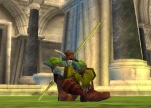Sexe : HommeRace : Elfe
Faction : Alliance
Formation : Druide
Description : Aldüyn vit sans attaches, au gré des voyages. Il évite de se mêler aux rixes, aux combats et se laisse vivre au gré de la nature.
C'est un elfe courtois dans les deux sens du terme. Sa politesse s'adresse à tous, avec un léger surplus pour la gente féminine qu'il admire et contemple avec bonheur. Son sourire est difficile à éloigner de ses lèvres.
Plus d'infos sur Aldüyn >>>
Lire le récit de Aldüyn >>>
ALIORK
Age : 30Sexe : Homme
Race : Humain
Faction : Alliance
Formation : Démoniste
Plus d'infos sur ALIORK >>>
Lire les 6 récits de ALIORK >>>
Allany
Age : 28Sexe : Femme
Race : Humain
Faction : Alliance
Formation : Paladin
Plus d'infos sur Allany >>>
Amadeüs
Age : 56Sexe : Homme
Race : Mort-vivant
Faction : Horde
Formation : Prêtre
Description : Amadeüs Brackwell a, avec toute sa famille, toujours pris soin
d'enrichir sa petite exploitation de potirons de la forêt Elwynn.
Tirant cette exploitation de l'héritage que lui a laissé son père,
il n'a eu de cesse de fournir au royaume, et particulièrement à la
noblesse de Stormwind, de quoi remplir les ventres et préserver la
santé des hommes dans un monde où les royaumes humains pouvaient
créer des conflits, et où les ennemis étaient de plus en plus nombreux.
Cela était avant l'arrivée des Orcs, en l'an dit "zéro", et les
troubles qui s'en suivirent. Dès lors, des manipulations magiques aux
guerres successives, la petite exploitation n'a plus pu atteindre sa
grandeur passé.
Tout d'abord, la famille dût s'exiler dans le royaume d'Arathor et se
réfugier en Lordaeron lorsque Stormwind fut détruite lors de la premi-
-ère guerre. Ce fut une période de disette, et Amadeüs arrivait à faire
subvenir sa famille grâce à des activités de médecin. Il y avait en
effet fort à faire : la peste envahissait la région, et des armées de
morts vivants tentaient de prendre possession des lieux : comme si les
conflit avec les Orcs n'était pas suffisant au malheur des peuples
humains, le Fléau arriva en ce monde. Les conflits -et donc les
blessés- étaient de plus en plus fréquents.
La peste était une horreur immense pour la peuplade humaine, pour qui
voir les corps revenir d'entre les morts était un spectacle horrible.
Amadeüs ne trouva rien dans quoi se réfugier, si ce n'est une chose :
la Foi en la Lumière. Prier était tout ce qu'il restait pour espérer
ne pas être emporté à son tour.
Mais les humains perdaient pieds, et le Fléau prenait le pas. Lordaeron
dût être abandonnée. Encore une fois, un royaume humain chutait, mais
s'étant impliqué, Amadeüs ne le supporta pas, cette fois-ci. Aussi,
lorsqu'il entendit dire qu'un groupe d'irréductibles ferait tout et
resterait coûte que coûte pour reprendre leurs terres, il se decida à
les rejoindre. Il rallia donc les rangs de la Croisade Ecarlate.
Il su convaincre sa famille de rejoindre Elwynn, où Stormwind était en
cours de reconstruction. Il leur donna son argent, pour qu'ils
reconstruisent la ferme aux potirons des Brackwell. Il les rejoindrait
lorsque tout serait rétabli ici.
Mais quelque chose n'allait pas. Lui qui avait été si jovial et rieur
auparavant changeait. Ces terres, et il y avait de quoi, le rendaient
mal à l'aise. Il se sentait parfois sombrer dans la folie,
se sentant observé, traqué par il ne savait quelle forme mystérieuse.
Parfois, il avait le sentiment de voir une ombre rôder aux environs de
ses campements. Il essayait d'oublier. Mais la Croisade Ecarlate
s'installait dans les prairies de Tirisfall, et il lui fallait des
emplacements logistiques. Ainsi que de la nourriture. On lui demanda
alors de s'occuper d'un champs que l'on planterait pour nourir les
troupes. Sa foi en la lumière était désormais inébranlable, et c'est
avec le sens du devoir qu'il accepta, il y planta des potirons, et
subvenait aux besoins des derniers bastions humains de la région de
Lordaeron.
Puis on entendit dire que, à l'interieur de Lordaeron, une guerre
civile éclata. On s'en délectait. On se ravisa vite, car la victoire
des insurgés (connus sur le nom de Réprouvés) qui s'approprièrent la
ville, provoqua désormais une double menace sur la croisade : le Fléau,
ennemi de toujours, mais aussi les Réprouvés, qui devaient s'installer
confortablement dans la région pour repousser ceux dont ils avaient
su se contraindre.
Bien que l'ennemi fut commun, le Fléau, l'alliance avec des morts
vivants était impossible, et il fallut redoubler de vaillance.
Le nombre de morts redoublait également, et il fallait un prêtre pour
leur accorder une sépulture déscente. Amadeüs se senta à même
de relever ce défi, et projettait la Lumière sur ceux qui avaient
connu l'Ombre.
Mais cela ne dura pas. Car le Fléau redoubla lui aussi de Véhémence,
et envoya une maladie nouvelle sur les prairies de Tirisfal.
Plus violente que jamais. Amadeüs mourrut quelques jours après le
début de l'épidémie, dans une vomissure de sang.
Dans la panique, son corps fut abandonné. Il rejoignit les armées du
Fléau. Pendant 4 années, son corps fut dénué de toute conscience.
Il combatit au simple gré de la volonté du Roi Liche ses anciens frères
de la Croisade Ecarlate, puis, surtout, les Réprouvés. Simple chair de
combat, il finit par tomber. Une Ombre s'approcha alors de lui. Elle
le regarda longuement, et vit dans ces yeux une étrange lueur, carac-
-téristique. Celle des hommes qui se racrochent à la vie, même au delà
de la mort. Il le pris par un bras, et le traina à quelques pas d'ici,
au Glas. Si dans quelques jours il ne serait pas, après 4 ans, eveillé
de nouveau par sa propre volonté, il faudrait le brûler.
Plus d'infos sur Amadeüs >>>
Ancorion
 Age : inconnu
Age : inconnu
Sexe : Homme
Race : Elfe
Faction : Alliance
Formation : Guerrier
Description : " Quelle est ce dessin..? Pourquoi me suis t-elle..? Quel est mon nom..? D'où je viens..? "
Plus d'infos sur Ancorion >>>
Lire les 3 récits de Ancorion >>>
Anissyj
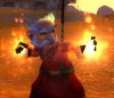Sexe : HommeRace : Gnome
Faction : Alliance
Formation : Mage
Description : Annisyj ne sait pas d'où il vient, aucun souvenir avant son "réveil" dans la neige, en bas d'Ironforge. D'ailleurs Anissyj ne sait pas ce qu'est un souvenir, et Anissyj ne sait pas ce qu'est un réveil. Anissyj ne dors jamais.
Tout ce qu'il sait, c'est qu'il n'est pas un gnome comme les autres, et ca il va falloir qu'il y trouve une solution.
Plus d'infos sur Anissyj >>>
Aram
Age : 25Sexe : Femme
Race : Mort-vivant
Faction : Horde
Formation : Prêtre
Description : J'étais infirmière à Dalaran lorsque le Fléau m'a tuée. Je ne sais pas qui m'a enterrée là où je me suis réveillée, mais j'étais entre les mains des Réprouvés.
Ma nouvelle condition de mort-vivante me fait encore plus aimer mon métier: non seulement je soigne les vivants, mais je soigne même les morts maintenant !
J'espère que tout le monde pourra bientôt partager mon bonheur de mort-vivante, et je pense que nos dirigeants à Undercity font tout ce qu'ils peuvent pour amener les vivants sur la bonne voie.
J'ai toujours autant d'envie pour les jolies robes, et je remercie la mort de ne pas avoir abîmé mon teint. Si seulement mes articulations avaient pu rester aussi belles que mon visage...
Je me suis aussi découverte une passion pour la recherche. C'est sûrement toute cette agitation permanente de mes pairs pour aider les apothicaires... Toujours est-il que je veux absolument tout comprendre du monde et je mène des enquêtes approfondies sur tous les sujets qui me sont accessibles.
Pour le moment je reste surtout dans les zones contrôlées par les Réprouvés, mais il m'est arrivé de faire des voyages vers les nouvelles terres de Kalimdor, chez les orcs. C'est surtout pour respecter les ordres, car à vrai dire, je ne vois vraiment aucune raison de les aider. Néanmoins, tant qu'ils ne sont pas morts, j'accomplis mon devoir: je soigne.
Plus d'infos sur Aram >>>
Arcanestra
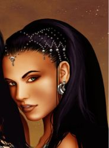Age : 19Sexe : Femme
Race : Humain
Faction : Alliance
Formation : Mage
Plus d'infos sur Arcanestra >>>
Lire les 2 récits de Arcanestra >>>
arcasis
Age : 25Sexe : Femme
Race : Mort-vivant
Faction : Horde
Formation : Guerrier
Plus d'infos sur arcasis >>>
Argrima
 Sexe : Homme
Sexe : Homme
Race : Humain
Faction : Alliance
Formation : Prêtre
Description : Comme une âme perdue, Argrima arpente les rue de Stormwind en attendant l'heure de sa convocation. La nuit commence à peine à tomber, sur le chemin quelques vendeurs lui proposent des mets aussi divers qu'odorants.
Mais ce soir il n'a pas faim, il sait qu'il vient de prendre la plus grande décision de sa vie. Toute une partie de son être crie à la trahison, mais il est certain que si il ne suit pas ses sentiments, il ne lui restera que le regret jusqu'à la fin de ses jours.
La cloche de la cathédrale se met à sonner, à ses oreilles ce son prend un air de condamnation. Argrima arrive devant la cathédrale, il penche la tête et essai de contrôler le tremblement de ses mains, mais en vain. C'est une partie de lui qui va mourir dans quelques instant et son corps tout entier en est conscient.
D'un geste rapide il essuie les larmes qui montent à ses yeux, puis relève la tête et avance d'un pas pressé. Devant lui se dévoile une petite pièce, trois hommes sont assis en demi cercle, tous richement vêtu. Le plus âgé se lève et prend la parole.
"Argrima nous avons bien compris votre demande, mais nous nous posons tous la même question, avez vous conscience de ce que votre départ implique?"
Argrima sait qu'il n'y a qu'un moyen de couper court à cette conversation, si il laisse les choses traîner, ils vont vouloir lui donner un délai afin de réfléchir, ce qu'il souhaite éviter à tout prix.
Il pose un genoux à terre et proclame d'une voix forte,
"Je suis conscient que je renie ma parole, si c'est ce que vous voulez me faire dire, et je le fait sans regret. Mon seul regret est d'avoir un jour eu l'idée de me mettre aux ordres de l'église."
Argrima relève la tête satisfait, il n'aurait pas eu de meilleur résultat si il les avait giflés. Le vieil homme s'approche de lui au point de lui faire sentir les relents de son haleine et lui dit d'une voix cassé,
"Je vais vous dire sincèrement comment je vois les choses, vos sentiments ne sont qu'un prétexte pour cacher votre lâcheté, je ne suis pas idiot Argrima, je sais que vous connaissez cette femme depuis peu de temps, ceci est votre dernière chance soyez en conscient."
Lâche, le mot résonne dans sa tête pendant un long moment, ses mains tremblent de plus en plus fort, mais cette fois ci ce n'est pas la peur qui les animes mais la fureur. Ces hommes ne connaissent pas les souffrance qu'il à pu endurer, ils ne comprennent pas que la solitude le suit depuis la mort de ses parents et qu'il vient enfin de trouver un échappatoire. D'un geste brusque Argrima se relève et sort sa masse, il avance jusqu'à la table au centre de la pièce et frappe de toutes ses forces laissant une profonde marque.
Les trois hommes reculent et le fixent avec stupeur. Doucement le calme revient dans la pièce. Argrima laisse la masse légèrement enfoncé dans la table et s'adresse au vieil homme,
"Ceci est ma réponse, ma dernière chance je la laisse à quelqu'un d'autre, une personne qui doute d'elle même est faible, j'ai moi même fait preuve de faiblesse pendant un temps, mais c'est désormais fini. Adieu et que la lumière vous garde."
Sans un mot de plus et sans un regard en arrière Argrima quitte la cathédrale.
Enfin le parchemin est arrivé. Argrima commence à le lire fébrilement, dans une écriture déformée quelques phrase lui donnent l'emplacement de celui qu'il cherchait depuis si longtemps.
Irvin le prêtre qui l'a recueillit lorsqu'il était enfant et qui n'a plus donné de nouvelles lorsque Argrima est parti pour Stormwind. Argrima sait qu'il doit à tout pris le retrouver. Il a tant de questions à lui poser, et il souhaite surtout savoir ce qu'Irvin va penser de sa nouvelle vie.
Mais quelque chose ne tourne pas rond, cette écriture ne lui ressemble pas. Argrima décide de repartir pour son village natale afin de questionner quelques personnes. Il parvient aisément à retrouver la petite église et frappe à la porte. Un homme assez jeune vient lui ouvrir.
Argrima l'observe attentivement pendant quelques instant pour vérifier s'il ne le connait pas puis lui dit: "Bonjour je suis Argrima, un ancien élevé du pére Irvin, c'est moi qui vous ai envoyé une lettre demandant des nouvelles du pére."
Le jeune homme recule d'un pas, puis après une certaine hésitation lui répond: "Irvin est parti dans les plaguelands, je ne veut pas être défaitiste mais cela fait de longs mois qu'il n'est pas revenu et je doute de sa survie. Je ne sais pas si vous êtes au courant mais trés peu de gens parviennent à revenir vivants de ces régions contrôlées par le fléau."
Argrima pose sans y réfléchir la main sur la poignée de sa dague.
" Je sais, j'ai entendu quelques récits sur ces régions. Mais je vais quand même partir à sa recherche".
Quelques heures plus tard Argrima parvient à réunir tout l'équipement qui lui sera nécessaire. Le plus long trajet se fera à pied, et malheureusement il lui faudra prendre un griffon pour la fin du voyage.
Finalement après quelques jours Argrima parvient à l'entrée des plaguelands de l'ouest. Le ciel parait plus sombre, une brume constante rend la respiration difficile. Mais le pire reste l'odeur, une odeur de pourriture qui s'imprègne partout. La moindre ration que l'on veut manger prend un goût ignoble. Argrima referme son sac et se relève, il n'a pas envie de s'attarder dans les environs.
A peine à t'il fait quelques pas qu'un rire s'élève de l'autre coté de la route. Un homme à qui il manque une bonne partie du visage s'avance vers lui, un filet de bave dégoulinant de ce qui lui reste comme lèvres.
Pris de panique Argrima recule puis sort sa dague. Le mort vivant ne semble pas apprécier que son repas cherche à se défendre, avec un cris rauque il se précipite pour mordre sa proie. Argrima cherche à l'intercepter avec sa dague, et il y parvient, elle s'enfonce jusqu'à la garde mais ne semble pas gêner la créature.
Alors que la situation semble désespérée Argrima prononce rapidement une prière. Une aura de lumière l'entoure, lui apportant chaleur et réconfort. Le mort vivant surpris tente de le frapper de toute ses force, mais le coup est dévié par cette lumière bienfaitrice.
C'est à ce moment qu'un cris se fit entendre derrière lui.
"Pousses toi donc de la pauvre imbécile".
Argrima se retourne et voit avec la plus grande surprise un nain qui se tient à trois pas de lui. Il porte un fusil qui semble dater de la création du monde en joue. Une détonation se fait entendre. Argrima entend un bourdonnement lui passer juste à coté de l'oreille, et vois avec surprise la tête du mort vivant se séparer de son corps.
Le nain s'avance alors parle avec un accent trés prononcé.
"Alors qu'est ce que tu vient faire par ici? Encore un idiot qui vient voir la tombe d'Uther hein? T'as de la chance que je sois arrivé à temps sinon tu finissais au repas de cette chose."
Argrima fixe le nain droit dans les yeux et lui dit avec fermeté:
"Je me fiche de cette tombe, je suis venu voir le pére Irvin qui vit normalement dans ces terres. Savez vous ou il se trouve?"
Le nain pose son fusil et dit à voix basse:
"Je sais ou il est. Mais à ta place je serais méfiant il y a eu pas mal de problèmes par ici tu peut me croire. Tu vas devoir te rendre au camp proche des ruines d'Andorhal, tu ne peut pas le rater en suivant la route. Moi je te laisse te débrouiller, Irvin était un bon ami mais pas au point que je risque ma vie la bas. Pour tout te dire cela fait quelques jours que l'on ne reçoit plus de nouvelles de ce camp, et tout ceux qui sont partis en prendre ne sont pas revenu."
Sans un mot de plus Argrima reprend la route, puis après quelque heures de marche il parvient au camp. Ce ne sont que quelques maisons en ruines avec une grange qui semble avoir été reconstruite. D'un pas de moins en moins sur, Il s'approche de la grange et ouvre la porte. Une voix s'élève du fond de la grange.
"Mais regardez donc qui vient nous rendre visite, ne serait ce pas Argrima? J'espère que tu nous as apporté de quoi manger. Ne t'en fait pas nous n'allons pas faire les difficiles, même crue la viande que tu as amené à l'air délicieuse."
Sa vision commence à s'habituer à la pénombre et Argrima distingue la personne qui parle, mais il n'a pas le temps d'exprimer sa surprise et sa peur. Un premier coup lui tombe sur l'épaule et lui fracture la clavicule. Le second l'assomme.
La porte de la grange se referme avec douceur. Des bruits de mastications humides s'élèvent de derrière les murs.
Plus d'infos sur Argrima >>>
Arthémìs
 Age : 25
Age : 25
Sexe : Homme
Race : Humain
Faction : Alliance
Formation : Voleur
Description : Arthémìs est un jeune voleur au visage d'ange. Il cherche constament à améliorer ses talents ne recule devant aucun défi.
En lui parlant on se rendra compte qu'il à reçu une bonne éducation, et qu'il sait ce que sont les bonnes manières et la noblesse d'esprit.
Il sera pratiquement toujours accompagné d'une jeune guerriere, et lorsqu'ils ne sont pas en train de jouer au avanturiers, on les verra comme un jeune couple très amoureux.
Arthémìs, est aussi un peu poète, avec de la chance vous pourrez l'entendre chanter doucement a l'oreille de celle qu'il aime...
Plus d'infos sur Arthémìs >>>
Lire le récit de Arthémìs >>>
Aspario
Age : 25Sexe : Homme
Race : Humain
Faction : Alliance
Formation : Mage
Description : Voici un jeune homme plein d'entrain, joyeux et vif, toujours souriant, sauf lorsqu'il perd patience. Et la Lumière sait que cela arrive plus vite qu'on ne s'y attend !!
Plus d'infos sur Aspario >>>
Astaethïen
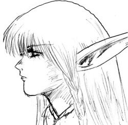Age : 300Sexe : Femme
Race : Elfe
Faction : Alliance
Formation : Guerrier
Description :
Elle était devenue Prêtresse afin de faire perdurer le lien de sa famille à Elune.
Elle est devenue Chasseresse afin que sa fille puisse être nourrie..
Elle suit aujourd'hui sa propre voie...celle des Protécteurs d'Elune..
Plus d'infos sur Astaethïen >>>
Lire les 8 récits de Astaethïen >>>
Athos Darek
Age : 25Sexe : Homme
Race : Elfe
Faction : Alliance
Formation : Druide
Plus d'infos sur Athos Darek >>>
Aubedunst
Sexe : FemmeRace : Mort-vivant
Faction : Horde
Formation : Prêtre
Description : Je me nomme Aube Dunst. Il y a quelques années j’étais une combattante de l’église, suivante de Jaina Proudmoore. C’est auprès d’elle que j’ai étudié vos peuples et votre langage. Mais lors de la Grande Guerre je suis tombée, et le Fléau m’a emporté. C’est la Dame Sylvanas qui m’a sauvé, ou du moins m’a rendu ma conscience. Très vite je me suis rendu compte que ma condition me permettait une chose étrange. Je peux ressentir les douleurs d’autrui et ainsi l’en préserver. Tant que la mort ne me m’accueillera pas je l’empêcherais de prendre d’autres âmes. Voyant la déchéance de l’Humanité je me tourne vers vous car j’ai vu que vos Chefs sont nobles.
Plus d'infos sur Aubedunst >>>
Lire le récit de Aubedunst >>>
avekor
Age : 20Sexe : Homme
Race : Troll
Faction : Horde
Formation : Guerrier
Plus d'infos sur avekor >>>
Averell
 Age : 22
Age : 22
Sexe : Homme
Race : Humain
Faction : Alliance
Formation : Guerrier
Description : Après avoir vécue une enfance réfugier dans ses rêves, afin d’échappé le plus possible à ce qui ce passé dans le monde. Il fut jeté dehors par son père, qui en avait marre d’attendre qu’il se décide à reprendre l’entreprise familiale de construction. Ne sachant pas quoi faire il errât pendant quelque temps avant de se retrouvé presque sans un sous ce qui le poussa à parti au Northshire (au comté du nord) là ou une affiche, qu’il avait lu, prétendait que l’on avait besoin de bras.
Plus d'infos sur Averell >>>
Lire les 21 récits de Averell >>>
Axael
Age : 17 AnsSexe : Homme
Race : Humain
Faction : Alliance
Formation : Démoniste
Plus d'infos sur Axael >>>
Baalshath
Age : 34Sexe : Homme
Race : Humain
Faction : Alliance
Formation : Démoniste
Plus d'infos sur Baalshath >>>
Badb
Age : 20Sexe : Femme
Race : Troll
Faction : Horde
Formation : Voleur
Description : Je suis l'une des pupilles du vieux Gavrin, une des nombreux orphelins rescapés des jungles de Strangleronce dont les parents ont trouvé un destin fatal aux mains cruelles des Murlocs. J'ai grandi à Sen'Jin, éduquée par une communauté encore éprouvée par son triste passé mais appliquée à faire de ses enfants de fiers et respectables membres de la Horde.
Mon instinct frondeur, indépendant et vif m'a mené à embrasser la noble carrière de voleuse, langue agile, lame acérée et leste main.
Plus d'infos sur Badb >>>
Bahall
Age : 26Sexe : Homme
Race : Humain
Faction : Alliance
Formation : Guerrier
Plus d'infos sur Bahall >>>
Balmon
 Age : 24
Age : 24
Sexe : Homme
Race : Humain
Faction : Alliance
Formation : Démoniste
Description : Orphelin ,découvert à Stratholme dans un coin d'une ruelle ,il avait échapper à la bataille entre le Fléau et l'Alliance. Il fut transporter de ville en ville mais fut à chaque fois obliger de partir.
Lordaeron fut sûrement l'un plus long foyer ,à cette époque ,Balmon n'avait que 14ans, il avait trouver un amour ,une haut-elfe, son nom ,il l'a oublier. Elle avait disparu juste aprés la mort du Roi Terenas lors de la cérémonie d'accueil pour son fils Arthas.
Passant par plusieurs villages...Village de Pyrewood...Southshore...Stormgarde. Ils étaient obliger de voler avec le peu d'expérience qu'il avait. Il décida de partir pour Ironforge peut-être que l'accueil serait plus chaleureux que ces villes encore troubler de la fin du Royaume de Lordaeron. En chemin ,il avait remarquer qu'un homme étrange l'avait suivit depuis Southshore, il voulait essayer de lui échapper mais il était toujours derrière lui. Pour aller à Ironforge ,il dut passer par un marais mais un elemental ne l'épargna pas et prit décision de l'attaquer. Balmon ne pouvait rien faire et s'était simplement recroqueviler sur lui-même ,l'homme mystérieux intervenu et éradiqua l'elemental de boue avec un sort "noir". Il ne lui disa rien mais il l'accompagna jusqu'au Northshire et lui dit que son avenir se jouerait en temps que démoniste ,cette homme était trop gentil...Au point ,qu'il cachait sa vrai nature.
Dix ans aprés ,il ressortait de l'église de Northshire prét à débuter ces premières découvertes sur la magie et la folie que elle entraînait si elle n'était pas bien contrôler. Il fit la connaissance de beaucoup de personne mais rester discret. L'homme mystérieux avait disparu mais il avait eu le temps de laisser à Balmon ,un autre message que dix ans ,plus tard à l'entrée de Northshire ,un homme viendrait le chercher, il le ferait rejoindre son culte, appeler Le Sceau de Karzavaarn.
Plus d'infos sur Balmon >>>
Blackpelt
Age : 28Sexe : Femme
Race : Tauren
Faction : Horde
Formation : Guerrier
Plus d'infos sur Blackpelt >>>
Blindfold
Sexe : HommeRace : Tauren
Faction : Horde
Formation : Druide
Plus d'infos sur Blindfold >>>
Borthak
Age : 125Sexe : Homme
Race : Nain
Faction : Alliance
Formation : Voleur
Plus d'infos sur Borthak >>>
boumsec
Age : environ 170000Sexe : Homme
Race : Elfe
Faction : Alliance
Formation : Chasseur
Plus d'infos sur boumsec >>>
Braindille
Age : 45Sexe : Femme
Race : Gnome
Faction : Alliance
Formation : Voleur
Plus d'infos sur Braindille >>>
Lire les 8 récits de Braindille >>>
Brynhild
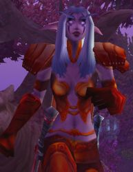Age : 629 ansSexe : Femme
Race : Elfe
Faction : Alliance
Formation : Chasseur
Description : Un silence de mort plane au dessus du mont Hyjal. La fin de la bataille fut pour moi comme un réveil après un rêve agité. Je me tenais debout au milieu de cadavres sanguinolents de démons et d’alliés. Mon arc était brisé et ma dague couverte de sang. Mes gants portaient encore les traces de morsures des Fellhunters. Mes oreilles sifflaient. Enfin, mes muscles me faisaient atrocement souffrir. Je n’ai pourtant de ce jour que des souvenirs fugaces et de vagues impressions : l’odeur du sang, les cris des mourants, le fracas des armes, etc… Tout ce que je sais, c’est que la Légion Ardente fut défaite à jamais.
Plus d'infos sur Brynhild >>>
Lire les 3 récits de Brynhild >>>
Cairistiona
Age : 60 ansSexe : Femme
Race : Elfe
Faction : Alliance
Formation : Chasseur
Description :
Cairistiona est la plus jeune de trois filles. Ses grandes soeurs, Thelsian, Prêtresse d'Elune et Elensiir, druidesse, passent leur temps à la protéger. Encore insouciante et même innocente, elle porte le réconfort quand elle le peut.
Amoureuse de la nature, femme enfant, elle aime a passer du temps à danser, à jouer avec ses familiers. Quelqu'un qui passe inaperçue, non point d'une beauté faramineuse, mais possédant un sourire toujours joyeux.
Plus d'infos sur Cairistiona >>>
Caitlyn
 Age : Environ 25 ans
Age : Environ 25 ans
Sexe : Femme
Race : Humain
Faction : Alliance
Formation : Démoniste
Description : Je ne me souviens pas de mon enfance. Mes premiers souvenirs datent d'une dizaine d'années lorsque j'ouvris les yeux sur un visage bouffis, aux traits marqués par le temps. D'après ce petit bout de femme, elle m'avait trouvée au beau milieu de la route qui joignait Thelsamar à Menethil, le visage contre terre, inerte. Me croyant blessée à mort par une bête, elle faillit passer son chemin mais un faible gémissement lui fit arrêter le pas de sa mule. De cette rencontre, je n'en garde aucune trace, malgré les nombreuses fois où j'ouvris les yeux pour lui débiter des torrents de paroles sans queue ni tête, où je mentionnais dragons et chimères, femmes crachant feu et lumières, jusqu'à l'effrayer. Elle m'avait recueillie dans sa demeure modeste, nourrie, lavée, pendant que mon esprit errait entre le monde des vivants et des morts, altéré par la folie.
Lorsqu'au bout de quelques mois je m'éveillai pour de bon, je crû que ma tête étais enserrée dans un étau tant elle me faisait mal. Qui j'étais, d'où je venais, je n'en savais strictement rien. D'après la naine dont l'accent et l'expression me faisaient souvent sourire, mon prénom devait être Caitlyn car je m'étais présentée ainsi, au cours de mes fréquents "réveils". Mon nom, quant-à lui, est un emprunt de celle que je considère comme une mère et qui me traita les années qui suivirent comme la fille qu'elle n'a jamais eu.
Lorsque la mort me l'a prise, c'est vers une vie d'ermite que je me tournai, résolue à découvrir mon passé, et ces noms.... ces noms qui trottaient dans ma tête sans qu'aucun ne puisse me dire d'où ils viennent.
Plus d'infos sur Caitlyn >>>
Lire les 3 récits de Caitlyn >>>
Chastedy
Sexe : FemmeRace : Humain
Faction : Alliance
Formation : Guerrier
Plus d'infos sur Chastedy >>>
Cheena
 Age : 24
Age : 24
Sexe : Femme
Race : Humain
Faction : Alliance
Formation : Voleur
Description : De l'ombre à la lumière, Cheena est là, depuis toujours. Elle veille et protège, aimant sans haïr. Son coeur autrefois brisé s'est raccommodé de fils d'or et elle est prête à y inclure jusqu'à ses pires ennemis.
Plus d'infos sur Cheena >>>
Lire les 56 récits de Cheena >>>
Chfeurouch
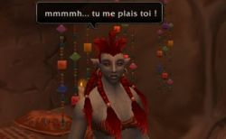Age : 20Sexe : Femme
Race : Troll
Faction : Horde
Formation : Mage
Description : Chfeurouch est une jeune troll... complètement jetée et avide des plaisirs de la chair. Elle adore les trolls males et est éprise de curiosité pour l'anatomie Taurenne, qui, parait-il, est bien gâtée !
Chaque nuit, elle ne veut qu'une chose, être dans son lit avec un homme.
Chfeurouch n'aime pas s'attacher, elle préfère papillonner.
Si vous êtes un troll ou un tauren et que vous la croisez, un bon conseil, fuyez la, elle ne vous lachera pas d'une semelle si elle vous voit.
elle aime beaucoup se promener en sous-vêtements
Son prénom lui vient de sa mère qui, il faut l'avouer, devait certainement priver, quelque part, un village de son imbécile.
Quand sa mère vit les cheveux rouges de sa fille, elle l'appella bêtement Chfeurouch.
Chfeurouch fait partie d'une famille nommée Van De Chfeulongs... apparemment, l'ancêtre qui avait créé cette famille n'avait également pas inventé l'eau chaude.
En général, Chfeurouch aime qu'on l'appelle comme on a envie de l'appeller (c'est pour ca qu'une de ses phrases favorites, c'est "Appelles moi comme tu le voudra mon mignon"), elle dévoile rarement son prénom (et encore moins son nom)
Plus d'infos sur Chfeurouch >>>
Lire les 3 récits de Chfeurouch >>>
Ciae
 Sexe : Femme
Sexe : Femme
Race : Elfe
Faction : Alliance
Formation : Voleur
Description : Quel homme ne s'est pas fait pincer les fesses pour entendre ensuite son rire ou croiser son regard amusé appuyé d'un sourire taquin et enjôleur?
Méprisante envers la gente féminine, Ciae est toujours aimable et chamante avec les hommes. Voilà deux raison pour les femmes de la detester...
Plus d'infos sur Ciae >>>
Lire les 2 récits de Ciae >>>
Cinitia
Age : 17Sexe : Femme
Race : Humain
Faction : Alliance
Formation : Prêtre
Description : Cinitia Frostsoul, est la jeune soeur du noble paladin Khinan Frostsoul. Enfants orphelins, l'aîné s'est toujours occupé de la jeune fille. Il est clair que devenir prêtresse est plus une fascination, une admiration pour son frère qu'une vocation. Mais qu'importe, même si elle reste parfois insensible aux dogmes établis par sa religion, elle reste fidèle aux principes qu'on lui a inculqués, à savoir toujours aider son prochain, être généreuse... Sa fascination l'a conduite à essayer de retrouver son frère, car ce n'est pas un secret pour elle, il a beaucoup voyagé, et il est bien difficile de suivre ses traces...
Plus d'infos sur Cinitia >>>
Conservateur
 Age : 67
Age : 67
Sexe : Homme
Race : Humain
Faction : Alliance
Formation : Prêtre
Description : Historien de la Bibliothèque Royale de Stormwind
Conservateur agréé, diplomé des Ecoles de Lettres Supérieures de Lordaeron.
Vît actuellement a Stormwind.
Plus d'infos sur Conservateur >>>
Corzeeus
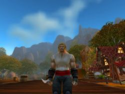Age : 25 ansSexe : Homme
Race : Humain
Faction : Alliance
Formation : Voleur
Description : t
Plus d'infos sur Corzeeus >>>
Lire les 3 récits de Corzeeus >>>
Cyraneau
 Age : La trentaine
Age : La trentaine
Sexe : Homme
Race : Gnome
Faction : Alliance
Formation : Démoniste
Description : Une détonation
Je relève la tête de mes feuilles de calculs, et je tente d'e deviner le genre de l' explosif qui à fait ça.
_" Mmmh... probablement un chapelet de dynamite grossières... 2 chapelets assez proche qui auraient sautés simultanéement... "
Mon frère me crie de son atelier, dans la cave :
_" Qu' est-c' tu dit ?
_C' est deux chapelets composée d' environ 6 ou 7 dynamites grossières qui viennent d' exploser selon moi !
_Que veux tu que ça me foute ?
_Ah ah ... "
Je rit dans mes moustaches.
Mon frère n' est pas brillant dans mon domaine. Il préfère l' achimie. Mais moi, en plus d' être ingénieur, je suis aussi Alchimiste ! Et non des moindres ! Je suis aussi bon que mon frère malgré le fait que je me consacre presque uniquement aux explosifs.
C' est parce que mon frère s' interesse surtout à l' Herboristerie. Je prefere dire ça quand je parle de lui.
Il fait mine d' étudier l' alchimie, mais il passe le plus clair de son temps à fumer des herbes bizarres qui le rendent tout aussi identique.
Mais j' éxagère, il bosse bien. Et il fait des choses très interessantes d' ailleurs, quand il est dans son etat que je qualifierait de "second".
Une détonation plus proche suivie d' une longue resonnance.
_Aha ! Ca, c' est du joli ! -Dis-je avec une expression de mélomane.
_Rah la la la la la ! Mais on peut plus se concentrer avec tout ce bordel ! -répond mon frère qui remonte de son atelier en fumant un étrange cigare. Il à les yeux dans le vague et semble très calme, malgré ce qu' il vient de dire. Il a les mains dans les poches et je me demande si il les a sorties pour travailler depuis ce matin.
_Ce "bordel", comme tu dit, est ma source d' inspiration frerot. -lui dis-je en souriant.
Il rigole en secouant la tête comme pour dire : Quel barjo !
Il ne s' est pas regardé !
Il retire les mains de ses poches et prend son cigare entre les doigts. Il se dirige vers le fenètre à coté de la porte d' entrée blindée à fermeture verticale-automatique.
Il regarde dehors, dans le couloir 73 de la zone 14 du 5ème sous-sol.
C' est là que nous habitons. Mon frère et moi, depuis plusieurs décénies.
Je le regarde, et me rapelle quand nous étions enfant, a Gnomerivage. Un port gnome assez petit où les inventions de notre peuple étaient embarquées par bateau pour on-ne-savaient quel commanditaire.
On ne savait même pas qu' il y' avait des gens au-delà de la mer. On était des petits gnomes. Moi j' avais 8 ans et mon frère 7. Notre mère on ne l' a jamais connue. Pendant des années, on ne savait ni qu' on en avait une, ni qu' elles existaient, ces chose que les gens appelent avec amour : Mère...
Donc, quand on à entendu parler de mère, on est allez voir chef. Chef, c' était un peu notre "père". On ne savait pas que les "pères" existaient non plus...
Bref, Chef nous dit que notre mère étaient son ancienne serveuse et qu' elle était morte en nous mettant au monde.
Nous "mettre au monde" ?
On ne savait pas ce que ça voulait dire non plus.
On pensait que les gnomes était construit par des ingénieurs, comme tout ce qui existe.
Mais non, rien n' est simple. Tout doit être compliqué. Mais comme je dit toujours : " C' est normal que ce monde soit pourri ! Il à pas été inventé par les gnomes ! "
Les gens aiment pas quand je dit ça. Je vois pas pourquoi.
Bref, une mère morte en couche par la faute d' un père marin.
On a même pas voulu se venger de notre père, ni le retrouver.
A cette époque, on s' en foutait de tout. C' était déjà assez dure de survivre comme ça.
On travaillaient dans les docks. On portait les caisses d' explosifs pas trop lourde. Avec interdiction formelle d' y toucher.
Mais comme je l' ai dit, à cette époque, on s' en foutait de tout, y compris de ce qu' il y' avait des les caisses qu' on transportait.
Maios un jour, un gnome que les autres appelait "Pirate" nous demanda nos noms. Je disais que je m' appelait Cyraneau et que mon frère s' appelait*
De petites détonations de fusils retentissent.
_"Ah. Ils attaquent dans le couloir 74 ou 72 ! C' est pas loin d' ici que ça pète ! -dis-je en me sortant de mes souvenirs sans noblesse ni beautée quelconque.
Il y' a un silence. Mon frère, tojours calme, crache une bouffée de fumée verdâtre et dit :
_Ouais.
Mouais. C' est pas aujourd' hui qu' il va atteindre des sommets d' efficacité. Mais rien n' est perdu, il ecrase son cigare dans le cendrier anti-incendie de ma confection.
Il remet ses mains dans ses poches mais ne se retourne pas. Au bout d' un moment, il dit, couvrant les coups de feu qui ne semblent pas s' arrêter.
_Tu crois que c' est des troggs ? Ou c' est encore une emeute ?
Je rit.
_ AH ah ah ah ah ! Si les troggs étaient arrivée jusqu' ici, y' aurait plus que des petits coups de feu mon cher *Grosse détonantion, les coups de feu s' arrêtent.*...agit juste d' un stock qui vient de péter, comme d' habitude.
_Ouais.
Je range mes feuilles. Il y' a peut-être des dégats importants à observer dans les couloirs voisins. C' est toujours très interessant d' observer les dégats dus à des explosifs.
_Bon, on va voir ce qui a explosé ? demandé-je en souriant.
_Oooooki mon gars ! répond mon frère en se tapant le genou avec enthousiasme.
Je met mes feuilles dans mon armoire automatique et ferme en activant le code secret. A cause de l' invasion des troggs, il y' a des pilleurs dans Gnomeregan. Mais je pense qu' ils n' oseraient jamais s' attaquer à la maison des de Acrylate !
On sort dehors et la porte blindée à fermeture verticale-automaitque se referme derriere nous.
On descend le perron et on arrive dans le couloir 73 éclairé par les lampes Gnomhallogènes. Moi et mon frère, on marche sur le bétron, matière solide utilisée pour bétronner les milliers de couloir de Gnomeregan.
Mon frère à toujours les mains dans les poches.
Monsieur Balty, le boucher est dohrs, le fusil à la main. Lui, par contre, c' est fait piller son magasin par des pilleurs. Mais le pire, c' est que les autoiritées gnomes ont réquisitionnée son stock qu' il gardait bien à l' abris dans sa chambre froide-blindée. Pauvre Monsieur Balty...
Il me fait un signe de main en guise de bonjour.
Cet homme est courageux. Il est ruiné. Les autoritées n' ont rien pu faire pour empêcher le pillage de sa boucherie, mais elles n' ont pas oublié de réquisitionner le peu de nouriture qu' il lui restait !
Raah... Quand je vois cet homme, qui tente de garder la fâce alors que tout fout le camp, ici, à Gnomeragan, et que je vois comment les autoritées gèrent la crise, j' ai envir de tout faire sauter.
Le Grand-Artisant Mekkatorke est un imbécile ! Un incapable ! Ce n' est qu' un gros roublard quarismatique à la grande gueule qui ne sait rien à l' administration !
Ses perquisitions sont tout bonnement intolèrable !
Partout, il est affiché que la population gnome doit faire des efforts pour la guerre contre les troggs. Qu' il faut fournir armes, main d' oeuvre, materiel, nourriture et tout ce qui nous tient à coeur, au profit de l' armée !
Je fulmine de rage. Et je m' apperçoit que cette rage est affichée sur le visge de tout les gens du couloir 73 que je croise : Monsieur Bibletruide, Igard Valtrolo, Madame Fizzlespeed, la famille Blackpowder des sacrès adolescents que les Blackpowder ! Pas du genreà se laisse faire ! Les pilleurs les évitent, eux aussi. Les Blackpowder sont des braves gars. Et leur père un saint homme !
_" Salut Raspoutine Blackpowder ! Et salut à tes 7 fils !
Il mez rends mon salut et me tape sur l' épaule, le visage dur mais souriant :
_" Salut à toi Cyraneau ! Les temps sont durs n' est-ce pas ?
Mon frère salue tout les enfants Blackpowder d' une façon à la mode chez les jeunes de cet âge-là. Ils rigolent ensemble.
Je répond à Raspoutine.
_ Oui, les temps sont durs, et les réquisitions n' ont toujours pas été abolies... c' est inimaginable. Pour qui se prend Mekkatorke ?
Raspoutine fronce les sourcils. C' est un gnome immense, aussi grand qu' un nain. Sa présence peut-être aussi rassurante qu' effrayante.
_" Arrh ! Je suis en rage ! Je dispose de tout un stock de fusils chez moi. Les autoritées les savent et ne tarderont pas à faire une descente chez moi pour "réquisitionner" mon stock ! Je suis le prochain sur la liste Cyraneau, je le sens...
_Moi aussi j' ai la rage Raspoutine. Moi aussi je possède un stock enorme d' explosifs chez moi...
_Mais tu ne comprends pas Cyraneau ! Ses fusil font partis de la famille ! Ils sont ornés aux initiales de chacuns de mes fils ! Ils en ont reçus chacuns un à leur 15ème annniversaire, comme le veut le tradition familiale ! Qu' est-ce que je vais faire si les autoritées veulent me les prendre ! Je... je ne peut pas les laisser faire !
_Non, Raspoutine, mais ne t' inquiète pas. Je pense que si tu leur explique tout ça, ils comprendront et ne prendront que ton surplus de munitions par exemple...
_Franchement Cyraneau... tu y croit vraiment ?
Non, je n' y croit pas du tout. Chez les Brizzlesweet, ils ont tout prit, même le fusil familial du vieux. Et quand le fils à voulu empêcher cela, ils l' ont foutu en prison. Heureusement qu' ils l' ont relaché, parce que sinon, y' aurait encore eu une emeute.
_Cyraneau... tu y croit encore, toi ? A Gnomeregan ?
Raspoutine me regarde d' un regard que je n' avais encore jamais vu. Celui de l' homme qui doute, qui à peur, qui sent la fin arriver et qui n' y peut rien. A ce moment là, je lui dit:
_Raspoutine. Gnomeregan est foutue tant que Mekkatorke est au pouvoir. Il est manipulé par ses conseillers et il est complètement dépassé par la crise Trogg. Si Le Grand-Artisan saute, les conseillers sauteznt aussi.
_Attends, Cyraneau, qu' est-ce que tu me raconte là ?
Entretemps, d' autres personnes du couloir 73 se sont approchée de nous pour écouter. Nottement madame Doubtbringer à qui je fait la bise avant de continuer.
_Je veux dire par là que les conseillers ont peur de leur peau. Ils vont faire un coup foireux, horrible, je le sens...
Un gnome arrive, Trad Tanglejouayne, et lance:
_Comment ça ? Quel coup foireux ?
De plus en plus de personnes arrivent.
Je leur explique mes craintes.
_Messieurs et mesdames du couloir 73... Je craint fort que la crise echappe non seulement à ce pantin de Mekkatorke, mais aussi à ses conseillers eux-mêmes !
Ca, on le sait que trop bien ! -déclare une gnome aux cheveux roses.
_Je craint que toutes les réquisitions d' armes, de nouriture, d' explosifs, de médicaments, de matières premières, et de tout ce que nous possèdons, ne servent... non pas à attaquer les troggs, Mais...
Tous, ils m' écoutent, comme au discours des fêtes. Mais cette fois-ci pas de chapeaux pointus ni de serpentins dans l' air. Et certainement pas non plus de visages réjouis et enjoués, non. Ce sont les visages de la peur, de l' indignation et de la colère qui me regardent.
Et qui m' écoutent.
_Mais plutot pour organiser une défense sacrificielle !
Peu d' entre ex ont compris. J' illustre mon idée.
_Les quartiers riches font pression sur les conseillers ! Ils les corrompent ! Vous le savez tous après l' affaire Tourneboulon !
_Ouais ! -déclare une grande partie de l' assistance.
_Et bien je soupçonne les conseillers de prévoir une défense sacrificielle ! C' est à dire de réquisitionner toutes nos armes, touts nos biens pour se lancer dans une attaque sucidaire à l' encontre des troggd, et ceci dans le but de permettre aux riches de s' enfuir !
Mais nous, nous... Les habitants des sous-sols infèrieurs. Les quartiers pauvres... nous sommes hors des portes de sécurité ! Et vous savez ce que cela signifie ?
Toute l' assistance est choquée, la colère monte sur tout les visages. Comment puis-je être capable de susciter autant de haine ? Comment suis-je capable de faire éclater la verité au grand jour ? Pendant un instant, j' hésite à m' enfuir... mais je reste. Je n' abandonnerais pas ses gens !
_Cela signifie que les sacrifiés seront nous ! Oui, nous ! Les pauvres ! Les habitants des sous-sols infèrieurs ! Nous !
Et quand l' amrée de Mezkkatorke... ou pluto devrais je dire : Sa Milice dictatoriale ! nous aura dépouillé de tout nos moyens de survie, de nos vivres. De touts nos moyens de resistance, de nos armes et de nos explosifs. De tout nos moyens !
Que pourrons nous faire, quand les troggs parveindront jusqu' à nous ? Hein ? Désarmés ! Affamés ! Que feront nous ?
Car c' est précisemment ce qui va arriver... l' armée de Mekkatroke ne comptent pas user ses troupes à empêcher les troggs d' atteindre les niveaux inférieurs... non, Il resteront bien au-dessus à couvrir la fuite des riches !
Des cris de guerre résonnent dans le couloir 73. Qu' ais-je fait ? Aurais-je du me taire ? J' ai agit sous la colère et j' ai dit mes idées alors que je n' avais aucunes preuves ! Cependant, ils m' ont cru. Et ...
Ils m' acclament ?
Mais ! Ils font trop de bruit ! Les autoritées vont croire à une emeute et vont rappliquer ici ! Et en voyant une foule de gnome en colère, c' est précissment ce qu' il va se passer...
Je dois agir.
_SILENCE ! Mes frères, silence ! Nous savons le complot des conseillers. Si ils savent que nous sommes au courant, ils vont nous faire assassiner ou je-ne-sais quoi de pire ! Nous devons tous rtentrer chez nous dans l' ordre. Afin qu' ils ne se doutent de rien... mais si jamais l' on vientréquisitonner chez vous, ne vous laissez pas faire.
Et ne vous inquiètez pas... unis, ils ne peuvent rien contre nous. Ni les troggs, ni les autoritées.
Tous partent, l' allure determinée et fière. Ils partent rpéendre la nouvelle dans les autres couloirs, les autres sous-sols même, peut-être...
Je suis allé trop loin.
Mais il est trop tard pour reculer.
Je neput pas les decevoir.
Il se passera ce que j' ai dit.
Si jamais les autoritées viennent faire une réquisition au couloir 73,
Je déclencherais, la révolution...
Plus d'infos sur Cyraneau >>>
Lire les 3 récits de Cyraneau >>>
Dagarod
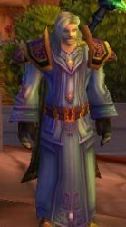Age : 55Sexe : Homme
Race : Humain
Faction : Alliance
Formation : Prêtre
Description : Né dans une riche famille du royaume d'Hurlevent, Dagarod profite d'une jeunesse heureuse, qui prendra malheureusement fin lorsqu'il avait 10 ans. Des brigands, attirés par l'immense fortune de sa famille, mirent à sac le manoir et tuèrent toute sa famille. Dagarod put fuir vers la ville d'Hurlevent.
Il fut alors attiré par la beauté de la Cathédrale de la Lumière. Les prêtres qui le virent là le placèrent à l'orphelinat. Il fut ensuite éduqué par des prêtres qui lui enseignèrent les voies de la Lumière Sacrée. A l'âge de 21 ans, il devient officiellement un prêtre du royaume d'Hurlevent.
Il parcourut les campagnes afin d'aider les autres, dans un mouvement altruiste lui venant de ses préceptes sur la Lumière.
Bien des années plus tard, lors des invasions orques, Dagarod se mis à disposition de l'armée. Il devient ainsi un prêtre de bataille. Les nombreuses blessures qu'il eût à soigner et le malheur des victimes de la guerre lui fit détester les sentiments obscurs tels que la haine et l'avidité.
Lors de l'invasion du Fléan en Lordaeron, Dagarod fut envoyé comme soutien à l'armée du Prince Arthas. Il prit part à ses premiers combats contre les morts-vivants, allant jusqu'à accompagner l'expédition du Prince en Northend.
Quittant le royaume de Lordaeron juste au moment où le Prince rentre en ville, Dagarod échappa sans le savoir au massacre. Il apprit la terrible nouvelle à son retour à Hurlevent. Il pris un détachement de combattants, parmis lesquels sa femme.
Malheureusement, sa femme fut tuée lors d'un combat et les soldats ne purent ramener son cadavre à Dagarod. Craignant le pire, il se mit en quête de la dépouille de sa femme. Lorsqu'il le retrouva, ses pires craintes s'étaient réalisées : sa femme était devenue une mort-vivante, prêtresse de l'Ombre. Dagarod l'affronta alors au cours d'un duel qui lui laissa une cicatrice sur la joue, mais surtout dans son esprit.
Prcourant désormais les diférents territoires afin d'aider les malheureux, il rencontra par hasard un homme d'âge mûr, portant tout comme lui la chevalière de sa famille. L'homme ne connaissait pas ses origines, et avait cette bague depuis toujours et avait été elevé par des parents adoptifs qui l'avaient délivré d'une bande de pillards.
Dagarod réalisa que cet homme ne pouvait être que son frère qu'il croyait mort, qu'il retrouva ainsi après 40 ans de séparation.
A ce jour, Dagarod occupe des fonctions spirituelles à Hurlevent et a officiellement pris sa "retraite militaire". Cependant, il garde toujours un oeil sur l'armée et est prêt à aider ses frères d'armes...r!
Plus d'infos sur Dagarod >>>
DaKatarn
Age : IndéterminéSexe : Homme
Race : Humain
Faction : Alliance
Formation : Démoniste
Description : (Texte en préparation)
"Lorsque vous avez éliminé l'Impossible, ce qui reste, si improbable soit-il, est nécessairement la Vérité."
"Comme en vous contemplant dans le mirroir:
La Forme et le Reflet se regardent.
Vous n'êtes pas le Reflet, mais le Reflet est vous."
Plus d'infos sur DaKatarn >>>
Lire le récit de DaKatarn >>>
Darkleaf
Sexe : HommeRace : Elfe
Faction : Alliance
Formation : Voleur
Plus d'infos sur Darkleaf >>>
Darksoul
Age : InconnuSexe : Homme
Race : Elfe
Faction : Alliance
Formation : Chasseur
Description : Darksoul fût élevé par des panthères car ses parents furent tués pendant la seconde grande guerre. Lors d'un voyage pour éviter la guerre ses parents furent pris en embuscade par un groupe de bandits, la mère de Darksoul eu juste le temps de cacher son enfant dans des brousailles avant de se faire exécuter tout comme son mari par ses malfrats. Un couple de panthères qui rodaient non loin du crime, sentirent la présence de l'enfant. Darksoul ne sais toujours pas pourquoi ces panthères le recueillirent et l'élevèrent au sein de leur famille, mais grâce à elles, il eu un don naturel pour la chasse qu'il améliora au fil des années. Lors de sa 11ème année Darksoul fît la rencontre d'un vieil ermite qui étonnait de faire la rencontre de ce jeune garçon en pleine jungle, decida de le prendre sous son aile. Le vieil ermite qui s'appelait "Whell" éduqua Darksoul, lui appris les techniques de chasse qu'il connaissait et lui donna le nom qu'il porte aujourd'hui. Whell curieux du passé de Darksoul, entrepris des recherches pour comprendre comment un enfant avait pût être abandonné dans la jungle, lors de ses recherches il trouva des écrits sur le massacre d'un couple d'elfes de la nuit par des bandits. Il hésita de dire la vérité à Darksoul car ne savant pas la réaction qu'il allait avoir, puis ne pouvant pas le laisser dans l'ignorance il décida de lui dire la vérité. Darksoul fût rempli de haine en apprenant cette nouvelle, il partis dans un camp de bandits qu'il connassait à l'encontre de ce que lui avait dit Whell. En arrivant là bas il tua tous ces bandits jusqu'a arriver à leur chef, il se lança dans le combat qui été perdus d'avance après un long combat le bandit pris le dessus mais alors qu'il allait asséner le coup final, le bandit fût frappé par une flèche dans le cou car Whell avait suivi Darksoul. Whell le ramena à leur cabane pour le soigner car Darksoul été gravement bléssé. Après avoir guéris de ses bléssures Darksoul fit la promesse à Whell de ne plus se laisser emporter par ses sentiments, mais il se promis à lui même de venger ses parents en tuant tous les enemis de l'Alliance. Darksoul decida de partir decouvrir le monde et de combattre le mal, le fait de quitter Whell lui fesait mal au coeur mais il de faire son chemin et écrire son histoire. Whell le compris et le laissa partir. Un beau jour lors d'une de ses quêtes Darksoul fît la rencontre d'un tigre dans les pronfondeurs de la jungle, il n'était pas comme les autres tigres. Ce tigre se pris d'amitié pour Darksoul et un grand lien se noua entre les deux êtres, Darksoul lui donna le nom de "Katuchi". Darksoul combat toujours le mal mais il n'est plus tous seul.
Plus d'infos sur Darksoul >>>
Delalande
 Age : 66 ans
Age : 66 ans
Sexe : Homme
Race : Humain
Faction : Alliance
Formation : Prêtre
Description : [/left]Delalande ...
Personne ne sait où il naquit ...
Et personne ne s' en occupe d' ailleurs ...
Si il n' y' avait pas ses cheveux blancs pour nous rappeler son âge , on jurerait qu' il n' a que 30 ans .
Perrus Delalande ne parle jamais de sa vie passé ... sans doute parce qu' il l' a passée uniquement à étudier et à prier .
Mais le 5ème jour de la décade du Singe de la lune d' agilitée (4ème Ere) , il sortit enfin de l' abbaye de Northshire où il avait passé pratiquement toute sa vie .
Pourquoi ?
Peut-être que cet homme qui avait une telle soif de savoir , c' était enfin apperçut que ...
Il était devenu très vieux , et ...
... qu' il allait bientot mourrir .
Il avait gaché sa vie ...
Il n' avait rien fait de ce qu' un homme doit faire ...
Certes , les circonstances avait été particulièrement fâcheuse pour lui , et c' était sans dout ça qu' il l' avait conduit à sa vie d' hermitte .
Mais ... maintenant , c' était fini ...
Ecroulé , Delalande regarda tant bien que mal au travers du vitrail de l' abbaye , les jeunes novices qui s' entraînaient sur quelques loups errants ...
Ils étaient jeunes , eux , ils faisaient leurs premières rencontres , leurs premières quêtes ...
Delalande n' avait jamais connu ça ...il n' a aucun ami ... ou presque ...
Alors qu' il sentait le désespoir s' emparer de lui , il eu un mouvement de recul ...
Dans le vitrail , il se voyait , vieux ... mais avec une lueur de bienveillance comme toujours ...
Et là , il comprit ce qu' il lui restait à faire ...
Avoir gaché sa vie pour des raisons non-valables et l' avoir passée à étudier le bien et le mal , la sagesse et la folie , le courage et la peur , la lumière et l' ombre , le ciel et la terre , l' alliance et la horde , le passé et l' avenir , la prière et la philosophie ... et finir sa vie comme cela ! Un vieillard dépressif ? Perdu sous des tonnes de grimoires ?? Avec pour seule pensée qu' un squellette avec une faux ???
C' était pour finir comme cela , que Delalande avait étudié la totalité de la bibliothèque de l' abbaye de Northshire , les trois quarts de celles de Stormwind et la moitié de celle d' Ironforge ????
NON !
Il n' en était pas question ! Certes , Delalande savait qu' il allait bientôt mourrir , mais il n' allait pas mourrir en pleurant , à genoux et avec le regret éternel !
Il allait mourrir en ayant fait plus de bien autour de lui que n' importe quel héros d' Azeroth !
Oui , il sauvrait les innocents !
Il deviendrait avocat pour protéger les faibles de la mauvaise justices de certains juges !
Il surtout ... il guerirait les maux de l' esprit ... domaine dans lequel Delalande à toujours excéllé ...
Delalande est connu pour avoir guérit plusieurs citoyens de l' Alliance fous à lier !
Voilà ! Désormais ... la route de Delalande était toute traçée ...
Il s' assit sur un banc de chapelle et pour la première fois , entendit le chant des oiseaux venant de l' éxtérieur ...
Alors Delalande fut animé d' une puissance gigantesque qui lui donna une confiance innébranlable en la lumière et surtout ... en lui ...
Et ... pour la première fois depuis ... oh ! bien longtemps , Delalande sortit de l' abbaye de Northshire dans la forêt d' Elwynn ...
Depuis cet instant , Delalande recherche inlassablement des fous à guerir , des désespérés à encourager , des tristesses à éradiquer et ...
... de nouvelles idées à répandre ...
La première chose qu' il fit , fut de demander à un guerrier qui passait par là , l' évenement qui , selon lui , avait le plus d' importance et s' était déroulé avant ce jour ...
Le guerrier lui répondit , sans hésitation ...
" La prise du pouvoir par Bénédictus ... "
Plus d'infos sur Delalande >>>
Lire les 3 récits de Delalande >>>
Dench
Age : 162Sexe : Homme
Race : Orc
Faction : Horde
Formation : Chaman
Plus d'infos sur Dench >>>
Derdre
 Age : 56
Age : 56
Sexe : Femme
Race : Elfe
Faction : Alliance
Formation : Druide
Plus d'infos sur Derdre >>>
Lire les 2 récits de Derdre >>>
Déralq
Age : assez vieuxSexe : Homme
Race : Humain
Faction : Alliance
Formation : Paladin
Description : Lors de sa jeunesse Déralq (de sont vrai nom Déral Quentin) fut l’écuyer d’un grand paladin. S’est à cette époque qu’il apprit, en observant sont maître, plusieurs techniques de base, chez les paladins. Lorsque la guerre éclata il devint, suite à la demande de sont maître, un des messagers chargé de maintenir la cohésion entre les différentes armées de l’alliance et leur commandement. Malgré les nombreuses batailles dans lesquels il fut engagé ainsi que les embuscades dont il fut victime, il réussie à survire non sans y laisser une oreille et de nombreuse cicatrice. Malheureusement sont maître n’eu pas la même chance et mourut en combattant le grand chef de guerre de la terrible Horde. Une fois la guerre finis, ayant acquit une certaine expérience du royaume et ce retrouvant sans maître, il décida de continuer son rôle de messager pour l’alliance. Jusqu’au jour ou il manqua de mourir égorgé par des voleurs. Ces derniers l’avaient laissé agonisant dans sont sang, au beau milieu d’une route. Heureusement pour lui, dans un dernier réflexe de survit, il avait réussi à éviter que l’Oesophage soient tranché et seul la jugulaire externe droite avait été touché.
Par la suite il avait reprit conscience dans une cabane, seul mais en vie et pansé. Là, placé sur une table, il y avait de la nourriture pour plusieurs jours, ainsi que tous ce qu’il fallait pour soigner sa blessure. Alors il attendit sont sauveur pour le remercier et lui demander la permission de rester le temps qu’il guérisse. Sont attente dura quelque jours et jamais personne ne passât. Pendant ce temps il avait cherché un indice quelconque sur sont sauveur, mais rien. Tous ce qu’il avait trouvé semblait démontrer que la maison se trouvait abandonné avant son arrivé. Une fois qu’il estimât que ses forces étaient suffisamment revenues il entreprit de repartir pour finir sa mission. Ce qui fut plus dur qu’il ne l’avait cru, car chaque fois que l’effort devenait trop intense sa vue se troublait et il manquait de s’écroulé le cerveau complètement asphyxier. Certainement un contre coup de cette égorgement mais il finit par arriver à bon port pour livré le rapport, qu’il avait mémorisé. Par la suite voyant la gravité de la blessure ces supérieurs ne lui confièrent plus que de simple rapport entre le château de Stormwind et la garnison du Goldshshire.
Déralq se sentant inutile comme cela décida de quitter l’armé pour fonder un centre d’entraînement pour leurs messagers. Utilisant le transport du courrier civile comme entraînement et financement. L’affaire fonctionné bien jusqu'au perfectionnement et à son arrivé, pour le grand publique, du transport de courrier par magie. Ceci donna un très dur coup à son business. Et surtout lorsque l’armé, estimant que les messagers n’avait plus de raison d’exciter, réquisitionna la totalité des militaires en formation pour les affecter à d’autres services. Mais son entreprise survécut temps bien que mal, grâce aux quelques messagers non militaire qu’il lui resté. Même à l’arriver du fléau qui fit partir l’un de ses meilleurs éléments, pour qu’il puisse sauver sa famille de celui-ci. Ce n’est que lorsque la dernière guerre éclatât, que tous se qu’il avait construis s’écroula, en voyant partir les derniers messagers, soit pour protéger leur famille, soit en temps que volontaire.
Quant a lui sachant, que même dans cette situation l’armé ne le prendrait pas. Et puis estimant qu’il avait assez vue de cadavre il décida de restait le plus éloigné possible des lieus de conflit. Surtout si les morts ce mettait à marcher. Une fois la guerre finit il tenta de retrouver ces anciens messagers pour reconstruire ce qui était la seul chose qu’il sache faire. Mais il ne retrouva la trace que de quelques-uns mort au combat
Maintenant par nécessité et aussi par résignation il a abandonné les recherches de ses anciens employés et reprit le boulot seul.
Plus d'infos sur Déralq >>>
Lire le récit de Déralq >>>
Dinendal
Age : 35Sexe : Homme
Race : Humain
Faction : Alliance
Formation : Paladin
Description : Dinendal est humain né dans le royaume de l'est :a stormwind même .
Fils d'une célebre couturiere et d'un aventurier mort tout deux lors d'un raid de morts vivants reprouver . Apres ce drame le pauvre orphelin fu receullit par un pretre de l'abaye de Northshire, et ce brave homme voulu tout d'abort en faire un pretre comme lui puis a l'age de 21ans Dinendal devin paladin pour, selon lui "botter le cul a ces mort vivant". Maintenant agée de 35ans Dinendal parcour tous azertoth a la recherche de mort vivant. Il se vante d'avoir tuer au moins un centaine de mort vivant en seulment 5ans et il fit parti de 2raid sur Undercity
Plus d'infos sur Dinendal >>>
Doggy2001
Sexe : FemmeRace : Elfe
Faction : Alliance
Formation : Démoniste
Plus d'infos sur Doggy2001 >>>
Donaveen
Age : 169Sexe : Homme
Race : Humain
Faction : Alliance
Formation : Mage
Plus d'infos sur Donaveen >>>
Draektar
Age : 44Sexe : Homme
Race : Orc
Faction : Horde
Formation : Chasseur
Plus d'infos sur Draektar >>>
Lire le récit de Draektar >>>
Edgar
Age : 47Sexe : Homme
Race : Nain
Faction : Alliance
Formation : Chasseur
Plus d'infos sur Edgar >>>
Edwaard
Age : 37 ansSexe : Homme
Race : Humain
Faction : Alliance
Formation : Voleur
Description : Edwaard ...
Pauvre Edwaard ...
Pauvre ...
Edwaard ...
C' est mon nom ... c' est le nom que mes parents m' ont donné, parce qu' il le trouvait joli ... ou autre chose, je ne sais pas, je m' en fiche un petit peu. Moi, la seule chose qui m' interesse, c' est de survivre. Je sais, survivre, c' est pas interessant, mais j' ai pas le choix. Si je ne survie pas, et bien je vais mourrir. Donc voilà, je survivrai jusqu' a la fin de ma vie ...
Comment je suis arrivé là ?
Euh ... je ... je ...j.
Je ne saiiiiiiis ... Je nsais plas ...
JE
Edwaard vient de Hennepin ... village du Nord des prairies de Tirisfal. Son père était le magistrat de ce pauvre hameau sans interet et sa mère s' occupait de la maison et du petit Edwaard. Ils n' étaient pas bien riche pour des magistrats, mais certainement pas pauvres pour des villageois ... Et puis de toutes façons, ils étaient heureux ...
Mais voilà ... faut' il encore répéter ce que tout le monde sait déjà ? Ce qui à tellement de fois été entendu que la seule mention du nom lasse ceux qui l' entendent ?
Le Fléau ...
Voilà ... Edwaard est une des inombrables victimes du Fléau ...
Une victime, sur des milliers ...
La seule chose qui le différencie des autres, c' est que lui,
Edwaard est sans conteste, une des plus grande victime du Fléau ... c' est tout ce qu' il est aujourd' hui ...
Un Clochard.
Plus d'infos sur Edwaard >>>
Eeljin
Age : 17Sexe : Femme
Race : Troll
Faction : Horde
Formation : Chasseur
Plus d'infos sur Eeljin >>>
Efrenza
Age : 22Sexe : Femme
Race : Orc
Faction : Horde
Formation : Chasseur
Description : Efrenza vient d'etre promue, pour son passage a l'age adulte (22 ans), Gardienne des Huttes dans son petit village par le Chaman Gronn. Elle se sert de son arc et de sa tigresse Kelatha pour èloigner ceux qui oseraient s'attaque ou piller le village, ainsi que des betes féroces.
Plus d'infos sur Efrenza >>>
Elenore
 Age : 18
Age : 18
Sexe : Femme
Race : Humain
Faction : Alliance
Formation : Voleur
Description : ==De l'ombre à l'ombre==
=Chapitre 1=
Il y a maintenant 10 ans que cette histoire a débuté, qu'un père veuf s'occupant de ses trois filles ne se retrouva bientôt plus qu'avec la plus jeune, les deux autres partirent pour leurs études de l'arcane et des arts sombres au dépit de celui-ci.
La plus jeune elle même qui ne tarda pas à faire une recontre qui a tout jamais changea sa vie...
"Brill"
Il y a dix ans une petite fille d'à peine 8 ans, vivait seule avec son père à quelques lieux d'un grand village.
Un jour où elle était en pleine corvée, elle vu une ombre, cette ombre se dirigeait vers un village non loin de la maison de la petite fille, n'écoutant que sa curiosité et son courage de garçon manqué elle la suivit.
Arrivée au village, les gens semblaient normaux, ne se doutant pas du drame qui allait se jouer.
En effet le maire de ce village du nom de Brill avait pactisé avec le fléau grandissant à l'est et ne tarderait pas à le livrer à la moindre occasion, sachant cela un groupe de l'ombre prit les choses en main et envoya le plus terrible de leurs assassins...
"La rose écarlate"
La petite fille entrant de le village cherchait l'ombre sans succès, jusqu'à ce qu'elle entre-aperçu cette dernière passer devant la fenêtre du l'hôtel de ville, elle y entra...
A l'intérieur pas un bruit, comme si le temps s'était figé, et là, se tenant sur le trône de la salle, le maire, il vit la petite, et la petite vit l'ombre surgir derrière celui-ci.
Elle cria par réflexe et l'ombre disparu, le maire sursauta à ce cri et lui demanda ce qu'il se passait, la petite fille eut une drôle de réaction, elle se tu et sortit en courant de la pièce.
Une fois dehors, elle se dépecha de rentrer chez elle à travers les champs. Cependant, elle n'eut pas le temps d'accomplir son trajet, l'ombre se tenait devant elle à quelques centaines de mètres de la maison.
L'ombre se dévoila progressivement et on vu apparaître une femme masquée, elle prit la parole : "Comment as-tu fais ?! Comment moi la rose écarlate ai-je pu être vue de toi ?! une Gamine ?!" la petite fille prit son courage à deux mains et d'une voix tremblotante répondit : "Je.. je ne sais pas.. j'ai vu une ombre et.. je l'ai suivie.. ne me.. ne me tuez pas je ne dirai rien !" la femme masquée laissa apparaître un sourire sous son masque : "Bien, je ne vais pas te tuer, mais à une seule condition !" la petite fille aux yeux apeurés : "laquelle ?!" sortant une dague la femme masquée dirigat celle-ci vers la petite fille : "deviens mon élève et tu connaitras une vie incroyable, tu as un grand potentiel, tu es la première qui a réussi à me voir quand j'utilise l'ombre, et c'est pourquoi j'ai pris cette décision" la petite fille de sachant que dire d'autre accepta de peur d'être tuée mais aussi dans l'espoir d'une vie meilleur.
Une lettre ainsi qu'une grosse bourse d'or, furent envoyées à son pere lui disant que sa fille partait pour une vie meilleure et qu'elle reviendrait un jour.
"Une nouvelle vie dans l'ombre"
Les yeux bandés elle fut emmenée dans un étrange endroit sous terre, une sorte de forteresse gardée par des gens masqués. Là-bas, elle fut emmenée dans sa nouvelle chambre, la femme masquée lui expliqua les règles de cet endroit où nul ne devait être à visage découvert et ou personne ne dévoilait son véritable nom, la petite fille fut alors baptisée par la femme masquée du nom de Rose. Apres une nuit de sommeil, l'entrainement commença pour Rose, la femme masquée lui enseigna l'art d'utiliser les ombres à son avantage, et elle lui apprit à se servir des dagues, de l'épée, et de l'arc.
Les mois, puis les années se succédèrent et sans s'en rendre compte la petite fille de 8 ans devint Rose agée de 15 ans l'éleve de la Rose écarlate, son maître comme elle apellait la femme masquée, lui fit part que le test final allait bientôt avoir lieu et que cependant elle lui avait caché quelque chose pour ne pas aggraver la situation au moment du test final, elle avait, sans le dire à la jeune Rose, une autre éleve, Lys, et pour éviter qu'elles se lient d'amitié elle du agir ainsi, en effet le test final verrait s'affronter les deux élèves de la Rose écarlate, pour décider de son successeur, Rose et Lys furent présentées l'une à l'autre et les deux jeunes filles et leur maitre partirent sur le lieu du test.
"Les mortes mines"
Arrivées dans le westfall, elles se dirigèrent vers un village paisible du nom de Ruisse-lune, là-bas des mineurs avaient découvert qu'un groupe d'individus organisés avaient accédé à une partie profonde de la mine, et avaient capturé plusieur personnes travaillant là-bas.
La mission de la rose écarlate était simple, tuer le chef des bandits et ses hommes ainsi que libérer les captifs, elle donna ses dernières instructions à ses deux éléves et elles allaient ensemble devoir accomplir cette mission qui comptait comme test ultime de leur entraînement.
Sans difficultés elles réussirent à atteindre la désormais célebre salle du navire, cette immense crique donnant sur l'océan, là-bas des travaux avaient débuté pour y construire un port cladestin, sans doute pour y acceuillir de grands navires pirates.
Les instructions étaient claires, aucun survivants chez les bandits et libérer les prisonniers.
Sans aucun mal la Rose écarlate ainsi que Lys s'exécutèrent à la tâche, Rose quant à elle, hésita à prendre des vies mais voyant ce que les bandits avaient fait subir au prisoniers elle se lança dans la tuerie, en quelques minutes ils étaient tous morts, et la Rose écarlate félicita ses deux élèves, cependant, il restait encore un dernier test, le test final, celui qui déterminerait le successeur de la rose écarlate.
"Le test final et Vancleef"
La Rose écarlate finit de ramener les captifs en lieu sûr et revint dans la salle des navires où se préparaient les deux jeunes filles.
Elle organisa une sorte de cercle noir sur le sol avec la partie brûlée d'une torche et les invita à y entrer, les deux élèves se doutaient de ce qu'il allait se passer, et leur maitre leur indiqua qu'il fallait qu'elles s'affrontent l'une contre l'autre et qu'à l'issue de ce combat, une seule devrait survivre, car le savoir de la Rose écarlate ne doit pas être connu de deux personnes en même temps, hormis un maitre et son éléve.
Lys commenca le combat et réussi presque à toucher Rose qui avait des réflèxes hors du commun, s'en suivi un long combat qui prit fin de façon étonnante, Lys était à terre à la merci de Rose.
Rose hésita longuement à la tuer, elle regardat son maître, celle-ci lui ordonna de l'achever, mais Rose qui avait le coeur encore trop bon n'eut pas la force de le faire, la Rose écarlate s'apretat à accomplir elle même l'execution quand soudain, un navire énorme arriva dans l'imense grotte et à son bord le chef des défias Vancleef, les deux femmes se cachèrent, et quand Rose regarda vers le cercle de combat, Lys avait disparue.
La Rose écarlate voulant saisir la chance de tuer le chef de la confrerie défias, sauta sur le bateau qui apparaillait sur le bord, Rose la suivit, Mais une fois à bord elle s'aperçurent qu'ils étaient trop nombreux et elles durent s'éclipser de cet endroit, pensant revenir plus nombreux et mieux préparés.
"Le rituel de la rose"
De retour dans la forteresse de l'ombre, la Rose écarlate, un peu en colère d'avoir laissé s'échapper Vancleef et Lys dans la même journée, laissa cependant cela de coté le temps du rituel de la rose, ce rituel était l'étape finale qui faisait d'un élève, un maitre de l'ombre, capable à son tour d'enseigner et d'accomplir des missions seul.
Elle demanda à Rose de tendre la main et là, elle sorti une rose étrange taillé dans un minerai écarlate, Rose se dit qu'elle allait lui donner en preuve de son entraînement accomplit, la Rose écarlate au contraire trempa la pointe dans un étrange liquide et saisi le poignet de Rose, elle lui grava dans la paume un symbole, une Rose, un hurlement de douleur rententit dans toute la forteresse, Rose était devenue maître de l'ombre à la suite du rituel.
Le maitre et l'éleve à présent à niveau égal dans l'ordre de l'ombre, furent investies d'une mission, retrouver Lys et l'éxecuter, pour doubler leurs chances elles partirent chacune d'un coté à la recherche de la fugitive.
Quelques semaines passèrent sans nouvelles, Rose reçu une lettre de son maître lui indiquant l'emplacement de Lys, elle fut surprise en voyant le nom de l'endroit, Lys était cachée à Brill, occupé depuis peu par le fléau, les deux femmes s'y rendirent, Rose arriva un peu en retard et n'aperçut personne dans le village, comme si un terrible évènement était arrivé, là elle trouva un mot collé sur le mur de la taverne locale accroché avec la fleur qui avait servit au rituel, ce mot était de Lys :
"Rose si tu lis ceci c'est que ton cher maître est aux mains du fléau, et que tu ne tarderas pas à la rejoindre, si tu en as le courage viens donc au pic de Blackrock près des gorges de Searing ! Je t'y attendrai avec mes nouveaux alliés, si tu ne viens pas ton maître mourra !"
Rose saisi la fleur de rage et s'empressa de partir pour le pic...
"La bataille du Pic Blackrock"
Arrivée aux gorges de Searing, Rose s'inflitra dans le pic tuant quelques gardes au passage, elle fut vite découverte et un combat incroyable eu lieu, tout les gardes y passèrent tombant tour à tour dans la lave du pic ou alors décapité rapidement, la rage envahissait Rose d'instant en instant, elle aperçu Lys sur l'une des chaines géantes qui tenait le rocher central du pic, perchée à plus de deux cents mètres de hauteur au-dessus de la lave.
Elle s'approcha de la chaîne et en marchant vers Lys elle dit : "Toi, tu n'aurais jamais du faire cela, elle qui t'as tout appris, tout enseigné, je n'ai pas connu ma mère et toi tu m'a enlevé la seule que je considerais comme telle ! Pour cela tu va mourir, je n'aurais pas la même faiblesse !"
Lys rit et s'adressa d'un ton sûre d'elle : "Pauvre idiote on ne peut tuer ce qui est déja mort ! et oui je sert le fléau à présent et ton maître ne tardera pas à le faire également !
Je suis immortelle nul ne peut me tuer à présent !"
Rose sortit ses deux dagues : "personne ? non ! mais elles, elles le peuvent !"
Rose fonca vers Lys et le combat débuta, la rage de Rose et les nouveaux pouvoirs de Lys accentuèrent la violence du combat, la chaine se mit même à balancer tellement les impacts étaient violentes ! Même blessées les deux femmes continuèrent sans ressentir de douleur, et pour finir d'un coup de pied d'une force rare, Lys fut projetée au bord de la chaine, ne tenant plus qu'avec une main, "Pitié ! Je t'aiderai à trouver ton maître ne me tue pas !" Rose réfléchit un instant puis se rendit à l'évidence, "Mon maitre est déja mort !" elle trancha la main de Lys qui tomba dans la lave.
"La naissance de la Rose Noire"
Au bord d'une rivière de lave, Rose tenait la fleur du rituel de son maitre, cette rose écarlate, elle fit ses adieux à son maître et jetta la rose dans la lave, cette fleur si rouge et brillante au contact de la lave devint noire et fini par être consumée, Rose vit cela et eu comme un choc, rien ne serait jamais plus comme avant après ceci, se servant de cette image, la jeune Rose devint l'assassin de l'ombre "La Rose Noire".
Plus d'infos sur Elenore >>>
Elissandre
Age : 35Sexe : Femme
Race : Humain
Faction : Alliance
Formation : Prêtre
Description : Elissandre se présente comme une femme mûre de taille moyenne, aux cheveux sombres et lisses, aux traits fins et à la mine sévère. Son allure générale et sa démarche laissent présager d'une grande assurance, impression confirmée par l'aisance dont elle fait preuve lors des conversations. Elle reste néanmoins très discrète sur tous les détails la concernant, et répond en général par un sourire silencieux aux questions inopportunes.
A l'occasion d'un mouvement de tête, vous pourrez apercevoir une petite marque sous l'oreille gauche, sorte de signe distinctif. Elle est trop petite néanmoins pour être distinguée clairement à distance respectueuse.
Plus d'infos sur Elissandre >>>
Lire le récit de Elissandre >>>
Emyline
 Age : 17
Age : 17
Sexe : Femme
Race : Humain
Faction : Alliance
Formation : Démoniste
Description : * des lettres retrouvées, déchirées, qu'on a tenté de reconstituer*
Hier, j'ai pu faire la rencontre de ma nièce, elle est venue en ville pour la première fois.
Son nom Emyline, fille de Scheena et du défunt Souhad.
.Souhad est le frère de Radjah enfin était, jusqu'à ce que ce dernier décide de tuer son frère.
Je n'étais pas la seule à savoir qu’Emyline était dans la cité de Stormwind, Radjah, le savait aussi et est allé à sa rencontre avant moi. Je les ai espionné quelques minutes avant qu'il ne parte sur la tombe de Souhad à la lisière de la forêt d'Elwynn.
Je décidai de faire appel aux membres du clan présent dans la capitale. Hrunh et Brynhild me retrouvèrent à la taverne du cochon siffleur. Et nous partîmes rejoindre Emyline et Radjah.
Arrivé sur place, ils étaient bien là. Pendant que nous parlions, certes un peu violemment, Radjah me rendit mon médaillon. Nous avons demandé à Emyline de nous suivre, ce qu'elle fit avec un peu d'hésitation.
Nous sommes allés, prendre place à l'auberge de la fierté du lion en Goldshire. Nous avons pu discuter calmement, et Emyline a pu, je ne sais de quel façon, déterminé ce qu'était le médaillon. Elle nous expliqua que le médaillon renfermait l'esprit de ma mère.
Et elle en a déduit que l'autre médaillon que Radjah a en sa possession, doit renfermer la puissance de ma mère.
L'union des deux peut être très dangereuse.
C'est pourquoi j'aimerais confier mon médaillon à l'un de vous et je vous demande de protéger ma nièce.
Scheera .
Aucun problème Scheera, nous veillerons sur ta nièce et conserverons le médaillon pour toi.
Sache que j'ai aussi quelques informations supplémentaires sur ta nièce ... mais nous en parlerons en privé.
Hrunh.
Une nouvelle charge m'a été confiée, celle de veiller sur Emyline. En espérant dissuader tout ces rapaces tournant autour d'elle. L'aide de tout le monde est la bienvenue.
Hrunh.
Aider le bon peuple a toujours été ma vocation O grand chef de meute! Compte sur mon assistance .Je la protègerai de ma vie s'il le faut.
Jarrel, le Prêtre.
Bien Jarrel. Pour tout te dire la femme qui était avec moi hier soir et que tu as rencontré et le principal danger d'Emyline. Elles sont mère et fille et pourtant Scheena est une mère bien étrange.
Nous pensons également que Les Chasseurs de Primes et plus particulièrement Radjah, un de ses principaux agents (qui est son oncle) essaie de la manipuler.
Pour finir, j'ai repéré un homme avec un foulard rouge sur le visage, les cheveux blanc et complètement vêtue de noir l'observer de loin.
Si jamais tu traines du côté de Goldshire ouvre bien l'œil car il pourrait se passer des choses étranges
Hrunh.
J'ai eu l'occasion de voir Scheena et Radjah hier... il est vrai que ça a l'air de drôles d'oiseaux...
Il ya bien longtemps que mon épée n'a pas servi à une bonne cause. Vous pouvez donc compter sur moi dans cet affaire je ferais tout ce que je peux.
Eskilan
Plus d'infos sur Emyline >>>
Endor
Age : InconnuSexe : Homme
Race : Humain
Faction : Alliance
Formation : Paladin
Plus d'infos sur Endor >>>
Enna
Age : 24Sexe : Femme
Race : Humain
Faction : Alliance
Formation : Voleur
Plus d'infos sur Enna >>>
Eorn Bloodmoon
Sexe : HommeRace : Elfe
Faction : Alliance
Formation : Guerrier
Plus d'infos sur Eorn Bloodmoon >>>
Eôwyn
Age : 154Sexe : Femme
Race : Elfe
Faction : Alliance
Formation : Chasseur
Description : Elle se tordit dans un spasme atroce, et la présence d’un arbre sur le chemin lui évita l’humiliation de finir à genoux sur le sol. Accrochée au tronc, les doigts se figeant dans l’écorce, elle laissa échapper un filet d’un sang noir et malsain, dans un râle de douleur contenue.
Le poison avançait dans ses veines, et la dévorait lentement. Ses poumons étaient déjà atteint, et elle ne chercher plus à estimer le temps qu’il lui restait. Peut-être quelques jours, peut-être quelques semaines si elle trouvait des drogues pour ralentir le mal…
La corruption pouvait passer des animaux aux humains, et elle avait atteint ses veines depuis longtemps, dévorant lentement son corps sans espoir de rémission. Et elle n’en avait pas cherché ou demandé. Cette mort annoncée était un signe, le même qui l’avait conduit à poursuivre la dernière descendante des Ishara pour mettre fin à des millénaires de cauchemars.
L’âme de sa mère hurlait quelque part dans l’épée, à l’instar des dizaines de milliers d’âmes fauchées par l’arme impie. Et elle avait passé du temps avant de retrouver assez de courage pour se lancer dans cette chasse, et en apprendre assez sur l’Epée pour savoir quelle était la seule et unique chose à faire.
L’adolescente qui détenait l’épée et en était la dernière Porteuse était innocente des crimes commis par l’épée. Mais Eôwyn avait appris et finit par comprendre que la plupart des Porteuses avaient plus ou moins sciemment employé l’épée, qui en échange de chaque âme volée, leur avait rendu la vie. L’Epée d’Ishara était animée de désirs et de buts, et la Porteuse céderait un jour ou l’autre, et faucherait d’autres âmes.
Jusqu’à ce qu’un jour le pouvoir de l’arme soit libéré dans un cataclysme que l’elfe avait appris à estimer : l’arme impie pourrait être prise comme source de pouvoir par un arcaniste profane, mais nulle ne pourrait jamais contrôler tant de puissance. Il n’en resterait qu’un déchaînement de cette même corruption qui la dévorait désormais, et qui affligerait encore une fois le monde…
Eôwyn n’avait trouvé aucun moyen, aucun écrit, aucune piste pour détruire l’épée. L’arme était liée à la vie de sa Porteuse, et à son sang, c’était tout ce qu’elle savait : il fallait le sang des descendants d’Ishara pour libérer le pouvoir de l’arme et une fois sans ce sang, l’arme ne pourrait plus jamais menacer le monde, ne resterait alors qu’à la jeter dans l’océan.
La chasseuse se redressa, essuyant le sang au coin de ses lèvres, et reprit sa route. Elle pensait n’avoir aucunes chances d’atteindre la Combe de Nijel, le dernier lieu où avait jamais été vue Nausicaâ, et ne pensait pas avoir le temps et la force d’en repartir, et de suivre cette piste.
Mais d’autres avaient entendu son appel, et partaient en chasse, et elle avait même été jusqu’à s’abaisser à payer des mercenaires pour trouver et abattre la Porteuse.
Peut-être que tout ceci ne serait pas vain… et qu’elle pourrait mourir en croyant avoir tout fait pour l’âme de sa mère.
Plus d'infos sur Eôwyn >>>
Lire le récit de Eôwyn >>>
Erbus
Age : 30Sexe : Homme
Race : Gnome
Faction : Alliance
Formation : Guerrier
Plus d'infos sur Erbus >>>
Erkenbrand
Age : 38Sexe : Homme
Race : Nain
Faction : Alliance
Formation : Chasseur
Plus d'infos sur Erkenbrand >>>
Eryka
 Age : 21 ans
Age : 21 ans
Sexe : Femme
Race : Elfe
Faction : Alliance
Formation : Voleur
Description : Entre soeur, on s'aime ... à notre manière.
"Rends-moi ma poupée ! Où est-elle ? C'est toi qui me l'a prit, avou !"
Eryka était encore très jeune, elle ne devait pas depasser les six ans en années humaines, et sa jeune soeur, Eoulou, en parraissait cinq.
Ses pieds commencaient a rougir par la fraicheur extreme de l'eau dans laquelle les deux petites elfes courraient, mais elle s'en fichait. Il fallait qu'elle attrape sa vilaine soeur.
"J'ai rien fais !
-Menteuse, elle est à moi ! Rends la moi !"
Eoulou se dirigea alors vers leur maison, et se refugia sous les jupes de sa mère, pleurant, essayant d'échapper coute que coute à son ainée.
"Ca suffit maintenant ! Gronda Sildanaïr, leur mère. Qu'est-ce qu'il se passe ?
-C'est elle ! S'écria Eryka en pointant un doigt accusateur sur Eoulou, cachée derrière sa mère. Elle m'a volé ma poupée !
-C'est même pas vrai !
-Vous vous disputez pour un stupide bout de chiffon ?"
Sildanaïr attrapa la poupée en question que Eoulou tentait de cacher et la jeta au feu.
"Voilà, et maintenant je veux plus vous voir vous chamailler !"
Eryka regarda sa poupée s'enflammer dans la cheminée. Cette poupée ... c'était elle qui l'avait cousu de ses propres mains... c'était si injuste ...
La plus petite des soeurs regarda Eryka un fin sourire sur les lèvres, comme satisfaite d'une victoire.
La nuit suivante, Eryka se glissa discretement dans la chambre d'Eoulou, une caisse presque plus grande qu'elle dans ses bras. La petite elfe dormait paisiblement.
Eryka deposa silencieusement la caisse près du rebord du lit et ouvrit le couvercle avant de s'enfuir en courant de la chambre pour se loger dans son lit. Elle attendit, attendit... encore quelques secondes et ...
"HaaaaaaaaaaaaaaaaaaaaaaaaaaaaaaAAAAAAAAAA ! Mamannnnnnnnnnnnnnnnnnnnnnnnnn !"
Le hurlement strident de Eoulou fit glousser Eryka. De la caisse en bois s'était enfuit quelques grosses araignées et s'étaient logé dans les draps.
"Ca t'apprendra ..."
*******************
Une ado comme les autres.
Des dizaines et des dizaines d'années étaient passées sur les terres de Kalimdor.
Eryka et Eoulou, les deux unique filles de Sildanaïr et Malithar Staghelm avaient grandit. On aurait put leur donner 18 et 17 années humaines.
Eryka marchait aussi vite qu'elle le pouvait, refusant de courire pour ne pas paraitre idiote, les bras chargés de livre. Elle se dirigeait à grand pas vers le Cercle Cénarien, un dernier coup d'oeil à la position du soleil ... elle était en avance.
Elle attendit à l'entrée de la tour des Druides, patiemment, guettant à droite, à gauche, un sourire radieux sur les lèvres.
"Ishnu alla Eryka, tu n'entres pas ?
-Pas tout de suite ... entre, je te rejoinds après."
Les amis d'Eryka la saluèrent les uns après les autres. Elle avait une certaine notorité par sa simplicité, sa joie, mais aussi car elle était la nièce de l'Archidruide Fandral Staghelm.
Depuis peu elle avait décidé d'assister au cours à l'enclave cénarienne, mais pas vraiment dans le but de devenir druide ...
Elle attendit, planté comme un piquet près de la porte d'entrée, ses livres serrés tout contre son coeur.
Elle le vit enfin ...
"Ishnu alla.
-Ishnu ... Ishnu alla Aerendil"
Le sourire sur le visage s'éclaira de plus belle. Il passa devant elle, sans pretter plus d'attention à l'elfe et entra dans la tour. Eryka le suivit, l'air de rien, le pas leger.
[...]
"Eryka, tu écoutes un peu ?"
Le bruit strident de la baguette qui cognait contre l'ardoise, et la voix de son professeur la tira de ses pensées.
A dire vrai, les cours ne l'interessaient pas, elle passait son temps à rêvasser, et observer les moindre faits et gestes de son camarade.
"Hein ?
-Peux-tu repeter ce que je viens de dire ?
-... j'ai pas écouté."
Les rires des autres élèves dans la classe s'élevèrent en un brouhaha que le professeur du faire taire en frappant de nouveau le tableau avec sa baguette.
Eryka jetta un oeil vers Aerendil, il n'avait pas rit, mais il la regardait d'un air presque hautain. Elle baissa la tête.
"Hé bien prenez vos affaires et sortez du cours, vous genez la progression des autres élèves. Ce n'est pas parceque vous etes une Staghelm que je vais vous epargner."
Au contraire, pensa Eryka, dès qu'on le peux... on me descends...
Elle prit ses affaires et partit en courant.
***************
Un doux rêve …
Eoulou observait sa sœur. Quelque chose avait changé en elle. Chaque fois qu’elle essayait de la taquiner, que ce soit gentiment ou méchamment pour espérer attirer son attention, elle l’ignorait.
Elle avait décidé de la suivre toute une journée pour comprendre.
Eryka avait attendu le restant de la journée, seule, assise dans l’herbe près des tigres de l’enclave Cénarienne. Le soleil déclinait et se mourrait, embrasant dans son agonie la cime des arbres Darnassiens d’un rouge flamboyant. L’heure approchait à grands pas, puis finalement, les apprentis-druides sortirent de la tour, leur cour venant de se terminer. Comme le matin même, les jeunes Kaldoreïs saluèrent Eryka qui restait assise. Les derniers élèves sortirent, mais elle ne le vit pas lui. L’avait-elle manqué ? Etait-il resté à l’intérieur ?
Eoulou observa sa sœur, caché derrière une maison. Elle s’assit sur l’herbe, en tailleur, imitant son ainée. Ses mains délièrent ses cheveux blancs tressés puis elle les agita pour leur donner une contenance afin qu’ils ressemblent aux longs cheveux soyeux de sa sœur.
Eryka décida en fin de compte d’entrer dans la tour, et elle l’aperçut discutant avec leur professeur. Elle comprit quelques brides de phrases :
« […] fin d’étude […] disciple de Fandral […] devenir druide […] »
La jeune elfe blémit.
Aerendil allait quitter l’école ? Il allait être reçu en tant que disciple de l’Archidruide ? Allait-il partir sans qu’elle n’ai eut le temps de lui dévoiler ses sentiments ?
La discussion prit fin et Aerendil sortit de la tour sans prêter attention à Eryka, même s’il l’avait remarqué. Cette dernière se mit à courir auprès du professeur et s’excusa de son comportement, d’une voix assez forte afin qu’Aerendil l’entende puis, sans aucun cérémonial d’au revoir, elle repartit vers la sortie pour rejoindre l’elfe et lui emboiter le pas.
« Hé ! Attends ! Tu vas rejoindre les disciples de mon oncle alors ? C’est génial, tu as du beaucoup travailler …
-Ce qui n’est pas ton cas apparemment.
-Ah ! Ce que tu peux être froid. De toute façon j’m’en fiche de devenir druide moi. »
Aerendil sourcilla.
« Pourquoi assistes-tu au cours alors ?
-Ben … pour être avec toi et te parler. »
Un immense sourire apparut sur les lèvres d’Eryka se donnant un air sincère pour appuyer ses mots. Le futur disciple s’arrêta de marcher.
« Hein ? »
-----
« QUOI ?! Ma sœur est amoureuse de ce type ? Il est arrogant, prétentieux, et puis il est même pas beau et puis .. et puis qu’est-ce qu’il lui prend de s’intéresser aux elfes ? Je suffis pas moi ? J’suis sa sœur quand même ! »
Eoulou pesta dans son coin puis s’enfuit en courant, rageant et jalousant.
**************
… éphémère.
Eryka prit une grande inspiration et ouvrit les yeux. L’image d’elle que reflétait le miroir la fit frissonner. Ses longs cheveux bleus attachés en chignon pétillaient de paillettes et fleures blanche qui l’ornaient. Elle portait une longue robe d’un blanc étincelant, très légèrement décolleté, et des gants de même couleur remontant jusqu’au coude.
L’elfe se retourna et sourit à sa mère.
« J’arrive toujours pas à y croire … ma fille va se marier. »
Sildanaïr la prit dans ses bras, émue, tandis que Eoulou les observait sans mot dire.
Le mariage d’Eryka Staghelm et d’Aerendil Mereween se déroula au Refuge des saisons de Malfurion, de reflet de lune. Toute la communauté elfique avait été convié, et une majorité de Tauren curieux, observait de loin l’événement. Jamais autant de monde n’avait été réunit depuis le mariage même des parents à Eryka en ce même lieu.
Le jeune couple s’était installé ensemble dans une maison près de l’enclave, à Darnassus. Aerendil était devenu le plus fidèle des disciples de Fandral et le servait avec ferveur, quant à Eryka, elle avait abandonné ses études pour se consacrer à son mari et son futur enfant qu’elle attendait.
Quelques mois plus tard …
La sage-elfe (Ben quoi, c’est pas ça ? ^^) sortie de la chambre en tenant dans ses bras un bébé tout enveloppé dans des draps de soie rose.
Elle le porta à Aerendil, qui avait attendu, sans tenir en place, dans le salon.
« C’est une fille, annonça t-elle. »
Le nouveau papa la prit dans ses bras, ému, découvrant, émerveillé, le petit être qu’il tenait maladroitement.
« Et Eryka … ?
-Votre femme va bien. Elle se repose. »
Quelques années passèrent, et la petite Eileen faisait la joie de ses parents. Elle n’était encore qu’un petit bébé de cinq années elfiques seulement. Aerendil avait décidé d’emmener sa fille à Auberdine chez ses grands-parents pendant une journée. Ils prirent le bateau, ne pouvant effectuer le voyage avec sa fille à dos d’hippogriffe, tôt le matin.
Eryka passa la journée à coudre de nouveaux patrons, tenter de nouvelles recettes. Elle endossait à merveille son rôle de mère.
Le soleil se couchait à l’horizon, la jeune maman guettait dehors l’arrivé de son mari et de sa fille, plus les heures passaient, plus elle était inquiète. Finalement, une des gardes de Darnassus vint jusqu'à sa demeure.
« Dame Mereween, vous devez venir immédiatement à Rut’theran, le bateau de votre mari à sombré mais il y a des survivants. »
Le visage d’Eryka devint tout pâle, son sang se figea, et un frisson glacial lui parcourut l’échine jusqu'à l’épine dorsal. Aerendil … Eileen … non !
Sans attendre plus longtemps, elle prit le portail de Darnassus vers Rut’theran et se précipita vers le regroupement qui s’était formé sur le rivage. Elle bouscula les gens, cherchant désespérément un visage familier parmi la foule.
Elle hurlait le nom de son mari, tandis que les quelques survivants du naufrage, enveloppés dans des couvertures, retrouvaient leurs proches inquiets.
La voix d’Eryka commença à défaillir, tant par la tristesse et l’inquiétude immense que par les nombreux cris d’appel.
« Eryka ! Eryka ! »
C’était Eoulou qui accourait vers elle, les yeux gonflés de larme.
Elle la prit dans ses bras, la serrant très fortement.
« Eryka… ils ont retrouvés les corps d’Aerendil et d’Eileen. Oh, Eryka... je suis désolée ! »
Elle resserra l’étreinte encore plus fort pour contenir la rage et la peine de sa sœur, qui s’écroula finalement sur le sol.
******************
Ce qui nous tue pas nous rend plus fort
Eryka observait l’océan qui s’étendait devant-elle à perte de vu. Le vent soufflait, faisant onduler l’eau de léger clapotis, et ses cheveux virevoltaient atours de sa tête, caressant son visage pensif et éternellement triste.
Des jours entiers étaient passés depuis le drame, et Eryka semblait être tombé dans une profonde torpeur, un incroyable mutisme engendré par la perte de son mari et de sa fille. Les gardes de Darnassus, après enquête sur le naufrage, en avait conclut à un acte prémédité par un groupe de fanatique inconnu.
Ils avaient enterrés Aerendil et Eileen au cimetière de Darnassus dans un gigantesque cérémonial auquel Eryka n’avait pas pu assister dû à sa soudaine fragilité physique et morale.
Elle resta des heures assise à contempler la mer puis ses yeux se portèrent à ses mains. Ses poignés étaient bandés.
Deux jours à peine auparavant, Eoulou avait retrouvé sa sœur allongé sur le rivage de Rut’theran inconsciente, les poignés tranchés par une dague qui gisait près d’elle. Elle l’avait sauvé de justesse, et l’avait supplié lorsqu’elle fut remise de ne pas l’abandonner.
Les jours, les semaines, les mois s’enfuirent lentement. Tout le monde s’inquiétait de la santé d’Eryka puis un jour elle décida de partir. Fuir les terres de Kalimdor était l’unique solution qu’elle eut trouvé. Fuir, pour tout recommencer.
Elle l’avait d’abord annoncé à ses parents. Son père refusa catégoriquement qu’elle aille ailleurs que dans des contrés elfiques, essayant de la raisonner, mais rien n’y faisait, elle avait pris sa décision et était prête à abandonner sa famille pour partir.
Malithar, de colère et de rage, voulu la provoquer en lui disant que si elle décidait de partir, il la renierait.
Qu’il en soit ainsi. Elle quitta alors la demeure familiale, quitta Darnassus à dos d’Hippogriffe pour rejoindre Auberdine.
Eoulou avait tout écouté de la conversation, et avant qu’elle ne parte, elle la rejoignit.
« Ery, nous abandonne pas.
-Pardonne-moi Eoulou. Je dois le faire, sinon j’en mourrais de tristesse et tu ne veux pas, n’est-ce pas ? Si tu n’avais pas été là, je serais morte certainement. Tu m’as sauvé, et c’est ta présence uniquement qui m’empêche de recommencer. Si je pars, c’est pour ne pas que tu pleures ma mort. Petite sœur, tu comprendras un jour peut-être… »
La main d’Eryka caressa avec tendresse la joue d’Eoulou, puis dans un dernier sourire triste, elle partit rejoindre le royaume de l’Est.
*************
Révélation.
Des heures de marche à travers les marécages infestés de moustique, de crocodiles et autres bêtes sauvage, à travers les Paluns, des heures de marche pour franchir les différents cols et passages souterrains pour enfin arriver dans les forêts du Loch Modan.
Une pancarte : [Thelsamar]
Eryka s’arrêta de marcher un moment pour reprendre son souffle et en profita pour compter l’argent qu’il lui restait.
« 12 .. 14 … 16 pièces d’argent et … 21 de cuivre. »
Elle poussa un long soupire, à peine de quoi acheter à manger et louer une chambre. Elle avait bien tenté de se faire quelques poches chez les touristes de Menethil, mais elle devait trouver un métier plus correct. Le ciel commença à s’assombrir, il allait bientôt faire nuit. Tant pis, elle rejoindrait la ville le lendemain. Elle s’écarta du chemin, s’enfonçant dans la forêt, prépara un feu puis partis chasser. Le repas du soir fut frugale, mais la faim ne la tenaillait pas tant que cela. Le feu crépitait doucement, et le reflet des flammes semblait danser dans les yeux d’Eryka. De pâles volutes de fumées s’envolaient dans le ciel noir d’encre. Ses mains jouaient avec sa dague sur le sol, dessinant du bout de sa pointe, des symboles sans réel signification.
Après de longues heures plongés dans ses pensées, Eryka attrapa la garde de sa dague de pleine main et d’un geste rapide, se coupa ses longs cheveux qu’elle avait précédemment attaché. Ils retombèrent doucement le long de son visage, l’encadrant de leur bleuté, puis elle jeta ce qu’il lui restait en main au feu.
« Ma nouvelle vie commence ici. »
Elle regarda la dague un instant. C’était celle qui avait faillit lui ôter la vie. Elle l’enterra, mettant une réelle fin à sa vie d’autrefois, et s’endormit.
Plus d'infos sur Eryka >>>
Lire les 25 récits de Eryka >>>
Evaneska
 Age : 20
Age : 20
Sexe : Femme
Race : Humain
Faction : Alliance
Formation : Prêtre
Description : Un troue Béant vers le néant...le regard dans le vide..
Le passé est une abime sans fin dont aucun échos ne raisone a son esprit. Elle ne sait rien, rien, a par que ses mains sont faites pour soigner.
Plus d'infos sur Evaneska >>>
Evaneth
Age : 30Sexe : Femme
Race : Humain
Faction : Alliance
Formation : Démoniste
Description : Des yeux émeraude qui semblent luire dans l'ombre de sa chevelure ébène.
Des traits nobles qui rappellent trop ceux de Salazare pour que ça ne soit qu'un hasard.
Un charme indéniable, une voix chaude et sensuelle mais dont le ton méprisant peut glacer.
Elle n'est en ville que depuis peu de temps et a encore peu fait parler d'elle.
Plus d'infos sur Evaneth >>>
Lire les 6 récits de Evaneth >>>
Ewi
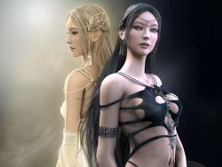Sexe : FemmeRace : Elfe
Faction : Alliance
Formation : Chasseur
Description : La jeune elfe a un physique athlétique, assez fine tout de même. Son visage est de couleur laiteuse, et dépourvu de marques communes à beaucoup d'elfes. Ses lèvres d'un rouge sanguin, dénotent avec son pâle visage. Les cheveux semblent n'avoir jamais eu de couleur, blancs comme la neige.
Elle porte toujours son arc en bandoulière et une fine lanière de cuir noir autour du cou, dans laquelle passe une pièce percée.
Ewi est suivie d'un gros félin tigré, du nom de Moka.
Son physique semble figé à présent, le temps n'ayant pas de prise. Toujours la même.. et pour longtemps.
Plus d'infos sur Ewi >>>
Lire les 3 récits de Ewi >>>
Ewin
Sexe : HommeRace : Humain
Faction : Alliance
Formation : Voleur
Plus d'infos sur Ewin >>>
Lire le récit de Ewin >>>
Faeldan
Age : 45Sexe : Homme
Race : Nain
Faction : Alliance
Formation : Guerrier
Plus d'infos sur Faeldan >>>
Filbrehim
 Age : 23
Age : 23
Sexe : Femme
Race : Tauren
Faction : Horde
Formation : Chasseur
Plus d'infos sur Filbrehim >>>
Lire les 3 récits de Filbrehim >>>
Firalia
Age : 26 ansSexe : Femme
Race : Humain
Faction : Alliance
Formation : Prêtre
Plus d'infos sur Firalia >>>
Lire les 3 récits de Firalia >>>
Folgar
Age : 30Sexe : Homme
Race : Troll
Faction : Horde
Formation : Chaman
Description : Modeste Troll des glaces venant des glaciales montagnes naines de Dun Morogh,il vécut toujours caché,au fin fond de ces montagnes,là ou seul les membres du clan des sept neiges ont accès.Il apprit là une formation de guerrier notoire,mais il ne fut point passioné par cela.Un jour,des nains découvrirent leur caverne,et le clan des sept neiges fut extérminé,malgré la guerre qui sévit pendant plus d'une année.Lui,se battait bien,mais n'était pas aussi brutal qu'un vrai guerrier.Le clan des sept neiges n'avaient aucune conaissance des arts chamaniques depuis l'assassinat de son réel chef,le chaman Tymiion Icewind.Il fut en vérité assassiné par un vicieux voleur ayant funestement pactisé avec les nains pour trouver une place glorieuse dans leurs rangs.Ce voleur là était Zar'Amont Farius,le frère même de Folgar.Zar'Amont,après avoir révélé l'emplacement de la grotte,fut tué à quelques coups de hache.Les Farius ont toujours été d'une racine très naïve,mais bon,personne n'est parfait.A sa fuite,il a été receuilli par des orcs éclaireurs dans les Wetlands,et pri un long voyage vers Durotar,là ou il vut son véritable destin apparaître.
Plus d'infos sur Folgar >>>
Lire les 2 récits de Folgar >>>
Frederik
 Age : 37
Age : 37
Sexe : Homme
Race : Humain
Faction : Alliance
Formation : Paladin
Description : Mes souvenirs ne commencent pas au jour de ma naissance mais à stormwind, je me revoie encore à l'orphelinat jouant avec mon ami Grish quelque part dans les rues sombre de stormwind, voila ou tout commença:
Je jouai à cache-cache avec grish quand soudain je bouscula un prêtre nommé arthus.
-Hola mon garçon!!!Que fais tu donc?Ce n'est pas un endroit pour les enfant ici.
-Pardon mon père mais je ne vous ai pas vue.
-Ou habite tu mon garçon?
-A l'orphelinat mon père.
Grish me rejoignit au même moment.
-Bonjour mon petit
-bonjour mon père
-Avez vous faim?
-Ho oui mon père!
Grish et moi étions affamés car l'orphelinat ne recevait pas assez d'argent pour que les enfants mangent à leurs faims.
-Voulez vous que je vous emmenes manger à la cathédrale?
nous suivîmes le prétre jusqu'a l'intérieur de la cathedrale, se massif édifice nous remplis d'admiration.
Sous les arches, des paladins récitaient des piéres et lustraient leurs armures pour se préparer a une bataille imminente. Nous tombèrent bouche-bé devant ces grands guerriers avec leurs armures brillantes et leurs épées tranchantes comme des rasoirs
-Ils vous fascinent n'est-ce pas? demanda le prétre
-Plus que tout au monde !
-Bien..... vous m'avez l'air d'étre deux coeurs pur et innocent... je vais parler à mon superieur ainsi qu'a l'orphelinat....
En attendant, mangé a votre faim, mes enfants !
Une table couverte de victuaille se dressait devant nous, et se jour, nous dégustîmes l'un des meilleurs repas de notre vie...
Quelques jours plus tard, le prétre vint a l'orphelinat, parla longement avec la directrice, et vint nous voir
-Je me suis accordé avec votre directrice, et nous sommes d'accord pour que je vous enseigne la voie de la lumiére... si vous faites serment de toujours servir le juste et de combattre le mal ainsi que d'aider les faibles et les démunis.
-Oui, Nous le souhaitons ! Répondirent en coeur Grish et moi
Quelques années plus tard, nous voila de fiére paladin, en train de parfaire notre maitrise des armes ainsi que notre foi.
C'est la que tout commence réellement... et le futur, c'est le destin qui nous le dira.
Plus d'infos sur Frederik >>>
Fulcram
Age : 176Sexe : Homme
Race : Nain
Faction : Alliance
Formation : Paladin
Plus d'infos sur Fulcram >>>
fyrndolf
Age : 100Sexe : Homme
Race : Nain
Faction : Alliance
Formation : Druide
Plus d'infos sur fyrndolf >>>
Garmoss
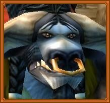Age : 40Sexe : Homme
Race : Tauren
Faction : Horde
Formation : Druide
Description : Je suis un Shu'Alo que tous connaissent sous le nom de Tauren. Je suis née au village Bloodhoof, qui se situe au sud de Thunder Bluff nôtres capitale dans les plaines de Mulgore.
Ma mère se nommée Kiria, et mon père Monga. Ils me nommèrent Garmoss en l'honneur d'un de mes ancêtres qui avait jadis combattu les centaures. J'ai grandie dans la culture Druidique de mes parents, et au cours des années, j'en suis devenue un moi même. C'est lors de ma cérémonie de passage que mes parents furent tués par les Humains de Kul'Tiras, alors que je devenais Druide les traîtres chargèrent le village de Tranchecolline et tuaient a vue tous non Humain. Mes parents périrent alors qu'ils défendaient un groupe d'enfants Orc qui fuyaient. Je pris part a la bataille pour sauver les enfants qui pure fuir vers Orgrimmar. Ce fut ma première bataille et celle que je n'oublierais jamais. Chaque jour je prie la terre mère pour quelle continue à protéger les esprits de mes parents, de mes ancêtres et guide mon chemin.
Plus d'infos sur Garmoss >>>
Lire le récit de Garmoss >>>
Gaylon
 Age : Inconnu
Age : Inconnu
Sexe : Homme
Race : Humain
Faction : Alliance
Formation : Voleur
Description : Que dire de moi ? à vrai dire je n’ai jamais été très doué pour les mots ni même pour me décrire. Les plus sages diront que c’est une forme de modestie, d’autres diront simplement une peur. Peur par le fait que lorsque les mots nous viennent à l’esprit pour nous décrire, nous humains avons très souvent tendance à nous voiler la face et à essayer de nous rendre meilleur que ce que nous sommes réellement…Alors je préfère taire certaines choses. Après tout, qui se soucie de ce que peut être telle ou telle personne ? J’ai vécu longtemps dans les profondeurs de la capitale où par nécessité de survie, le destin m’a catapulté sur une route qui ne m’étais pas forcement destinée…Ironie du sort j’ai appris à aimer cette vie, à en vivre, à en pleurer mais aussi à en rire…Bref, mon passé reste un jardin secret caché de tous, perdu au beau milieu de nul part, où le soleil ne brille plus et où le silence règne en maître…
Plus d'infos sur Gaylon >>>
Gethsemani
 Age : 22
Age : 22
Sexe : Femme
Race : Humain
Faction : Alliance
Formation : Démoniste
Description : Comme vomi des entrailles de la Terre, une horde de créatures répugnantes déversa sa pourriture sur notre paisible ville d'Andorhal. Tout d'abord, la Peste emporta les plus faibles. Puis, l'armée du Fléau se chargea de brûler nos maison et d'exterminer ceux que la maladie n'avait pas touché.
Rare furent ceux qui, comme moi, survécurent à la destruction d'Andorhal. Mais pour ces gens là, la vie ne fut jamais plus la même. Dans mon cas, j'ai vu, de mes yeux vu, ma grande soeur mourir de la peste après une agonie de 3 jours. Je l'ai vu revenir d'entre les morts, égorger ma mère et se nourrir de son cadavre. J'ai vu mon père broyé par une de leurs abominations. J'ai vu mon village en flamme dans lesquelles dansaient ces créatures cauchemardesques, fières d'avoir détruit nos vie,
Quatre ans après, il ne passe pas une nuit sans que je ne revivre ces événements en rêve.
Plus d'infos sur Gethsemani >>>
Haalbarad
Age : 26 ansSexe : Homme
Race : Humain
Faction : Alliance
Formation : Paladin
Description : (( A refaire, et oui ! Mon Background evolue en même temps que mon talent de rôle-player. Si j' ai le temps, je le referait.^^ ))
Plus d'infos sur Haalbarad >>>
Lire le récit de Haalbarad >>>
Hermiona
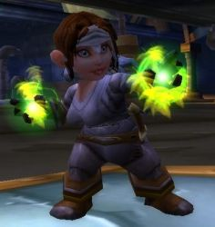Age : 26Sexe : Femme
Race : Gnome
Faction : Alliance
Formation : Guerrier
Description : Hermiona est née as Thelsamar apres la chute de Gnomeregan. Son père Zimyor etait un soldat et sa mère Nellya aide soignante ils se sont rencontrés dans un camp de refugiés Gnome aux abords du loch modan et ne se sont plus jamais quittés. Ils eurent 3 enfants, 2 filles, Hermiona et Ticia et 1 Garçon, Bilban. Hermiona est l'ainé de la famille et a montré des son plus jeune age de grandes aptitudes a l'ingenierie et comme sont père elle voulu devenir garde de Kharanos. A suivre....
Plus d'infos sur Hermiona >>>
Hertimus
Age : 31Sexe : Homme
Race : Humain
Faction : Alliance
Formation : Guerrier
Description : Ex pilote de Gyrocoptère dans l'armée du Nord, puis ancien Gladiateur de Lordaeron...
Plus d'infos sur Hertimus >>>
Héllée
Age : 19Sexe : Femme
Race : Humain
Faction : Alliance
Formation : Voleur
Description : Fine et frêle comme du cristal, blanche comme neige. Cette jeune fille albinos connait peu de la vie. Elle travaille dans un magasin de Stormwind, mais ses rêves étranges pourraient lui donner un autre destin...
Plus d'infos sur Héllée >>>
hérastean kalang
Age : inconnuSexe : Homme
Race : Humain
Faction : Alliance
Formation : Paladin
Plus d'infos sur hérastean kalang >>>
Hina
Age : 21Sexe : Femme
Race : Gnome
Faction : Alliance
Formation : Voleur
Plus d'infos sur Hina >>>
Hiranthus
Age : 61Sexe : Homme
Race : Humain
Faction : Alliance
Formation : Paladin
Plus d'infos sur Hiranthus >>>
Honn
Age : à peine 65 ans.Sexe : Homme
Race : Elfe
Faction : Alliance
Formation : Prêtre
Description : Honn Dar Nadris est un elfe comme les autres avec un caractère sérieux et plutôt modeste,il a hérité de la solitude et la mystériosité de la famille Dar Nadris.Il est né dans Reflet-De-Lune,son père était druide,Noã Dar Nadris,et sa mère une séduisante chasseresse éxperimentée et belle,Ha-Nihila Dar Nadris.
Plus d'infos sur Honn >>>
Lire le récit de Honn >>>
Houya
Age : inconnuSexe : Homme
Race : Orc
Faction : Horde
Formation : Chasseur
Description : c'est un chasseur qui n'a aucun souvenir... il a juste un animal de companie , buzz , un genre de serpent ailé ... il n'a pas de famille, n'arrive a se lier avec personne .... et parcours le monde , explore , essayer de retrouver des fragment de memoire.
la deuxieme chose qu'il possede est un medaillon. il espere qu'il est a quelqu'un de proche qui lui aurait donné. Mais ce médaillon est articulier. c'st un crystal qui vibre de temps en temps, et il le voit aussi en reve ... ca se passe dans des montagnes ... on ne sait pas trop ou ... mais ca l'obsede, il est attiré par ce crystal !
Pour arriver a le trouver, il s'entraine assiduement, il dresse son buz aussi pour arriver a fare face aux dangers des montagnes.
C'est juste un chasseur perdu en quete de sa famille ...
Plus d'infos sur Houya >>>
Ildarion
Age : 22Sexe : Homme
Race : Humain
Faction : Alliance
Formation : Guerrier
Plus d'infos sur Ildarion >>>
Imperion
Age : ???Sexe : Homme
Race : Elfe
Faction : Alliance
Formation : Guerrier
Description : Né d'une mère membre de la Famille Noble des Thunderfury et d'un père inconnu, Imperion fut éduqué à la manière des preux féliniers des Elfes de la Nuit.
Sa famille, régente de la ville de Rut Golein en Azshara, périt lors de l'assaut des Nagas sur la côte, emportant avec eux toute population de sa ville.
Recueilli à son adolescence par le corps d'armée prestigieux des Féliniers des Griffes de Nuit, il semble avoir effectué de nombreuses batailles aux cotés du Général Imrik Stormrage, cousin de Malfurion.
Nul ne sait d'où vient son extraordinaire affinité avec la foudre mais sa rage est en propention à celle ci et dut être canalisée pendant longtemps par le Prince Imrik avant qu'il ne l'adoube Exalté d'Elune, les sanguinnaires guerriers elfiques à la colère farouche et destructrice..
La marque qu'il porte en sa nuque est un glyphe ancien, semblant une rune antique dans le Drakhan, le langage des Grands Aspects.
Nul n'entendit parler de lui depuis la "boucherie" d'Hyjal mais une jeune Elfe qu'il sauva durant la Bataille affirme avoir vu Imperion en Lakeshire un soir à la taverne.
Chose singulière pour un Elfe éduqué à être la Rage d'Elune au service des intelligents priants et druides elfiques, il a une sympathie pour la culture, les arts naturels et l'histoire de la civilisation elfique.
Mais quelques commères affirment l'avoir vu littéralement devorer son adversaire après sa victoire ou émettent de vifs doutes sur les ongles anormalement longs et durs qui trônent sur ses doigts, comme sa dentition effilée ou ses pores de peau triangulaires, scintillant parfois à la clareté d'Elune
Plus d'infos sur Imperion >>>
Lire les 3 récits de Imperion >>>
Itachi
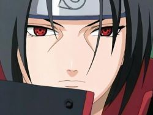Age : 17Sexe : Homme
Race : Humain
Faction : Alliance
Formation : Voleur
Description : Itachi Uchiwa :
A 12 ans, Itachi appartenais a un clan de ninja, les Anbu, où il était le chef.
Il massacas sa famille devans les yeux de son petit frére, a cause d'un défis lancer par son clan... Mais il laisser la vie a son petit frére pour qu'il puisse ce venger un jours .
Mais la soif de vengeance de son frére ne l'inquiéte pas car maintenant Itachi est un grand ninja.
Il fait partie d’une organisation secrète de Ninja surpuissant. Orochimaru, qui en faisait parti, le quitta car il ne supportait pas de voir quelqu’un de plus fort que lui … Itachi.
Itachi est l'un des Ninja les plus puissant et est crain par un grand nombre de personnes ...
Plus d'infos sur Itachi >>>
Itoe
 Age : 20
Age : 20
Sexe : Femme
Race : Humain
Faction : Alliance
Formation : Mage
Description : A la base une serveuse de l'auberge de la Fierté du Lion, la jeune magicienne a finalement repris l'étude de la magie afin de pouvoir protéger les siens.
Elle a un Elfe de la Nuit prêtre pour Shan'do, en qui elle a toute confiance... Mais pour l'instant, elle ne peut lui être d'une grande utilité, car mis à part sa motivation, peu de choses sont fortes chez elle pour le moment.
Itoe est donc une toute nouvelle combattante, et son histoire ne cherche qu'à se faire...
Plus d'infos sur Itoe >>>
Lire le récit de Itoe >>>
Jalle
 Age : inconnu
Age : inconnu
Sexe : Femme
Race : Humain
Faction : Alliance
Formation : Mage
Description : Pas très sage, notre Jalle. Mise à la porte de l'Académie de magie de Stormwind pour cause d"initiatives téméraires", Jalle s'est recyclée dans une autre branche qui lui va comme un gant : journaliste pour "L'Oeil de Kilrogg". Sa curiosité naturelle aidant...
Ses origines lui sont inconnues, d'ailleurs elle évite le plus souvent de parler d'elle-même. Elle souffre de narcolepsie, ce qui ne manque pas de pimenter son existence.
Plus d'infos sur Jalle >>>
Lire le récit de Jalle >>>
Jarel
 Age : 21
Age : 21
Sexe : Homme
Race : Humain
Faction : Alliance
Formation : Guerrier
Description : Jarel est né dans la cité de Stromgarde a l'époque ou elle tenait encore debout ... Sa mère est morte durant l'accouchement et son père avait déjà disparu depuis quelques temps,il fut alors élevé par son oncle,Danath Trollbane,qui,durant son temps libre l'initia a la maitrise des armes et aussi de la parole,mais hélas les hasards de la guerre firent que Jarel partit pour le sud,a Hurlevent et que Danath,plus tard,chosit de partir pour Draenor.
Quelques années après son arrivée a Hurlevent,Jarel décida qu'il devait devenir célèbre pour ses actes,il choisit alors,de s'engager dans la contreversée Garde Noire,qui luttait au Nord contre des attaques de réprouvés,puis plus tard,contre une épidémie de vampirisme dans Hurlevent ...
Plus d'infos sur Jarel >>>
Lire le récit de Jarel >>>
Jarhod
Age : 37Sexe : Homme
Race : Humain
Faction : Alliance
Formation : Démoniste
Plus d'infos sur Jarhod >>>
Lire les 4 récits de Jarhod >>>
Jeronimoo
 Age : 60
Age : 60
Sexe : Homme
Race : Tauren
Faction : Horde
Formation : Druide
Description : A lire dans ses récits
Plus d'infos sur Jeronimoo >>>
Lire les 3 récits de Jeronimoo >>>
Jilyana
Sexe : FemmeRace : Elfe
Faction : Alliance
Formation : Voleur
Description : (plus tard, en cours d'écriture)
Plus d'infos sur Jilyana >>>
Lire le récit de Jilyana >>>
Jüne
Age : 18Sexe : Femme
Race : Humain
Faction : Alliance
Formation : Guerrier
Description :
"Debout faignasse !"
*Jüne failli tomber du tonneau sur lequel elle s'était assoupie*
"Oh ! Morty comme c'est agréable de se faire reveiller par ta douce voix !" -Bien evidemment Morty avait la voix d'un quadragénaire ayant eu des années d'excès de tabac et autres alcools.-
"Tais-toi bougresse ! Tu étais encore en train d'pioncer ! Si tu crois que l'amiral a que ça à faire d'entretenir ta pauvre carcasse, tu te plantes ma jolie !"
*Jüne arborait maintenant un visage plus crispé, elle savait très bien ce qu'elle devait à l'amiral et n'avait aucune envie de le déçevoir*
"Non mais... mais Morty je .. je dormais pas .. je .. j'était en train de .. enfin.."
"Oui, c'est celà ! Tu m'prend pour un marin d'eau douce ? Je sais très bien que tu pionçais ! Allez active toi, le Baron a demandé a te voir, j'espère bien qu'il te fera passer le goût des siestes..."
*Jüne savait très bien que le vieux Morty ne pensait pas un mot de ce qu'il disait, il se forçait toujours d'être dur avec elle, mais au fond il était vraiment attaché à elle*
*June se mit en chemin et commenca a se poser des questions*
Plus d'infos sur Jüne >>>
Kaeldras
 Sexe : Homme
Sexe : Homme
Race : Elfe
Faction : Alliance
Formation : Voleur
Description : -=Kaeldras est un Elfe de Sang=-
(pas de possibilité de choisir la race Elfe de sang encore sur le site)
Kaeldras est un techno-elfe et ancien membre du commando Royal de Lune d’Argent. Suite à une mission ratée, les survivants blessés fûrent envoyés dans un laboratoire secret dans les sous-sol de la cité de Quel’Thalas afin de les sauver. Un projet longtemps étudié par les mages et ingénieurs elfes de sang a donc été appliqué. Les organes et membres du corps trop fragiles et blessés fûrent remplacés par de la technologie de pointe elfe, mélangé à de la puissance arcanique des mage afin d’alimenter en énergie ces parties mécaniques. Ces elfes devinrent mi-machine, mi-elfe. Ce sont ceux que l’on nomme les techno-elfes. Ils ont cependant un grand besoin en cristaux de mana pour alimenter leurs organes artificiels et leurs capacités. Ce sont d’excellents assassins, doués d’un camouflage hors du commun et d’une précision accrue. Des soldats d’élite donc.
Plus d'infos sur Kaeldras >>>
Lire les 3 récits de Kaeldras >>>
Kagrénac
 Age : 37
Age : 37
Sexe : Homme
Race : Nain
Faction : Alliance
Formation : Paladin
Description : Kagrénac Bagarn, né orphelin a l'aube de la deuxième guerre, a été recueilli par le Temple d'ironforge et baigné de la sainte lumière dès son plus jeune âge, sous l'assistance de son tuteur prêtre Yagrum. Cependant, la forte présence de sang de Dark Iron dans ses veines, remarquée par son teint cireux et sa barbe flamboyante, semblant indiquer son statut de métis, l'empêcha de se hisser à de hautes fonctions dans le clergé des prêtres, et il dut canaliser sa rage dans les rangs des paladins de la vindicte d'Ironforge, où il brilla particulièrement par son dévouement et son zèle frisant parfois l'excès, qu'on mit sur le compte de ses origines et de son sang de Blackrock.
Après quelques errances sans intêret, comme tout aventurier en formation, de par les pics enneigés de Dun Morogh, il commença à douter des méthodes et des compromis de l'Eglise officielle qu'il estima par trop tolérantes, par exemple envers le Fléau de Lordaeron, ou encore envers la pratique de la magie démonique.
Son entrée peu après dans la Sainte Inquisition lui permit de trouver une cause tout à fait adaptée à ses idées. Son zèle dans la poursuite des hérétiques en firent un membre plutôt apprécié. A chaque action de l'ordre inquisitorial, il fut en première ligne, convaincu de la justice de ces actions, sombrant dans le fanatisme et l'intégrisme et toujours convaincu de la nécessité de leur présence pour la sauvegarde de la lumière.
Ainsi, ce fut pour lui un choc terrible lorsque les populations d'Elwynn se soulevèrent contre l'Inquisiton lors de l'émeute à la Garnison de Westbrook, et lui même ne dut son salut ce jour là qu'a une intervention extérieure. Suite à cette dissolution de l'Inquisition, quelques membres restants dont lui se joignirent au culte apocryphe du demi dieu Tyran dans l'Ordo Imperium, organisation encore plus radicale que l'Inquisition, quasi totalitaire, mais qui n'eut pas une durée de vie extrêmement longue, marquée par de nombreux départs.
A ce jour, alors que Kagrénac est à la tête de l'ordre agonisant, il cherche un ordre nouveau et dynamique, et correspondant plus ou moins à ses idéaux.
Plus d'infos sur Kagrénac >>>
Kalyss
Age : 22Sexe : Femme
Race : Elfe
Faction : Alliance
Formation : Chasseur
Plus d'infos sur Kalyss >>>
KameChan
 Age : 22
Age : 22
Sexe : Homme
Race : Tauren
Faction : Horde
Formation : Chaman
Description : Kamechan est né dans la capitale de sa propre "race Tauren".
Très vite le village entier se rendu compte qu'il avait certaines difficulté à déplacer sa masse sur de longue distance. Après un bref apprentissage, il appris à courir de façons plus légères après avoir appris à entrer en symbiose avec sa magie afin de pouvoir prendre l'apparence d'un loup fantôme.
Son nom KameChan qui signifie Tortue "Kame" Monsieur "Chan" n'est désormais plus qu'un lointain souvenir pour ce jeune chaman.

Plus d'infos sur KameChan >>>
Lire les 2 récits de KameChan >>>
Kanjin
Age : 25Sexe : Homme
Race : Troll
Faction : Horde
Formation : Chasseur
Plus d'infos sur Kanjin >>>
Karak Dorn
Age : 320 ansSexe : Homme
Race : Nain
Faction : Alliance
Formation : Chasseur
Plus d'infos sur Karak Dorn >>>
Karoline
Sexe : FemmeRace : Elfe
Faction : Alliance
Formation : Druide
Description : La jeune elfe regardait la biche jouer dans la clairière. C'était une belle journée de printemps, lentement le soleil déclinait et le paysage baignait dans douce clarté orange.
Courant dans l'herbe une énorme araignée des bois s'approchait sans bruits, invisible au regard de l'enfant et du frêle animal.
Karoline sourit, son apprentissage en tant que future druidesse allait débuter, bientot elle saurait comment défendre la nature autour d'elle et se changer dans les plus terribles des formes animales.
La biche hurla un instant lorsque les huits pattes lui tombérent dessus faisant émettre un craquement siniste à sa colonne vertébrale.
Karoline retint sa respiration et serra dans son petit poing la bâton qu'elle avait ramassé dans la journée. Elle se recroquevilla, espérant que le festin suffirait à l'araignée.
Tout alentour était calme, le vent faisait doucement bouger les branches où de rares oiseaux poussaient quelques piallements de temps en temps.
Les chelicères fouillaient dans le chair tandis que la lumière jouait sur chacun des huit yeux. Où regardait elle? avait elle perçue la jeune elfe tremblante cachée dans les herbes non loin de là?
Karoline retint ses larmes, il ne fallait pas que la bête la voit. Après quelques minutes de son festin, l'araignée quitta les lieux, disparaisant entre les arbes.
Le silecne c'était fait. Karoline attendit quelques minutes avant de s'approche doucement du corps de la biche. Elle fit chaque pas avec la plus extrême attention, guettant le signe d'un éventuel retour.
La biche gisait morte, le flanc droit déchiquter offrant à la vue de tous ses intestins à moitié arraché. Quel triste spectacle pour une furure druidesse. Accroupit elle inspecta la plaie et remarqua que de minuscules araignées couraient à l'intérieur.
Elle se releva stupéfaite pour chuter presque aussi vite sous le corps de l'araignée qui s'était élévé dans les arbres pour en descendre et s'abattre sur la druidesse.
Elle hurla, sentant les huit pattes, l'enserrer. La morsure fut pire et là commença le rêve, un songe étrange.
Un cocon autour d'elle et une voix dans sa tête, lui resassant les projets de l'esprit Araignée, la Tisseuse. Le délire dura des jours, alternant entre douleur et extase qu'un enfant n'est pas sensé connaitre.
Un matin, chancelante, Karoline revint au village, rassurant ses parents et ses instructeurs. Elle sourit, découvrant ses crocs.
En cette enfant la vie avait changé, seule vivait son désir de servir la Tisseuse...
Les années ont passé, Karoline est désormais adulte et maintenant, arpente le monde pour élargir l'influence de son insatiable maitresse, la Tisseuse...
Plus d'infos sur Karoline >>>
Lire le récit de Karoline >>>
Kathan
Age : ??Sexe : Homme
Race : Elfe
Faction : Alliance
Formation : Paladin
Plus d'infos sur Kathan >>>
Kelane
Age : 27Sexe : Homme
Race : Humain
Faction : Alliance
Formation : Guerrier
Description : Arrivé en Azeroth avec ses compagnons à cause d'un artéfact très puissant, il tenta de regagner son monde d'origine mais sans succès.
A présent seul, il est contraint de s'habituer petit à petit à sa nouvelle terre d'accueil...
Plus d'infos sur Kelane >>>
Lire les 5 récits de Kelane >>>
Keshindrae
Sexe : FemmeRace : Elfe
Faction : Alliance
Formation : Druide
Plus d'infos sur Keshindrae >>>
Lire les 4 récits de Keshindrae >>>
Ké
Age : 109Sexe : Homme
Race : Elfe
Faction : Alliance
Formation : Voleur
Plus d'infos sur Ké >>>
Lire le récit de Ké >>>
Kinshara
 Age : 25
Age : 25
Sexe : Femme
Race : Humain
Faction : Alliance
Formation : Paladin
Plus d'infos sur Kinshara >>>
Kitaria Waylan
Age : 24Sexe : Femme
Race : Humain
Faction : Alliance
Formation : Paladin
Plus d'infos sur Kitaria Waylan >>>
Kith
Age : 20 ans en age humainSexe : Homme
Race : Elfe
Faction : Alliance
Formation : Guerrier
Plus d'infos sur Kith >>>
Kléophis
 Age : 18
Age : 18
Sexe : Femme
Race : Troll
Faction : Horde
Formation : Chaman
Description : Kléophis a quitté Durotar pour défendre les terres de Kalimdor contre la menace des Réprouvés et pour freiner les ardeurs de l'Alliance.
Plus d'infos sur Kléophis >>>
Lire les 7 récits de Kléophis >>>
KorboutXIII
Sexe : HommeRace : Humain
Faction : Alliance
Formation : Guerrier
Plus d'infos sur KorboutXIII >>>
Koyaniskatsi
Age : Assez vieuxSexe : Homme
Race : Troll
Faction : Horde
Formation : Chaman
Description : Dans les plaines de Tirisfal, une présence incongrue...
L' herbe pourissante...
...foulée par un pied bestial.
Le vent de la fin balaye la plaine...
...humé par une créature qui ne devrait pas se trouver là.
Le morne disque d' un soleil mort...
...éclaire un visage au faciès monstrueux...
Un troll.
Le troll, les mains derriere le dos, dans une attitude parfaitment humaine, inspecte d' un oeil inexpressif les cadavres jonchant la plaine...
La puissance des hommes.
Le troll erre sans émotions visibles au milieu du champs de bataille abandonné...
Puis, il s' arrête. Le vent de la peste fait voleter par bourrasques sa robe de Chaman. Il attend un moment devant un des cadavres.
Il le regarde attentivement.
Il approche son visage repoussant de celui, pâle et sans vie du soldat.
Chevalier Heinrich Von Ritchcoff, décoré post-mortem par l' aube d' argent. Héros de la bataille de Noireplaine.
" Ton héroïsme restera à jamais gravée dans nos mémoires. Toi, Heinrich Von Ritchcoff, martyre de Noireplaine, terrasseur de seigneur des cryptes Ram' Abyssh' Al et Magistrat de Brill. "
L' armure du soldat est éteinte... la lumière l' a quitté entièrement... Le troll regarde sans comprendre vraiment, les multiples ornements de l' armure souillée par deux sangs.
Celui de l' homme, et celui de la créature en haut de la colline en bas de laquelle gît le soldat...
La forme monstrueuse du seigneur des Cryptes, mort. Des lances sont plantées sur sa carapace. La masse de la chose est affalée sur le sommet du petit monticule de cadavres.
La montagne du combat cache le morne soleil. Et le troll commence à la gravir avec une agilitée exceptionnelle.
Une fois arrivé en haut, le troll se retrouve fâce à fâce avec le démon terrassé. Plongeant son regard dans celui de la créature, le troll reste assis pendant des heures...
___________________________________________________
Rapport de l' équipe de secours aux éclaireurs chargés de bruler les corps de la bataille de Noireplaine.
Maréchal, nous sommes arrivés aujourd' hui à 17h sur le champ de bataille de Noireplaine.
Nous avons tout d' abord remarqué la présence des cedavres. Les eclaireurs n' avait donc pas put faire leur travail pour une raison que nous découvrîmes plus tard. Les corps des éclaireurs ont été retrouvés au pied du monticule soutenant les restes du seigneur des cryptes. Massacrés "moyennement " d' une main que mon experience qualifierait de " sauvage, mais cependant sans excés ". Je ne sais pas si vous avez comprit le facultatif, Maréchal, mais de toutes façons, vous savez le principal : Les eclaireurs sont morts. Et le travail n' a pas été fait. Ni par eux, ni par nous. Nous rentrons à Brill. Et j' aurais deux mots à vous dire sur votre façons d'organiser, qui nous à ammené, moi et mes hommes, à faire cette mission aussi dangereuse qu'i nutile.
Et cela même si vous êtes mon supérieur militaire.
Duthorian Rall, Chevalier-sergent de l' armée de Stormwind.
________________________________________________
Au loin, le troll voit un nouveau groupe d' hommes...
Peut-être viennent' ils pour retrouver leurs frères qu' il vient de tuer.
Koyanisktsi ne voulait pas être dérangé.
Maintenant, il ne le sera plus... le troll repart vers le rivage. Il n' a pas à s' occuper des nouveaux arrivants.
Il a passé le temps qu' il devait passer ici....
Il a vu ce qu' il devait voir...
Il a senti ce qu' il devait sentir...
Il a touché ce qu' il devait toucher...
Il a entendu ce qu' il devait entendre...
Il a gouté ce qu' il devait gouter...
Il a parlé avec qui il devait parler...
Il a laissé ce qu' il devait laisser et emporté ce qu' il devait emporter...
Avec la promesse qu' il reviendra...
Pour accomplir ce qu' il davait accomplir las-bas...
Plus d'infos sur Koyaniskatsi >>>
Kulgaan
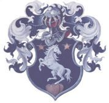Age : 29Sexe : Homme
Race : Humain
Faction : Alliance
Formation : Paladin
Description : Cheveux noirs en queue de cheval , yeux marrons , toujours bien rasé propre et polis il donne le profil d'un noble royaliste , mais en est tous le contraire , parfait reître , natif d'Arathi , il fume sa pipe a chaque pause et bois a en vomir de la biere.
Plus d'infos sur Kulgaan >>>
Lire les 12 récits de Kulgaan >>>
Kyllen
Age : 22 ansSexe : Femme
Race : Humain
Faction : Alliance
Formation : Guerrier
Description : Jeune femme fière et simple, cette guerrière sensuelle, s'ignore et ne cherche à plaire qu'à un seul homme.
Son accent des rues la complexe mais elle le corrige doucement, entre deux aventures, apprenant à lire pour rendre toute la poèsie que son tendre sait lui offrir.
Ses yeux clairs traduisent sa franchise et un sourire flotte souvent sur ses lèvres, avec une certaine innocence.
Plus d'infos sur Kyllen >>>
Lire les 4 récits de Kyllen >>>
Lalita
 Age : 15 ans
Age : 15 ans
Sexe : Femme
Race : Humain
Faction : Alliance
Formation : Guerrier
Plus d'infos sur Lalita >>>
Lire les 2 récits de Lalita >>>
Lebennin
Age : 45Sexe : Homme
Race : Humain
Faction : Alliance
Formation : Paladin
Plus d'infos sur Lebennin >>>
Legba
Age : 38Sexe : Homme
Race : Humain
Faction : Alliance
Formation : Voleur
Plus d'infos sur Legba >>>
lelethina
Age : 16Sexe : Femme
Race : Elfe
Faction : Alliance
Formation : Chaman
Description : lelethina est née a darnnasus elle est fille unique est a vecu toute son enfance a l'orphelina masi depuis quelle a pris osn t independence elle vie au jour le jour elle c'est trouvé un ptit job de couturier elle ne se laisse pas faire et aime se battre
Plus d'infos sur lelethina >>>
Lethiel
 Age : 2500
Age : 2500
Sexe : Homme
Race : Elfe
Faction : Alliance
Formation : Chasseur
Description : Ayant perdu un être cher durant la guerre contre la Légion Ardente, Lethiel s'est replié sur lui même et s'est mis à rechercher sans arrêt la soltitude.
Lorsqu'il rencontre Fenrir, son loup, c'est le début d'une longue et profonde amitié qui allégera grandement son fardeau...
Plus d'infos sur Lethiel >>>
Lire les 28 récits de Lethiel >>>
Lín
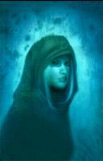Age : 20 ans.Sexe : Femme
Race : Humain
Faction : Alliance
Formation : Prêtre
Plus d'infos sur Lín >>>
Loam
Sexe : HommeRace : Orc
Faction : Horde
Formation : Chaman
Plus d'infos sur Loam >>>
Lire les 27 récits de Loam >>>
Loraya
Age : inconnuSexe : Femme
Race : Mort-vivant
Faction : Horde
Formation : Chasseur
Plus d'infos sur Loraya >>>
LudikMaster
Age : 121Sexe : Homme
Race : Nain
Faction : Alliance
Formation : Paladin
Description : Je m'appelle LudikMajor, fils de LudikMaster et de Dame Genoha. Héritier de LudikMajor Inc. je fournis aujourd'hui Ironforge et les forces de l'alliance en munitions en thorium afin de stopper la progression de la Horde que ma famille combat depuis 3 générations. Un jour peut être vous narrerais-je ma chanson.
Plus d'infos sur LudikMaster >>>
Malecius
Age : InconnuSexe : Homme
Race : Humain
Faction : Alliance
Formation : Prêtre
Description : Mystère...
Plus d'infos sur Malecius >>>
Lire le récit de Malecius >>>
manuka
Age : 35Sexe : Homme
Race : Humain
Faction : Alliance
Formation : Démoniste
Plus d'infos sur manuka >>>
Marle
 Age : 26
Age : 26
Sexe : Femme
Race : Humain
Faction : Alliance
Formation : Guerrier
Description : Bonjour, mon nom est Marle et je suis une guerrière encore en cours d'apprendtissage mais je suis de nature persévérante et j'aime beaucoup ma vie malgrès des débuts assez difficiles. En effet, j'ai été abandonnés par mes parents peu après ma naissance et j'ai été trouvée par un couple d'Elfs de la Nuit du Nom de Rikkyu et Taichin. Ils m'ont élevée comme leur propre fille et m'ont appris la valeur de la vie. Je les considère d'ailleurs comme mes parents. Je ne me considère d'ailleur pas comme une humaine mais comme une Elfe de coeur, comme le dit si bien mon père.
Je parcours actuellement les terres d'Azeroth avec mon amie Paige afin de parfaire mon apprentissage et atteindre la force et la connaissance ultime du guerrier (le 60e Cercle). J'en profite pour aider qui en a besoin et utiliser toutes mes compétences à protéger l'Alliance de ces mécréants de la Horde.
Je ne souhaite actuellement pas intégrer une guilde car je suis pleinement satisfaite de ma vie sociale telle qu'elle est aujourd'hui. Etre aux cotés de mes parents et de mon amie.
Plus d'infos sur Marle >>>
Mataëlle
Age : 32Sexe : Femme
Race : Humain
Faction : Alliance
Formation : Voleur
Plus d'infos sur Mataëlle >>>
Mawina
Age : 18Sexe : Femme
Race : Humain
Faction : Alliance
Formation : Mage
Plus d'infos sur Mawina >>>
max_la_menace
Age : 12Sexe : Homme
Race : Humain
Faction : Alliance
Formation : Paladin
Plus d'infos sur max_la_menace >>>
Mägràhge
Age : 35Sexe : Femme
Race : Tauren
Faction : Horde
Formation : Druide
Plus d'infos sur Mägràhge >>>
Meïlynn
Age : 23Sexe : Femme
Race : Humain
Faction : Alliance
Formation : Mage
Description : Peu de personnes connaissent l'histoire de Meïlynn. Secrète et souvent enclin à éluder des questions trop précises, il lui est arrivé cependant de livrer quelques unes des bribes de sa vie mais jamais sans avoir préalablement longuement étudié ses interlocuteurs.
Stormwind fut un lieu important de ses actes passés. Souvent controversée par ses prises de position déstabilisantes pour beaucoup, on se souviendra de quelques unes de ses participations dont la ville se fait l'écho certainement encore.
Encore étudiante de l'école des Mages du Royaume, elle prit une part importante avec celle qui devint son amie, Almalia, à une histoire occulte concernant la naissance d'une enfant relativement mystérieuse de part son originalité. Chose faite, Meïlynn disparut de ce cercle de personnes mélées à cette fascinante histoire où elle prit part sans pour autant en accepter jamais une place d'actrice, préférant de loin vivre les évènements en témoin pour mieux les relater dans ses contes et histoires qu'elle sème lors de ses haltes dans quelques tavernes ou auberges des Terres d'Azeroth ou de Kalimdor.
D'autres se souviendront de sa prise de risque incompréhensible lors du jugement du chef de file d'un mouvement fanatique religieux qu'elle défendit avec brio, selon la population, et une fois encore, disparut quand son rôle toucha à sa fin.
Une chose pourtant semble la caractériser très souvent par ceux qui l'auront approcher, outre sa farouche détermination, c'est cette façon singulière de ne jamais parler d'elle même tout en véhiculant des idées souvent suggérées avec tact ou véhémence d'une concorde pleine et entière entre les êtres intelligents par delà les frontières ou les races.
Conteuse, narratrice à ses heures, érudit et n'ayant que peu de considération pour la bétise qu'elle blamera sans ménagement à l'occasion, elle semble poursuivre une route qu'elle parait avoir déjà tracé avec une rigueur et un calcul presque froid, sans paraitre jamais s'en détourner malgrès des chemins quelques fois sinieux qu'elle pourrait emprunter, se méfiant toujours de ne point s'y perdre.
Il n'est rien à attendre d'une simple rencontre avec une personne si secrète sauf quelques banalités qu'elle saura échanger, mais si le temps et l'envie d'échanger est présent, alors peut être y aurait il plus à recevoir.
"Il ne peut exister un monde aussi beau, raffiné et diversifié pour que les êtres intelligents qui le peuplent n'aient de but que de le souiller jusqu'à sa perte. Si nous étions les géniteurs de mondes à venir ou les enfants de mondes passés pourrions nous être fiers et satisfaits du leg que nous nous préparons à faire ? La responsabilité rend libre de tout, si toutefois on l'accepte." pourrait elle vous dire un jour.
Plus d'infos sur Meïlynn >>>
Melhek
Age : jeuneSexe : Homme
Race : Tauren
Faction : Horde
Formation : Druide
Plus d'infos sur Melhek >>>
Melyssa
Age : 28Sexe : Femme
Race : Humain
Faction : Alliance
Formation : Prêtre
Plus d'infos sur Melyssa >>>
Milady
Age : 20 ansSexe : Femme
Race : Humain
Faction : Alliance
Formation : Démoniste
Description : Je suis née en l'an 608, durant la décade du singe, a Stormwind. Mes parents étaient de riches aristocrates du royaume et possédaient plusieurs terre dans le royaume. Je grandis donc dans une famille aimante, avec 2 freres plus vieux que moi et 1 soeur plus jeune. En l'an 620, a l'age de 12 ans, je rentrais a l'académie de magie de Stormwind alors que mon père, bien vu en a la cour du Roi, fut nommé Ambassadeur personnel du Roi aupres du souverain de l'Alliance, le roi Terenas de Lordaeron. Ma mere partit avec lui, ainsi que mes deux freres qui, ayant étudié les voies de la lumiere, allaint compléter leur formation en Lordaeron, et ma jeune soeur. Toute ma famille se trouvait a Lordaeron lors de l'offensive du fléau. Ils furent tous tuer, jusqu'au dernier par les légions de non-morts du Roi Liche.
Lorsque la nouvelle me parvint, j'étais alors agé de 16 ans, je fondit en larmes et je m'enfuis de l'académie, accablée par mon chagrin et erra dans la ville, totalement abbatue. je ne sais combien de temps cela dura, je me rappelles juste m'etre un jour réveillé dans un lit tandis qu'un homme agé me veillait. C'était un puissant démoniste, qui, en me voyant seul dans la rue et détectant en moi un puissant potentiel, me prit sous son aile. Il m'enseigna tout ce qu'il savait sur les démons, leur magie interdite, leurs plus noirs secrets. Puis, apres 4 ans d'un enseignement desp lus approfondie, mon tuteur mourut de vieillesse. Il m'avait donner les armes qui me permettrait de me venger un jours des morts-vivants. Et je le ferais...oui je tuerais de mes mains le plus de non-morts possible....ils paieront.
Plus d'infos sur Milady >>>
Mildred
 Age : 21
Age : 21
Sexe : Femme
Race : Humain
Faction : Alliance
Formation : Prêtre
Plus d'infos sur Mildred >>>
Mirin
Age : 112 ansSexe : Homme
Race : Nain
Faction : Alliance
Formation : Prêtre
Plus d'infos sur Mirin >>>
Mishun
Age : IndéterminéSexe : Femme
Race : Humain
Faction : Alliance
Formation : Démoniste
Plus d'infos sur Mishun >>>
Lire les 4 récits de Mishun >>>
Miyawna
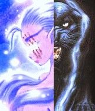Sexe : FemmeRace : Elfe
Faction : Alliance
Formation : Druide
Description : Une jeune elfe qui a longtemps été perdue en ville mais qui semble maintenant y avoir trouvé ses marques.
Elle est douce, sensible, souvent craintive bien que courageuse, et surtout très rarement seule, ses amis la couvent comme un trésor précieux, difficile de s'en prendre à elle.
Plus d'infos sur Miyawna >>>
Lire les 10 récits de Miyawna >>>
Mizrah
Age : 40Sexe : Femme
Race : Nain
Faction : Alliance
Formation : Prêtre
Description : Mizrah est une naine assez peu au fait des coutumes autres que les siennes, elle garde un fort accent nain en toute circonstance. Cela dit, elle est assez perspicace et aprend vite. Elle aime par dessus tout lire.
Plus d'infos sur Mizrah >>>
Mizumi
 Age : 22 ans
Age : 22 ans
Sexe : Femme
Race : Elfe
Faction : Alliance
Formation : Voleur
Plus d'infos sur Mizumi >>>
Lire le récit de Mizumi >>>
Moojcha
Age : environ 20 ansSexe : Homme
Race : Tauren
Faction : Horde
Formation : Chaman
Description : Moojcha l'apprenti chaman
(background à compléter)
Plus d'infos sur Moojcha >>>
Naelcya
 Age : 21 ans
Age : 21 ans
Sexe : Femme
Race : Humain
Faction : Alliance
Formation : Paladin
Description : Il y a de celà 21 années, un cri percutant s'éleva d'une maison de Stormwind , une naissance attendue , la fille d'un paladin et d'une fermière.
Les années passèrent et la jeune fille grandissait, sa blonde chevelure ressemblait fortement à celle de son père Anerhos, et le regard turquoise était identique à celui de sa mèe Revera. Petite fille, elle voulait devenir protectrice de la Lumière, combattante des ténèbres, et son rêve se réalisa. L'apprentissage était rude et difficile mais rien ne pouvait se mettre en travers de son chemin... Enfin..
Quand elle eut 16 ans, son Maître Paladin et bien d'autres, accompagnés de jeunes disciples, décidèrent de partir pour le Berceau de l'Hiver. Là-bas ils auraient pu apprendre l'art de la discrétion et de la guerre. Mais cet art est arrivé bien trop vite. Au milieu de la nuit, les Maîtres paladins réveillèrent rapidement les jeunes disciples présents. Les cris bestiaux suffisaient à les faire trembler. Une lame passa au dessus du visage de la jeune paladine qui pris en main le pommeau de sa piètre épée à deux mains. Elle recula alors que sous ses yeux tombait son premier ami, un disciple bien plus fort qu'elle. Apeurée, elle entendait les hurlements et les ordres des Maîtres Paladins.. Et ce fut le noir complet.
La paladine s'éveilla en sueur et une douleur atroce se répendit le long de sa tempe. Elle ouvrit les yeux mais rien.. Elle ne voyait rien... Elle ne ressentait que cette douleur latente qui lui rapella soudain qu'elle était encore en vie. Une main fraiche se posa sur son front afin de la faire se ralonger au plus vite.
"- Dame Winterdom, vous devriez vous reposer..."
Cette voix, elle l'avait déjà entendu, ces mots, elle les connaissait et ressombra dans l'inconscience.
Quand, enfin, elle pu avoir un réveil plus serein, elle essaya de regarder autour d'elle, mais la seule chose qu'elle entrevoyait était des silhouettes indistinctes dans des ténèbres de plus en plus prenants, elle lâcha une plainte.
" - Dame..
- Que m'est-il..arrivé.. Où sont les autres.. pourquoi je ne vois rien... que m'avez vous fait..."
Totalement perdue, elle posa une main sur son visage, pour sentir le bandage qui était aposé sur ses yeux, un cri sourd s'échappa de sa gorge, elle aurait voulu pleurer.
" - Calmez vous.. Dame Winterdom.. Vous êtes ici depuis presque trois mois.. Nous avons fait en sorte que vous puissiez dormir sans rêve.. Vos muscles sont atrophiés pour le moment, ne faites aucun mouvement... Vous.. Les Maîtres paladins, les disciples et vous, êtes faits attaqué par des..Orcs.. Vous avez perdu la vue Dame..."
Et le sombre s'abattit de nouveau sur sa vie..
Plus d'infos sur Naelcya >>>
Lire les 7 récits de Naelcya >>>
Naemesis
Sexe : FemmeRace : Humain
Faction : Alliance
Formation : Paladin
Plus d'infos sur Naemesis >>>
Lire les 3 récits de Naemesis >>>
Naeri
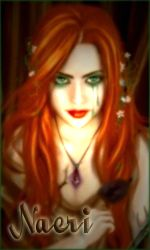Sexe : HommeRace : Mort-vivant
Faction : Horde
Formation : Chasseur
Description :
Naeri, d’où le Secret des Cendres
I – Prélude
Naeri CendreSang, née de l’amour commun d’Aran et Orgaë CendreSang. Riche famille qui vivait à Lune d’Argent.
Aran possédait un poste de Haut Gradé dans les rangs de la Milice de la Capitale, il avait réussi à se tailler une certaine réputation parmi les siens, considéré comme quelqu’un de réfléchi mais aux méthodes brutales, ce qui peut paraître assez paradoxal. Certains affirment qu’il coupait les mains des suspects pour ensuite les brûler et soi-disant « lire » dans ces cendres pour apprendre la vérité. Toujours est-il que cet Elfe de sang restait quelqu’un de craint et de respecté.
Sa femme, Orgaë, passait la plupart de son temps à Etudier l’art des Arcanes. Elle était une personne discrète, mystérieuse et imprévisible. Son ingéniosité l’avait tiré par le passé de bien sombres situations dans lesquelles elle s’était mise à cause de certaines magouilles et deal douteux…
II – Une éducation particulière…
Naeri fut formée dès son plus jeune âge au combat, son père jouant le rôle de formateur, mais aussi à l’Art des Arcanes, dont sa mère prenait un malin plaisir à faire l’institutrice.
La jeune Elfe de Sang décida de s’orienter vers un type de combat mêlant puissance d’origine physique et magique. L’utilisation de l’Arc était devenue sa méthode d’attaque favorite, mélangeant discrétion et intelligence, qui étaient ces deux meilleurs atouts.
Elle apprit par la suite à apprivoiser un animal pour qu’il devienne son familier et obéisse à ses ordres, ainsi, elle s’en servirait comme chair à canon pendant qu’elle provoquerait le plus de dégâts possible à distance, avec son arc.
Le temps passa, Naeri devint majeure, et il était de songer à se trouver un travail. Elle suivit les traces de son père, à quelque chose près : elle fut recruté par une unité militaire de Lune d’Argent nommée SR (Section de Récupération). Son travail consistait à travailler en équipe, dans le but de récupérer des objets protégés par des personnes d’une faction ennemie, ou bien de glaner des informations dans un endroit inhospitalier… tout ceci pour servir la communauté de son peuple.
III – Où l’on succombe à la Haine
Mais comme dans toute famille, dans toute vie, il y a toujours des problèmes ayant une importance majeure pour notre avenir.
Dans ce cas-là, ce fut l’arrestation d’Aran CendreSang et de sa femme Orgaë Cendresang, pour trafic de composants interdits, d’objets maudits, de fausses copies de tableaux, de meurtres, et surtout pour la participation et l’intégration des deux accusés à une Organisation Secrète visant à faire tomber le système politique de la communauté des Elfes de Sang pour le profit de cette organisation.
La décision des dirigeants fut directe : Ils étaient condamnés à mort.
Condamnés à êtres brûlés, ironie du sort pour des personnes sachant lire dans les cendres. Ce serait la nuit tombante le jour même de l’arrestation, dans la Cour du Soleil, qu’ils seraient exécutés.
La foule s’était rassemblée autour des deux bûchers où étaient ligotés Aran et Orgaë. Un Elfe de Sang s’avança, face aux deux condamnés :
-Vous périrez pour vous avoir participer et intégrer une organisation nuisible à notre communauté. Avez-vous une dernière chose à dire ?
Naeri était au milieu de la foule, agenouillée et en larmes, ses parents lui avaient de ne pas s’inquiéter, mais la situation prêtait plutôt à ce qu’elle fasse le contraire.
Les dirigeant en personnes regardaient d’un balcon du Palais comment se déroulait les choses, ils étaient pile poil en face des deux condamnés.
C’est Aran, qui prit en premier la parole, d’une voix forte et portante :
-Oui j’ai en effet une chose à dire, à vous, fameux et subtils gouverneurs. Si vous connaissiez si bien que ça notre organisation, alors vous devriez savoir que nous avons toujours un tour d'avance.
Alors, du cercle que formait la foule autour des bûchers sortirent une vingtaine de personnes en robes noires et pourpres, encapuchonnées, portant chacun une bougie au bout de leur main droite. Ils chantaient… Non, c’était une incantation !
Aran aperçut Naeri au milieu de la foule, il lui cria :
-Fuis ! Fuis ma petite !
Un sceau représentant une étoile à cinq branches se dessina sur le sol, délimité par les personnes encapuchonnées.
Il y eut un grand et long cri strident, venu de nulle part, tout le monde se tordit de douleur en se bouchant les oreilles.
Pendant ce temps, les fauteurs de troubles avaient eut le temps de délivrer Aran et Orgaë.
La panique régnait, les enfants pleuraient dans les jupons de leurs mères, ces dernières étant elles-même terrorisées. La foule se dispersait, les gens trébuchaient les un sur les autres. C’était le chaos total.
Un combat s’engagea entre Aran et ses hommes contres les soldats de la capitale. Naeri courut à la rescousse de sa mère, même si elle n’était pas d’une grande utilité, elle ne pouvait pas rester là à rien faire.
Aran reçut une flèche en plein torse, puis une seconde à l’épaule gauche. La dernière lui fut fatale, elle se planta dans la nuque, l’Elfe de Sang s’écroula au sol, une flaque de sang était en train de s’écouler sur le sol, ce n’était pas la seule, le sol en était jonché.
Naeri ne sut plus que dire, elle restait muette, des larmes s’étaient remises à couler. Sa mère, elle, devenait hystérique, folle de rage, devant la perte d’un être qu’elle avait tant aimait.
-Vous paierez !!! De vos vies, de votre sang, de vos Cendres ! Mais vous paierez coûte que coûte ! Hurla-t-elle. Sales chiens de Lune d’Argent, que le Fléau vous emporte tous ! Tous misérables que vous êtes !
Les personnes encapuchonnées attrapèrent Orgaë et Naeri, avant de les emportés à toute vitesse à l’extérieur de la ville.
D’autres alliés les attendaient aux portes, avec des montures de toutes sortes.
Un des membres de cette fameuse organisation prit la parole en s’adressant aux fuyards :
-Rentrons. Il y a déjà eu assez de morts de notre côté.
Et ils prirent la direction du sud, le voyage s’annonçait long.
La très jeune Elfe de Sang était assise en deuxième place sur un Raptor guidé par un Troll, elle était à moitié couchée, les yeux grands ouverts. Elle marmonnait sans cesse: « Ils paieront… Ils paieront… Ils paieront… Chiens de Lune d’argent… Je vous hais… Ils paieront…
À suivre...
Plus d'infos sur Naeri >>>
Nahylia
Age : 29Sexe : Femme
Race : Humain
Faction : Alliance
Formation : Voleur
Plus d'infos sur Nahylia >>>
Nancy
Age : 19Sexe : Femme
Race : Humain
Faction : Alliance
Formation : Guerrier
Plus d'infos sur Nancy >>>
Nann
 Age : 13 ans
Age : 13 ans
Sexe : Homme
Race : Nain
Faction : Alliance
Formation : Guerrier
Description : petit nain ( nabot ) de treize ans,Nann est le benjamin des Grimson,une des familles naines assez bien réputées en Azeroth.Quand Nann avait encore neuf piges,son père,Grimmer Grimson,dit "Le Marteleur",partit en guerre à Northrend,au nom de l'alliance.Quelques mois après la Garde Millitaire d'Ironforge déclara légalement Mort Grimmer Grimson,qui fut disparu en terres de Northrend,près d'Icecrown ... Après cet évènement tragique,Nann Grimson entra dans l'Ecole du Combat d'Ironforge et apprit les bases du combat armé.Quelques années plus tard,il sortit de cette école pour servir Dun Morogh auprès de son cousin germain à Anvilmar ...
Plus d'infos sur Nann >>>
Lire les 3 récits de Nann >>>
Warning: mysql_fetch_array(): supplied argument is not a valid MySQL result resource in /mnt/136/sda/2/2/verdisquo/Share/functions/interface.php on line 42
NeverKnow
Age : 30Sexe : Homme
Race : Humain
Faction : Alliance
Formation : Voleur
Plus d'infos sur NeverKnow >>>
Nicolaï
Age : 132Sexe : Homme
Race : Nain
Faction : Alliance
Formation : Chasseur
Description : Rien n’a jamais pénétré le Dun Morogh au point de soucier Anvilmar. Toute la vie de Nicolaï y fut dédiée, sans presque jamais quitter ce petit bout de terre enneigée. A 132 ans maintenant, c’est une nouvelle vie qui s’offre à lui… l’âge adulte l’à pris, et les nouvelles motivations aussi.
Nicolaï est né d’un père bûcheron (Daniel) et d’une mère couturière (Ashmilia). Il a été élevé d’un profond respect de la nature, et dans une vie sans grande histoire. Son enfance, il l’a passée dans les grottes et les forêts alentours, jouant en apprenant le monde sous l’angle de la proximité avec la nature. Il a toujours aimé les animaux, et ne se lasse de leur compagnie. Très jeune, il s’est pris de passion pour l’élevage de lapins… un passe temps comme un autre, qu’il exerçait entre deux soirées de contes déclamés par les hérauts voyageant de par le monde pour raconter la vie du monde extérieur.
Puis vint l’âge de travailler, et c’est logiquement qu’à l’âge de la retraite de son père, il repris à son compte son affaire de bûcheronnage. Ca marchait plutôt pas mal, et le bois qu’il coupait servait à ériger des villes comme Kharanos. On lui commanda même parfois du bois pour Ironforge ou pour Stormwind. L’installation des nains à Menethil fut son heure de gloire : la construction de bateaux nécessaires pour joindre les deux continents le mettait aux premières loges de l’économie d’Azeroth. L’un après l’autre, ses parents moururent heureux et sans heurts.
Mais le monde extérieur était de moins en moins sûr, et Anvilmar fût bientôt en prise aux déboires. Les Trolls puis les Troggs s’installèrent à proximité du fief, avec la ferme intention d’y prospérer. Cela dérégla tout l’équilibre de la nature. Les loups et les sangliers se mirent à pulluler, profitant des restes de charognes que les vils envahisseurs laissaient en pâture. Bientôt, les bois des environs d’Anvilmar n’étaient plus fréquentables, et exercer son métier devient quelque chose de très dangereux pour Nicolaï.
Il envoya une requête au Roi Magni, l’appellant au secours. Mais la réponse fut sans appel : il n’y avait pas assez de soldats pour dépêcher l’armée sur des conflits si secondaires… Il enverrait à Nicolaï de quoi le dédommager… peut-être. En attendant, l’activité de bûcheronnage devait cesser. Il fallait alors à Nicolaï une idée pour se reconvertir et survivre… Il pensait à quelque chose : la chasse, d’une part, lui permettrait de subvenir à ses besoins et de prospérer de manière nouvelle. Le commerce, d’autre part, était une vertu en pleine croissance, et si le bois n’était plus au goût du jour, d’autres secteurs étaient en plein essor. Parmi eux, l’artisanat du cuir. Enfin, la guerre était aussi un moyen de s’épanouir, et si Nicolaï n’aimait pas vraiment se battre, il savait qu’il y avait à tirer profit de la situation…
La reconversion s’amorçait… et un an après le dernier coup de hache, tout son pécule écoulé, la nouvelle vie pouvait commencer.
Plus d'infos sur Nicolaï >>>
Nightblade
 Age : Inconnu
Age : Inconnu
Sexe : Homme
Race : Elfe
Faction : Alliance
Formation : Voleur
Description : Bien Né, chasseur de démon, prisonnier, aventurier... Nightblade a été tour à tour tous ces personnages.
Nul ne se souvient de son véritable nom d'autrefois, pas même lui. Tout ce que l'on sait, c'est qu'il y a dix mille ans de cela, Nightblade faisait partie de la caste des Biens Nés, un groupe d'aristocrates magiciens et favoris de la Reine Azshara, la souveraine des elfes de la nuit.
Nightblade était un fervent adepte de l'utilisation des arcanes, mais quand sa reine et les siens se mirent à vouloir aider le sombre seigneur Sargeras a entrer en ce monde, Nightblade s'opposa à eux; aider cette entité aussi mystérieuse que puissante ne pouvait amener que ténèbres et désolation sur le merveilleux empire Kaldorei qu'ils avaient mis tant d'années à bâtir.
Nightblade trahit donc les siens, et se mit au service des forces de Malfurion Stormrage. Rituellement, l’ancien Bien Né s’ôta la vue à l’aide de lames imbues d’énergies démoniaques, et devint un chasseur de démon. C’est là qu’il prit son nouveau nom : Nightblade, la Lame de la Nuit.
Le chasseur de démon combattit aux côtés des fidèles de l’archidruide, et lors de la bataille finale qui opposa les démons et les Biens Nés aux elfes de la nuit et aux dragons, Nightblade engagea un titanesque combat contre un puissant sorcier eredar. La terrible bataille, gigantesque défouloir d’énergies arcaniques, semblait ne jamais vouloir prendre fin. Quand Nightblade parvint enfin à terrasser son adversaire, il était lui-même cruellement blessé. Mais pire que cela : le combat contre le démon semblait l’avoir complètement vidé de ses énergies magiques, et consumé son être intérieur… Il était devenu totalement tari, vide, déconnecté des courants magiques. Comme si le feu magique avait complètement brûlé son essence, et qu’il ne restait plus rien en lui pour le rallumer.
Lorsque la Guerre des Anciens s’acheva, Nightblade sentit en lui un grand vide : il avait soif de magie, il avait besoin de la sentir couler en lui une fois de plus. Mais rien n’y faisait, les arcanes se refusaient à lui. Frustré, ignorant complètement les interdits sur la magie formulés par Malfurion, Nightblade entreprit avec ferveur un grand nombres de recherches et d’expériences magiques, dans le but de retrouver ses pouvoirs, fouillant dans les archives et les travaux des Biens Nés. Quand Illidan créa le nouveau Puits d’Eternité, Nightblade devint complètement hystérique, dévoré par sa soif et sa dépendance.
Les druides Kaldorei prirent peur des actions de l’ancien Bien Né. Incapable de parvenir à le raisonner, ils se résolurent à l’enfermer sous terre pour l’éternité. Nightblade fut placé sous la surveillance des Gardiennes, une sorte de police très spéciale, complètement indépendante des Sentinelles.
Nightblade fut enfermé par celles-ci dans les sous-sols de la prison de Kal’danil en Ashenvale… Des siècles de ténèbres s’écoulèrent pour le chasseur de démon, des siècles d’obscurité sans fin…
***
Quatre années après la Bataille du Mont Hyjal, des murmures se mirent à courir parmi les feuillages des forêts de Kalimdor ; dans l’antique prison de Kal’danil, on aurait retrouvé es Gardiennes sauvagement massacrées… Et une cellule désormais vide… terriblement vide…
Plus d'infos sur Nightblade >>>
Lire les 3 récits de Nightblade >>>
Norië
 Age : Inconnu
Age : Inconnu
Sexe : Homme
Race : Elfe
Faction : Alliance
Formation : Guerrier
Description : Plus grand, plus colossal que la majorité des elfes, il n'y a pas de doutes, Norië est un guerrier.
Il est couvert de cicatrices et la plus visible sera cette balafre qui lui traverse le visage en diagonale sur toute sa longueur.
Norië n'engage jamais la conversation, il préfere être seul, et semble éviter tout contact physique avec les autres. Ses traits sont dur, séveres, mais laissent paraitre parfois une impression de tristesse.
Certain l'auront connu avant, mais depuis son retour des Maleterres il a perdu la mémoire et semble de plus en plus s'enfermer dans sa profonde solitude.
Sans pouvoir se l'expliquer les assassins, les meurtriers les plus cruels et impitoyable se sentent mal a l'aise en sa présence, comme si des milliers de regards remplis de repproches se posaient sur eux et les pointaient du doigts.
Norië parle avec un accent elfique tres prononcé, éprouves beaucoup de difficulté avec le commun, et ne semble pas s'interesser aux "détails" qui occuperont la majorité des gens...
Il fait penser à un guerrier, sauvage, dont la place n'est que dans une arène ou sur un champ de bataille.
Plus d'infos sur Norië >>>
Lire le récit de Norië >>>
Odarion
 Age : 17
Age : 17
Sexe : Homme
Race : Humain
Faction : Alliance
Formation : Paladin
Description : fils du generallisime bolvar fordragon, odarion a decidé de mener la croisade contre le fléau au nord avec son meilleur ami nain Reorx mais l'horreur qui les attendaient la-bas était pire que tout se qu'il pouvait immaginer.il a don naturelle pour la lumiere.il est en trés bonne relation avec son pére qui l adore mais son amour pour une jeune elfe nomé Rayanas est sujet de dispute avec son pére.
Plus d'infos sur Odarion >>>
Lire le récit de Odarion >>>
Orosh
Age : 30Sexe : Homme
Race : Mort-vivant
Faction : Horde
Formation : Prêtre
Description : Je ne suis rien de plus qu'un humble réprouvé, prêtre de son état, en quête d'une solution à cette suite de conflit sans fin.
Plus d'infos sur Orosh >>>
Lire les 21 récits de Orosh >>>
Oushi
Age : 18Sexe : Homme
Race : Tauren
Faction : Horde
Formation : Chasseur
Plus d'infos sur Oushi >>>
poline
Age : 18Sexe : Homme
Race : Mort-vivant
Faction : Horde
Formation : Paladin
Plus d'infos sur poline >>>
Pyroto
Age : ?Sexe : Homme
Race : Elfe
Faction : Alliance
Formation : Druide
Plus d'infos sur Pyroto >>>
Randal
 Age : 22
Age : 22
Sexe : Homme
Race : Humain
Faction : Alliance
Formation : Guerrier
Description :
La bataille faisait rage... Randal était en plein dans l'affrontement, faisant virvolter son épée dans tout les sens, il n'était satisfait que lorsqu'il sentait sa gigantesque épée toucher un corps.
Emporté par une rage bien connue des guerriers, il ne fit pas attention, et de deux coup de masse, il fut toucher au crâne et plus violament à l'épaule. Randal tituba un instant, et s'écroula alors que son adversaire lui porta un second coup de masse sur l'épaule.
Emporté par une rage bien connue des guerriers, il ne fit pas attention, et de deux coup de masse, il fut toucher au crâne et plus violament à l'épaule. Randal tituba un instant, et s'écroula alors que son adversaire lui porta un second coup de masse sur l'épaule.
***
J'ouvrai les yeux et me redressai. Les cris, la guerre, le sang, il n'y avait plus rien. J'étais dans ma petite maison, au Northshire. Il me semble que j'avais dix ans à cette époque, je me souviendrais toujours de cette année... Le plus terrible jour de toute mon existance. C'était censé être une matinée comme les autres, il faisait un peu frais mais il y avait du soleil. Papa et maman n'était pas là, comme d'habitude. En train de traîner avec leur conquêtes, en train de se trahir chacun de leur côté sans même le savoir... Rien que d'y penser ca me donne la nausée.
Aujourd'hui, je n'avais pas envie d'étudier, j'avais envie de rendre service à l'Abbaye. Les Kobolds étaient de plus en plus nombreux, il fallait faire un peu le ménage. Je m'emparai de la hache de bûcheron de mon paternel. Pour un enfant de mon âge, elle aurait pu paraître lourde, mais j'avais déjà suivit un bonne entraînement malgré tout.
Des heures plus tard, j'étais toujours en train de chasser les Kobolds. C'était presque excitant que d'attendre le bon moment, caché, pour bondir sur ces créatures et sentir la lame s'enfoncer dans leur chair. Le peu de personnes qui me croisèrent, me regardèrent soit avec peine soit avec dégoût. Les gens me méprisaient je n'étais pas stupide.
Mais alors, je vis mon père accompagné de sa maîtresse. Il partit en direction de la mine de la crête aux échos. Sûrement dans cette petite galerie aménagée qui aujourd'hui.. N'existe plus. Je restai planté là, regardant avec peine ces deux ces deux personnes. On aurait dit un jeune couple qui n'avait que la possibilité de se voir en cachette.
Néanmoins, je repris mon activité, mais pas avec le même amusement... Et là, je vis ma mère passer avec son amant.. En direction de la même mine. J'avais déjà bien du mal à me retrouver en leur compagnie mais alors si je ne pouvais plus que les voir séparés, je ne supporterai pas.
Je courrus le plus vite possible, trouver une excuse pour qu'ils fassent demi-tour et alors que je passais prêt d'un buisson, un Kobold en sortit au travers de mon chemin. Je trébuchai dessus et la petite créature pensa que je voulais lui voler ses bougies, alors il bondit sur moi, menaçant.
Pendant un moment, je l'affrontai à mains nus jusqu'à qu'il prenne la fuite alors je repris ma course en direction de la mine mais il était trop tard, et tout s'accéléra.
Ils se disputèrent, tellement fort que la mine en tremblait. Il y eut un bruit sourd, puis un silence et tout s'effondra, du moins la galerie où il se trouvait.
Je revois encore le visage de mon père, qui eu à peine le temps de me voir avant d'être écraser par une pierre.
La nouvelle ne mit pas longtemps pour faire le tour du Northshire. Mes parents étaient mort en apprenant leur terrible secret. J'avais honte d'avoir eut de tel parents.
***
Randal rouvrit les yeux. Une prêtresse était penché au dessus de lui, et lorsqu'elle le vit ouvrir les yeux, elle sourit hochant la tête pour elle même, satisfaite. Elle repartit alors, cherchant un autre homme à soigner. C'était un miracle que Randal ai survécu, et il s'en voulait. Il aurait voulut mourrir. Il poussa un long soupir en se relevant. Son épaule le faisait terriblement souffrir, une blessure qui ne guérira sûrement jamais.
Plus d'infos sur Randal >>>
Lire les 8 récits de Randal >>>
Rangark
Age : 42Sexe : Homme
Race : Humain
Faction : Alliance
Formation : Paladin
Description : Fier paladin, Il est partit de chez lui pour aller s'engager dans la phlange ecarlate,il a fait ses debuts a Northshire.
Plus d'infos sur Rangark >>>
Riddanir
Age : 1600Sexe : Homme
Race : Elfe
Faction : Alliance
Formation : Chasseur
Plus d'infos sur Riddanir >>>
Rintaro
Age : 67Sexe : Homme
Race : Nain
Faction : Alliance
Formation : Guerrier
Plus d'infos sur Rintaro >>>
Rithrandir
Age : 150Sexe : Homme
Race : Elfe
Faction : Alliance
Formation : Guerrier
Plus d'infos sur Rithrandir >>>
Romano
Age : 22Sexe : Homme
Race : Elfe
Faction : Alliance
Formation : Guerrier
Plus d'infos sur Romano >>>
Rumwald
 Age : Adulte depuis un bon bout de temps !
Age : Adulte depuis un bon bout de temps !
Sexe : Homme
Race : Nain
Faction : Alliance
Formation : Guerrier
Description : Le nain finit sa choppe de bière et s' essuit la barbe d' un revers de manche. Puis il soupire de soulagement et commence son histoire.
" Aaaah ... Merci beaucoup ! Ca me rafraichit la mémoire on dirait ! "
Il vous regarde avec des yeux pétillant.
" D' accoooord ! J' vais vous dire qui ch' suis et ce que j' fout là ...
Bon.
J' m' appelle Rumwald ! Rumwald Mac Greyland ! Ca ne vous dit rien ?
...
Et bah c' est normal ! Depuis la dernière guerre , notre famille est sans le sou ...
C' est la faute à mon père ! Et au père de mon père ! Et à son père à lui ... bref ! C' est la faut à tous nos ancètres si ont est fauchés aujourd' hui ...
Mais n' empêche , on est des nobles ! Et si Magni Bronzebeard avait un tant soit peu de respect pour les ancètres , cela ferait longtemps qu' il nous aurais récompensé comme notre famille le mérite !
Au lieu de ça ... pfeuh ! Il fait mine d' ignorer notre existence ! Comme si ... "
La courte ivresse provoqué par la bière viens de passer et le nain devient plus sombre et plus calme ...
" Bah ... en fait , j' m' en moque pas mal , moi , de notre honneur ... Enfin ... NON ! Bien sur , mais ...
J' ai du mal ...
J' ai du mal à être digne de ma famille ...
Quand je pense qu' il y' a même pas un siècle , notre famille était considérée comme la plus grande maison de guerriers chez les nains !
Quand ... sur le champ de bataille enneigé ... les nains voyait les étendards ornés du blason familial , du blason des Mac Greyland ! Et ben les soldats s' en fichait pas mal de mourrir ... du moment qu' ils savaient qu' un Mac Greyland se battait dans les rangs ... si ce n' était la victoire , c' était l' honneur assuré !
...
Je suis l' ainé des trois frères Mac Greyland ... mon père à toujours voulu que je sois son héritier ... il ne m' as apprit que le combat , la guerre , le respect des superieurs , l' endurance , aucune stratégie ... , la force ... et rien que ça ...
La seule chose " intellectuelle "qu' il m' ai apris , c' est la gestion des trèsors ...
Mais c' était à des fins beaucoup moins louables que celles d' être comptable ...
Bref ... je n' ai jamais été assez bon pour mon père ... si bien que dès que j' eu atteint ma majorité , je décidais de partir de la maison (mon père avait dû vendre le manoir familial aux créanciers d' Ironforge) et de forger moi-même ma propre réputation ... de toutes façons , celle de notre famille est presque complètement oubliée ...
Mais mon père ne voulut pas me lacher moi et mes frères ...
Ils nous ordonna quoi que l' on fasse , de faire resplendir les armoiries familiales afin de sauver l' honneur ...
...où alors de changer de nom ...
Alors chuis parti , et j' fais de mon mieux pour être à la hauteur d' un nom dont personne (ou presque) ne se souvient ...
Un jour , j' ai rencontré un prêtre humain qui m' enseigna la philosophie (enfin ... il essaya parce que j' ai pas tout compris). J' ai oublié son nom , mais je sais que c' est le meilleur humain que j' ai jamais rencontré !
Jusqu' au jour où ... quel sale type en réalité ... qu' on ne me parle plus JAMAIS de philosphie !
Puis , j' ai fait la connaissance de Kusato. Un nain voleur qui avait une idée bien étrange ...
Il voulait monter un tripot à Stormwind ... dans un but connue de lui seul (et de moi). Alors , depuis ce jour , nous sommes dans les papiers administratifs et les entretients d' embauche ...
Mais on y arrivera ! Et nous serons riches ! Et je rammènerais cet argent à mon père qui sera bien obligé de reconnaitre ma dignité ...
Mais ... est-ce digne ? "
Le nain boit votre choppe de bière et regarde tristement la table.
" De toutes façons , je ne sais rien faire d' autre ... "
Plus d'infos sur Rumwald >>>
Lire les 7 récits de Rumwald >>>
Samwise
Age : 30Sexe : Homme
Race : Gnome
Faction : Alliance
Formation : Guerrier
Description : Anotation de l’archéologue : Ce texte est la préface d’un journal découvert dans les Ruines de Jubuwal au sud d’Azeroth. Avec le journal on n’a retrouvé divers objet mais aucune armes ou ossement.
Salutation lecteur ! Si vous lisez ceci c'est que je suis mort ou que ce journal de voyage vous est parvenu d'une quelconque façon. Pour mieux comprendre les pages qui suivent voici un petit descriptif de qui je suis:
Je me nomme Samwise Gamije je suis un Gnome et je suis née au Loch Modan après la chute de Gnomeregan. Mes parents moururent alors que je n'étais qu'un nourrisson. J'ai donc étais élevé par un couple de Nains Olim et Helga Gamije. Ils mon Enseigné le savoir des Nains comme si j'étais leur véritable Fils. Des que je fut en âge de comprendre mes parents adoptif me racontèrent la vérité sur mes origines. Et de la mort tragique de mes parents lors d'une embuscade de la Horde. J’ai rapidement choisi la voie du Guerrier comme mon père adoptif, qui était un des gardes du Loch Modan et m’appris le maniement de l’épée et de la hache de guerre. C’est à l’âge de 30 ans que j’ai décidé de partir en voyage initiatique où les diverses péripéties que j’ai eux et ma jeunesse sont décrites en détail plus loin dans ces pages...
Plus d'infos sur Samwise >>>
Sapphô
Age : 25Sexe : Femme
Race : Humain
Faction : Alliance
Formation : Démoniste
Description : Elle errait parfois sans but... à la recherche de son autre part... sa part d'humanité... figée dans le corps de Suburbia... son autre corps... son autre moi.. divisée par la malédiction.. coupée à jamais de ses racines... coupée d'une partie d'elle-même qui subsistait dans une autre dimension... alors son regard devenait dur... et elle tuait... elle massacrait... sans discernement... et s'écroulait, épuisée... cette violence servant d'exutoire à sa douleur.... Elle projetait sa haine dans ses démons... et ses démons dans sa haine..... parfois, elle devenait sa succube... s'emplissant de la vie de ses victimes.. se régénérant en absorbant leur énergie magique.... elle voyageait seule... combattant parfois avec des compagnes et compagnons de passage quand la tâche était trop rude... mais la solitude était sa meilleure alliée.... Parfois, elle avait envie de chaleur... d'amitié, d'amour... mais sans s'en sentir capable.... et sans l'espoir de l'être un jour....
Plus d'infos sur Sapphô >>>
Sayra
Age : 21Sexe : Femme
Race : Humain
Faction : Alliance
Formation : Démoniste
Plus d'infos sur Sayra >>>
Selmae
Age : (*30-35ans*)Sexe : Femme
Race : Elfe
Faction : Alliance
Formation : Chasseur
Plus d'infos sur Selmae >>>
Selthinea
Age : 200 ans environSexe : Femme
Race : Elfe
Faction : Alliance
Formation : Druide
Plus d'infos sur Selthinea >>>
Senseyar
 Age : 2500
Age : 2500
Sexe : Homme
Race : Elfe
Faction : Alliance
Formation : Guerrier
Description : Senseyar est un ancien pirate qui lutte et qui luttera toujours au services de l'alliance en tant que soldat experimente.Actuellement Senseyar vit quelque part dans Feralas mais tout le monde c'est que sa vrai maison est le champ de bataille
"tu te met en travers de mon chemin c'est l'alliance que tu insulte donc meurt felon intrepide"
Plus d'infos sur Senseyar >>>
Lire les 5 récits de Senseyar >>>
Sephorius
 Age : Indéterminé
Age : Indéterminé
Sexe : Homme
Race : Mort-vivant
Faction : Horde
Formation : Voleur
Plus d'infos sur Sephorius >>>
Lire les 9 récits de Sephorius >>>
Serguei
Age : 16Sexe : Homme
Race : Humain
Faction : Alliance
Formation : Mage
Plus d'infos sur Serguei >>>
shadowin
Age : 18Sexe : Homme
Race : Humain
Faction : Alliance
Formation : Mage
Plus d'infos sur shadowin >>>
Shaki
Age : inconnuSexe : Femme
Race : Elfe
Faction : Alliance
Formation : Guerrier
Description : < doit trouver le temps de l'écrire en entier mais en résumer ca donne ca ^.^ >
Rien a envier rien a demander , elle se savait belle , elle en abusé , elle s'en servait.
Sa famille jamais vraiment a s'occuper d'elle elle passer des heures devant son reflet du lac a se regarder , quand la lune passait , son reflet étais que plus beau a ses yeux .
Il lui s'emblait que parfois la lune lui parlait et la suivait .
Shaki étais jalouse de celle ci chaque fois que son reflet passer sur le sien elle en était que plus énèrver de la beauter que l'effet donner .
Elle lui parlait , chaque soir elle murmurrait , chaque pas qu'elle fesait .
Shaki fini par aimer jalousement la lune , elle lui avait même planter un jardin a son honneur , remplis de toute sortes de plantes .
L'une d'elle donner de petit fruit pas plus grand qu'un écus , d'une couleur attirante , elle les trouver si beau , mais la lune lui disait de se méfier , de ne jamais en manger , ne jamais même les toucher .
Mais aprés tout Shaki a pas a écouter un astre immobile , elle en prix un grand panier que tout le monde chez elle ne mis pas longtemps a manger .
Le lendemain Shaki étais en pleur dans les bras de son Frère Teylan , sa famille était morte n apparament empoisoner , Shaki ne dit rien a son frère qui venait de rentré d'un cours voyage ...
Folie de la jeune elfe qui l'as poussais a tuer sa famille ..? Ou peu être légende ? Peu être même simplement mensonge de la jeune elfe...
Plus d'infos sur Shaki >>>
Shalaë
Age : Jeune adulteSexe : Femme
Race : Elfe
Faction : Alliance
Formation : Druide
Plus d'infos sur Shalaë >>>
Shanaa
Age : 250Sexe : Femme
Race : Elfe
Faction : Alliance
Formation : Chasseur
Plus d'infos sur Shanaa >>>
Sheik
Age : 20Sexe : Homme
Race : Humain
Faction : Alliance
Formation : Guerrier
Plus d'infos sur Sheik >>>
Lire le récit de Sheik >>>
Shïza
 Age : 16
Age : 16
Sexe : Femme
Race : Elfe
Faction : Alliance
Formation : Voleur
Description : ... Say ce battais avec ardeur contre Nilian et ces fils pendant que les filles de la familles s'enfuiaient vers le Mont Hyjal.
Say arrivas au bout des résistance prodit par ces 6 elfes, il ce lancer donc a la recherche du reste de la famille ...
Les 3 soeur et leur mére arpenter les montagnes de Grange Bois en évitant les charognards ...
Say, dans une rage interminable tuas tous ce qui trouvas sur son chemin, il volait d'arbre en arbre, son sens lié à la nature lui permis de détecter les traces des elfes ...Il arrivait a Grangebois.
Les 4 elfes arrivaient au sommet du Mont Hyjal, mais Say y était déja arriver avans eux :
" Le brouillard ... il es là ! s'exclama l'une des soeur, je le retiens contunais sans moi ..."
Elles continuairent leur route vers le Mont Hyjal dans cette imposant brouillard ...Aux porte démoniaque Say les atendaient :
"Maintenant vous ne m'échaperées plus ! "
il sortas de sa cape une lame et ce jettas sur les elfes.
Au moment où Say levas son arme sur eux, une énorme ombre lui attrapas la main et une le brouillard s'éclairsis.
Une voix lui ordonnas de lacher son arme, et une femme apparus devans lui, Say la fixas de ces yeux rouge:
"- Qui est vous ?! interrogas Say.
- Aucun importance lache ton arme a present.
- Personne ne me donne d'orde !"
Say sortis une autre lame de sa cape et tranchas la main qui le retennais et ce jettas sur la femme et son démon.
Les 3 elfes profitairent de cette occasion pour ce sauver vers l'Arbre monde, où dans ces derniére force Filisia, la mére, accouchas prés du lac qui entoure l'Arbre monde.
Soudain la femme réaparus, elle leur informas qu'il n'y avais plus rien a craindre, que Say était mort, puis elle disparus.
La mére tenais dans ces bras son belle et tendre enfant qu'elle venais de métre au monde :" Shïza " c'est le nom qu'elle lui donnas.
L'une des soeur levas la tete où elle appairssus 2 ombres rouge vif, deux tigre rouge, ils s'approchairent tous 2 des elfes, les elfes les regardait comme des dieux, l'un des tigre pris l'enfant dans sa gueule, éblouis par les 2 bêtes la mére lachas l'enfant.
Soudain apparus Say ensanglenté et trachas les 2 bêtes, l'une des soeur lancas son sabre en plein dans le dos de Say, il tombas a genoux main contre le sol, elle courus vers Say pour l'achever mais un sarment de racine la collas au sol. Say ce levas et plantas son arme dans le corp de l'elfe puis achevas l'autre soeur et la mére.
Say ce dirigait vers le corp de l'enfant, levas son arme sur celui ci et soudain une auras rouge sortas des deux tigres fesant un bouclier autour de l'enfant. Say tapas un grand coup sur celui ci sans effet, il s'acharnas dessus, quand tout a coup l'auras rouge pris la forme des deux tigres. Say regardait cette puissance avec effroit, les deux tigres le transpersas, Say poussas un cris a faire glasser le sang, puis il tombas sur le sol ... l'auras s'impréniait dans le corp de l'enfant, puis les deux tigre ce relevérent ...
Shïza a maintenant 9 ans et vis avec un grand maitre ninja qui lui apprend l'art du Nunjitsu, un art du combat furtif, d'espionage et d'artisanat ...
Elle a était accueillis au sein de la SI:7 et est l'une des plus jeune espionne jamais vu dans cette agence d'espionnage ...
Les années passairent, Shïza a maintenant 16 ans et poursuit a grand pas son entrainement, pour devenir LA plus grande des Ninja.
Shïza ne connais pas son vrai passer ...
Plus d'infos sur Shïza >>>
Slapito
Age : 135Sexe : Homme
Race : Nain
Faction : Alliance
Formation : Paladin
Plus d'infos sur Slapito >>>
Soane
 Age : 19
Age : 19
Sexe : Femme
Race : Humain
Faction : Alliance
Formation : Prêtre
Description :
Courant à perdre haleine, l'enfant à la chevelure de feu était entrée dans la ferme en retenant un scau d'eau contre elle. Au coin du feu, une vieille dame brodait en se balançant d'avant en arrière.
" - Grand-mère, Grand-mère, je sais ce que je veux devenir quand je serais grande ! "
La vieille dame à la chevelure blanche tréssée tourna son regard bleu bridé vers sa petite fille. Un sourire était apparu sur son visage où le temps se lisait. Elle posa son travail au sol et tandis les bras vers l'enfant. Celle-ci posa son sceau au sol pour venir se blottir dans les bras de son aïeul.
" - Raconte moi Soane, raconte moi.
- J'ai vu une dame tout en blanc qui m'a aidé à prendre l'eau au puit. Elle est venue vers moi quand je me suis blessée contre un arbre, elle a dit quelque chose et j'ai plus eut mal. Elle m'a fait un grand sourire et puis on a parlé ! C'est une Prêtresse de Stormwind Grand-mère ! C'est une dame blanche de la Lumière ! Je veux devenir comme elle plus tard ! Comme elle ! Belle est blanche !
- Oui mon enfant, c'est toi qui décide de ton avenir... tu es sûre de ce que tu me dis ?
- Elle protège les gens ! Si j'avais été une dame blanche comme elle, j'aurais pu sauver papa et maman non ? Si je suis sûre ! Je veux être comme elle et sauver les petites filles qui ont perdu leur papa et leur maman !
- D'accord mon ange... va préparer le chaudron pour que je puisse faire à manger.. on en reparlera plus tard.."
Qu'importe ce que souhaitait la vieille femme, l'enfant avait décidé de ce qu'elle voulait faire de son avenir, et le coeur de l'aïeul s'était serré.. encore quelqu'un qui partira qui qui mourra sur le champ de bataille en hurlant le nom de la Lumière... Soane serait formée à Stormwind...
Plus d'infos sur Soane >>>
Lire les 4 récits de Soane >>>
Spirts
Age : Environs 10 000 ansSexe : Homme
Race : Elfe
Faction : Alliance
Formation : Druide
Description : Introduction
Apparence : Spirts est à l’heure actuelle un grand elf au teint palle, au corps musclé et au visage paisible. Il a de long cheveux marins et une barbe pointue de couleur identique.
Caractère : Spirts est un elf très calme et s’énerve que très rarement même fasse à des gens plus que dérangeant. Il est très sociable et aime les longues discussions qu’elle soit sérieuse ou non. Les divers problèmes de la société actuelle ne l’intéressent pas, il préfère de loin s’isoler dans la nature que de se baladé dans des endroits bruyants, il peu passé de long moment à méditer sans manger ni boire. Il n’éprouve aucune haine envers aucune race, serviable, chaleureux et aventurier, il n’hésitera pas a donné sa vie pour aider une autre personne surtout si cette personne est du sexe opposé. Il n’est pas manipulateur et attaquera que très rarement dans le dos, il a aussi une grande notion de l’honneur .
La naissance de Spirts
Je suis né au pied de l’arbre monde, au mont Hyjal, de deux parents elfs. Mon père est un vieux druide nommé Thenedas Lightstorm et ma mère est une jeune Prêtresse d’Ellune nommé Maieva Windwisper. Dés ma naissance j’étais en parfaite harmonie avec la nature, ce qui a fort inquiété mes parents, une telle harmonie apparaissait chez les druides d’environ 15ans, mon père alla consulter Fyrion Stormrage ce qui me mena a vite vers le druidisme.
L’apprentissage
Pendant mes dix premières années Fyrion m’apprit à canaliser ma colère pour former des boules d’énergies, ainsi que de prier la nature pour avoir des soins ou une bénédiction permettant d’augmenter ses capacités. Au fur et a mesure de mon avancement je voyais Fyrion et mon père discuter de plus en plus longtemps, je ne me mêlais pas de leurs affaires et préférant m’isoler dans la nature à me promener près du lac proche de la maison ou sur la branche d’un des plus hauts arbres que je trouvais.
Vers mes 15ans je fus amené à passer mon épreuve pour apprendre la forme d’ours, j’avais souvent vu mon père se battre sous cette forme, c’est très impressionnant. Lorsque je fus amené à passer cette épreuve mon père me donna une dague sans la quel j’aurais probablement raté cette rude épreuve. Ma première transformation fut assez douloureuse. Tout d’abord je m’étais isolé comme mon père me l’avait conseillé, ensuite j’entamai ma première transformation : la fourrure commença à pousser sur mes bras ainsi que sur tout le reste de mon corps ensuite les griffes sont apparues la douleur fut si forte que je cru mes main arraché de mon corps, je commençai à prendre les formes d’un ours, je croyais que j’étais devenu sourd, je n’entendais plus rien autour de moi mais mes oreilles ne bougèrent pas. Lorsque la métamorphose fut finie, je m’apaisais lentement sous ma forme d’ours. Le lendemain je repris ma forme normal et courut voir mon père et Fyrion pour leur annoncé que j’avais fini mon apprentissage de cette forme animale. Mais je la maîtrisais mal par rapport a la normal et par rapport a ma maîtrise de mes autres pouvoirs et Fyrion me conseilla de passez du temps avec les autres ours sauvages du mont. Et c’est ainsi que j’eu passé une année parmi une famille d’ours, la vie fut rude mais ma maîtrise de cette forme fut parfaite après cette expérience.
Lors de mes 20 ans, j’eu atteins la puissance d’apprendre ma forme féline, alors que beaucoup d’autre druides commençaient à peine à canalisé leur colère. Cette fois si ma mère me donna une robe qu’elle avait fait pour mon père mais il n’avait jamais eu l’occasion de la mettre. Avec cette robe je sentais que ma capacité magique avait fort augmentée. Fyrion m’emmena voir l’esprit de la panthère qui se logeait à reflet de lune non loin du lac pour me battre avec.
Le combat fut rude et long, il ne se finit pas sans blessure mais au bout d’une demi heure de combat acharné l’esprit s’arrêta et fit signe a Fyrion que j’étais prêt et je l’entendis dire dans mon esprit : « Tu t’es bien battu, tu seras un grand druide mon garçon. » La transformation fut moins dure et moins douloureuse que la précédente mais Fyrion trouvait que j’avais toujours autant de mal a maîtriser ma forme et je fus donc emmené a passer six mois dans une famille de panthère à reflet de lune. Je m’habituais bien plus vite a ma formes féline et eu beaucoup moins de mal à la maîtriser que ma forme d’ours.
La rencontre
Après mon séjour chez les panthères je voulus rentrer à reflet de lune pour y retrouver Fyrion mais sur le chemin je rencontrai une jeune elfe attaquée par des satyres. En voyant cette jolie jeune femme je ne pus bouger dans un premier temps, je désirais de toutes mes forces la secourir mais je ne pus y arriver qu’après un long moment. Quand je pus recommencer à bouger, je me précipitais entre la jeune femme et ses assaillants. Je commençai à guérir l’elfe de ses blessures et me transformai aussi tôt en félin. Regardant les trois satyres dans les yeux en montrant les crocs, je leur signalais que ce serais moi leur adversaire. Je sautai sur le premier en griffant les deux autres au vol, Je commençai à mordre à la carotide le satyre sur le quel j’avais sauté, il mourut sur le coup mais a peine me suis-je retourné qu’un des deux satyres m’envoya valser plusieurs mètres plus loin contre un arbre. Furieux je me relevai et fonçai vers l’auteur de ce coup mais je fus vite arrêter par l’autre qui m’attrapa par le dos.
Je repris donc ma forme normal et lança un grand coup de tête en arrière pour me défaire de son emprise, ce qui marcha plutôt bien, je me guérissais vite de mes blessure et égorgeai le satyre qui se tordait de douleur. Le dernier satyre qui avait l’air le plus puissant, commença a prononcer de drôles d’incantations et lança un trait d’ombre que je ne pu éviter. Gravement blessé au flanc gauche, je voulu me soigner mais n’en ai pas eu la force. Alors que le satyre allait jeter à nouveau son trait d’ombre, la jeune fille me guérit de mes blessures et je pus esquiver habilement la nouvelle attaque du satyre. Furieux je commençai a canalisé ma colère et a envoyer la boule d’énergie sur l’adversaire qui était en plaine incantation et qui ne put esquiver l’attaque qui lui troua le corps et le fit mourir sur le coup. Apres avoir constaté la mort du satyre, je m’effondrai alors encor blessé. Deux jour plus tard je me réveillai, je ne sais où. Je me redressai et aperçus la jeune fille que j’avais secouru, elle me sourit et me dit de me rallongé pendant qu’elle m’enlevait mes bandages. Ainsi je suis resté avec elle jusqu'à mes 26ans. Avant de partir au refuge des saisons pour entamer le sommeil cristallin je passai une nuit avec ma douce et connus les plaisirs de la chaire pour la première fois. Le lendemain matin a l’aube alors que j’étais encor avec elle Fyrion vint me chercher pour me mener au rêve d’Emeraude, avant de partir je l’embrassai une dernière fois et lui glissa quelques mots doux à l’oreille, je la recouvris de ma cape pour qu’elle n’ai point froid et je partis pour mon premier sommeil cristallin. Je ne l’oublierai jammais.
L’Eveil
Lorsque je fus réveillé, le monde avais bien changé, j’étais revenu dans l’époque qu’on appel l’air nouvelle. A mon réveil Fyrion étais là, mais ma douce ne l’étais pas, elle devait être encor dans son sommeil. Fyrion me confia une mission, je devais me rendre à Ashenvale pour combattre les orcs qui dévastaient la forêt. Je me rendis donc à Ashenvale, le voyage dura deux jours et je ne cessais de penser à elle. A mon arrivée à Ashenvale, un jeune chasseur m’interpella et me donna plus de détails sur ma missions : Je devais allez dans le camp de bûcherons Blackrock et trouvé le maître des bûcherons pour le tuer, ce qui permettrait l’arrêt des activités bûcheronne le moment de préparer une offensive.
Je me rendis alors au camp et commença à chercher le maître des bûcherons qu’on appelait Thorink. Je me rendis vers la plus haute tour du camp et l’ai trouvé assez facilement. Je le tuai assez facilement et sans alerter trop de monde. Apres m’être assurer qu’il n’y avait plus personne je rentrais à Ashenvale pour faire mon rapport.
Ensuit je revins au refuge pour retrouvé Fyrion et il me dit que mon sommeil devait se prolonger pour 50ans encor, avant de partir à nouveau pour le rêve cristallin j’ai demandé a Fyrion ou se trouvait l’elfe avec qui j’étais avant de partir dans mon précédent sommeil et il me dit qu’elle s’était réveiller pendant que j’étais a Ashenvale et me dit que je ne pouvais pas la revoir encor. Ainsi je reparti pour la deuxième dans le sommeil cristallin.
Le dernier éveil
J’ai été très perturbé lors de mon deuxième et dernier sommeil. De ne pas revoir ma bien aimé m’a tellement perturbé qu’a mon réveil, je ne me souvenais plus de mon enseignement druidique ce qui avait fort étonné Fyrion qui m’a alors dis de me dirigé vers Aldrassil pour refaire mon apprentissage. Je me dirigeai donc vers Aldrassil en me disant que je retrouverai peu être ma douce que j’aimais tant, lors de mon nouvel apprentissage …
Plus d'infos sur Spirts >>>
Strap
Age : entre 16 et 21... peut être plus, peut êter moinsSexe : Homme
Race : Humain
Faction : Alliance
Formation : Voleur
Description : Je me nomme Strap... enfin on me nomme comme ça depuis tout petit car je ne connais pas mon nom. Je ne connais pas non plus ma famille, ni mon lieu de naissance, pas même mon age... j'ai grandi à Baie-du-Butin, élevé (si on peut appeler élevé) par des gobelins. Et à présent je rode, sans point d'attache précis... Pour beaucoup je ne suis rien ni personne. Je ne figure même pas dans les listes de l'alliance puisque les hauts responsables ne connaissent même pas mon existence. Voila à quoi se résume ma vie...
Plus d'infos sur Strap >>>
Lire les 2 récits de Strap >>>
Syliène
Age : 1014Sexe : Femme
Race : Humain
Faction : Alliance
Formation : Démoniste
Description : Syliène est méchante! très méchante!
Elle fera tout pour arriver à ses fins : tenir dans ses mains l'Épée d'Ishara.
http://epee.ishara.free.fr
Plus d'infos sur Syliène >>>
Lire les 5 récits de Syliène >>>
syriam
Age : 6 ansSexe : Femme
Race : Gnome
Faction : Alliance
Formation : Mage
Description : Elle courait ......
Sans jamais vraiment s'arreter elle courait .......
Semant derière elle des graines de bonheur elle courait......
Aussi vite que ses petites jambes les pouvaient, elle courait .... et nul ne pouvait la rattraper
Elle parlait aussi très vite .......
Et chacunes de ses paroles contenaient le miel sucré de l'innocence.....
A chacun de ses mots, de ses pas, le monde se transformait laissant place à une féérie....
Un monde peuplé de figures cocasses et rigolotes auxquelles elle avait donner vie et nom :
Le monsieur triste et sa quête de la robe multicolore
La méchante sorcière avec ses malédiction si amusantes
La gentille sorcière qui avait pris soin d'elle
Le profeseur qui un jour lui apprendra à transformer les gens en grenouille
Monsieur tranpophage qui croquait les gens avec son crayon et son papier
Madame chat qui lui avait retrouver son chat égaré et épuisé
Madame couture qui lui ferai un jour une belle robe pour le monsieur triste
Madame dong et son armure qui resonnait si bien dans la prison
Monsieur jaune et son étrange maladie
Madame kidnapateuse qui souhaitait juste l'amener à l'orphelinat
Monsieur clochard qui était comme un père pour elle et qui allait "adoptiser" sa copine
et tant d'autres encores........
Mais nul n'étaient aussi cher à son coeur que madame chapeau ..........
Madame chapeau qui s'était inquiété ..... qui l'avait sauver ...... et maintenant "adoptiser"
Un liens fort la liai maintenant à elle , elle voulait tout le temps la voire et apprenait l'inquietude de la savoir loin.....
Elle ne le disait pas ... préférant courir .......
Courir pour oublier .....
Courir pour rattraper .......
Courir pour guerrir .......
Alors court petit ange ....... court et jamais ne t'arrete ........
Amene avec toi le bonheur comme tu l'as déjà apporté à mon coeur ........
Et que cette course soit infinie .........
Plus d'infos sur syriam >>>
Lire les 5 récits de syriam >>>
Taleyran
Age : 31Sexe : Homme
Race : Humain
Faction : Alliance
Formation : Voleur
Plus d'infos sur Taleyran >>>
Lire les 9 récits de Taleyran >>>
Talroc
 Age : 37
Age : 37
Sexe : Homme
Race : Orc
Faction : Horde
Formation : Guerrier
Description : An 0 : Talroc, encore jeune, fait sa première apparition sur Azeroth sous la manière blanche du clan de la Shattered Hand mené par Kargath Bladefist. Epargner des rituels d’automutilation qui élevaient les orques au rang de guerriers en faisant offrande de leur main gauche, Talroc dut garder l’usage de ses deux mains pour son statut de forgeron au sein du clan. Son rôle consista principalement durant la première guerre à fournir ses camarades en équipement et éventuellement réparer leurs armes et armures quand ils revenaient vivants à la suite d’une bataille. Bien qu’ayant reçu une formation de guerrier, il ne fut que rarement engagé dans les combats, ce qui ne le rendit pas aussi impitoyable et redoutable que ses camarades.
An 7 : Suite à la fin des deux guerres et à la mort de son chef Kargath Bladefist qui périt lors de la destruction de leur monde natale Draenor, Talroc ne pouvant se résigner à être commander par un « traître » tel que Orgrim Doomhammer rejoint une guilde de pirate afin de conserver sa liberté, fuyant ainsi le risque d’être un jours attrapé seul et incarcérer dans un camp d’internement. Rapidement ses talents de réparateurs sont appréciés par ses camarades. Par la suite il développera quelques talents pour la cuisine, se spécialisant dans les brouets de rats fouisseurs qui infestaient son navire, offrant ainsi des repas bien bourratifs pour les guerriers des flots tout en se débarrassant de la vermine qui infestait leurs soutes. Talroc commence à développer de sérieuses capacités martiales durant sa vie de pirate par l’expérience des nombreux raides et pillages qu’il effectuera. Son naturel bavard et sa connaissance du commerce feront de lui le marchand principale de sa flotte, développant ainsi une série de relations parmi les gobelins et de guildes marchandes. Durant leurs haltes à certains ports tel que Booty Bay, Talroc prendra goût pour l’animation de taverne avec ses jeux, ses combats, ses concours et son commerce souterrain. Il y développera un certain talent pour les duels verbaux, les jeux de dés, les combat à mains nues et le pari de rats.
An 20 : Début de la troisième guerre. La bande d’indomptables pirates à Talroc restent au large et évitent les raides par peur de l’influence des démons mais surtout d’une contamination avec le fléau. Talroc à vent des activités navales humaines qui partent vers le Maëlstrom, il y voit alors une occasion en or pour combattre mais surtout agrandir sa flotte et remplir les soutes d'esclaves. Il partira alors à la recherche de nouvelles recrues pour son expédition mais la guerre ravage tout autant la population des pirates alors que les flottes militaires de chaque faction prennent de plus en plus d’ampleur… A la suite d’une sale soirée qui finit en bagarre, Talroc quitte ses camarades et prit de mélancolie, reprend contact avec ses anciens camarades de la horde. Il apprend alors le désire de Thrall de voyager vers Kalimdor et sa recherche de vétérans pour la navigation navale, Talroc n'hésite pas un instant à l'entente de cette occasion et rejoint à nouveau les rangs de la Horde en tant que Capitaine. Il participe alors au combat avec ses frères pour piller les docks humains, prenant ainsi contrôle de quelques navires de guerres qui leurs serviront pour le voyage. Il prend alors une part active dans les combats pour leur nouvelle terre sous la bannière du clan Warsong et prend goût dans la collection de trophées d’oreilles d’elfes dans ses nombreuses escarmouches en Ashenvale. Talroc se joigna par la suite les forces d’ouvriers volontaires pour la construction d’Ogrimmar, échangeant sa hache pour un marteau et ses camarades grunts pour des péons. Il participe activement à la construction de la taverne où il ira se reposer chaque soir, captivant une foule d’auditeurs par des histoires d’héroïques batailles directement inspiré par ses expériences passés. Il y échangera aussi de nombreuses histoires avec les habitués de la taverne et se liera d’une grande amitié et camaraderie avec le tavernier Morag.
Durant trois ans il ne quitta plus la région de Durotar et ne rejoignit qu’en de très rares occasions ses compagnons d’armes du clan Warsong pour quelques escarmouches contre les campements d’elfes de la nuit. Il passa la plus part de son temps à voyager entre Tranchecolline et Ogrimmar offrant ses talents de forgerons aux nouvelles recrues qui sortaient de la vallée de l’épreuve pour renforcer les rangs de la horde, le soir retournant au « trou » d’Ogrimmar pour bavarder autour de chopes de bières et de flasques de porto.
Malheureusement, un ennemi redoutable vint troubler la tranquillité des Orcs. En effet, sur les côtes de la fondation de Durotar, des troupes Humaines débarquaient et s’installaient, pillant la faune et la flore et détruisant les avant-postes de la Horde. Talroc fut profondément offensé par les attaques humaines et décida de rejoindre la troupe de Rexxar, participa dès lors aux batailles contre les forces humaines : écrasant leur bastion dans l’Anse de Tidefury et réduisant en cendre la citadelle de l’Amiral Theramore. Un pacte fut mit en place avec l’humaine Jaina et la milice de Rexxar fut alors dissoute, Talroc retournant alors à ses précédentes activités.
An 24, Temps présent : Ayant goutté à nouveau aux plaisirs des combats Talroc ne réussi pas à réellement reprendre son passif rôle d’artisan en Durotar. Il loua son service aux sergents de la horde, voyageant le monde en combattant tout les ennemis de la horde et saccageant par moments quelques campements de l’alliance. Il resta néanmoins actif dans la capitale en tant que marchand d’arme et autre matériel, remplissant son goulet de bière le soir et participant aux diverses animations tel quela Joute des Mots où il pu à nouveau exercer sa talentueuse verve. C’est à la suite d’une buverie au « trou » qu’il rencontra le vaillant Tauren Yazil qui le proposa d’intégrer les rangs de la garde militaire, proposition qu'il accepta après avoir satisfait de la valeur au combat du Tauren lors de la défense d'Ogrimmar. Suite à cela, il apprit à connaitre et apprécier ses nouveaux camarades mais la garde fut rapidement dissoute à la suite de désaccords entre les officiers. Désormais Talroc se retrouve une fois de plus seul et va là où ses pieds le mènent...
Plus d'infos sur Talroc >>>
Lire le récit de Talroc >>>
Tamara
 Age : sans importance
Age : sans importance
Sexe : Femme
Race : Humain
Faction : Alliance
Formation : Voleur
Plus d'infos sur Tamara >>>
Tanatiel
Age : 102Sexe : Homme
Race : Elfe
Faction : Alliance
Formation : Druide
Plus d'infos sur Tanatiel >>>
Telienaa
Age : 97Sexe : Femme
Race : Elfe
Faction : Alliance
Formation : Prêtre
Plus d'infos sur Telienaa >>>
Telkarion
Age : 19Sexe : Homme
Race : Orc
Faction : Horde
Formation : Voleur
Description : - "Avance!" beugla le garde.
Je me tenais le côté gauche de la tête, mon sang noir séché recouvrait ma joue et le martellement de la douleur battait frénétiquement à mes tempes. Je titubais, suivant l'injonction du garde, préférant éviter un nouveau coup qui me fasse sombrer dans l'inconscience. Je le précédais dans un couloir poussiéreux fait de pierres grisatres usées par bien des saisons, des cadavres de mes compagnons de mission attachés le long des murs, les yeux révulsés par la terreur. Au bout de ce couloir, une lueur verdâtre et un bourdonnement sourd se dégageait. La pointe d'une lance piquant sans ménagement mon dos m'encouragea à ne pas ralentir l'allure.
Des cris, ou plutot des paroles, mais dans une langue horrible. Ces psalmodies semblaient accompagnées du vacillement des lumières comme balayées par une terrible tempête qui s'acharnerait à tenter de les éteindre. Puis nous débouchions dans cette pièce, la vision s'offrant à moi manquant de me faire défaillir. Mêlés dans un spectacle d'orgie immonde orcs et créatures démoniaques aux formes grotesteques et changeantes en une masse de chairs, beuglaient, poussants des cris rauques. Les dominant, un démoniste déclamait ses incantations. Je remarquais alors que nous étions à l'extérieur, les ténèbres s'abattant sur ces lieux étant si épaisses que je les avais pris pour les murs lointains d'une immense salle. Ma prison n'était qu'un masure faite de vieilles pierres, envahie par le lierre et la mousse.
De grands feu, disposé de façon régulière autour de nous, projetaient la lumière verte aux alentours , rendant la scène encore plus surréaliste.
Je reçu un coup dans le dos, me faisant tomber face contre terre. De puissantes mains me saisirent brutalement, me trainant sur le sol, écorchant ma peau nue. Je levais péniblement ma tête pour voir le visage inexpressif d'un garde de la cruauté, me trimballant tel un bout de bois à jeter au rebut. Il me jeta en avant, j'aterris lourdement sur le sol dans un grognement de douleur.
"Et bien voilà notre jeune ami espion. Ton chef t'as abandonné vois tu, tu es ici sous mon pouvoir, moi seul a ton sort entre mes mains" , l'orc hideux sourit en un rictus immonde. Devant moi se tenait Gul'Dan en robe cérémoniale violette au reflet émeraude, de nombreux bracelets dorés sur ses bras dénudé. Gul'Dan le chef de ce qui se faisait appelé à présent le Conseil des Ombres sur lequel on m'avait demandé d'assembler le plus d'informations. La folie se lisait dans son regard vitreux et il me tenait dans ses griffes. Ma mission avait échoué.
Je me relevais avec grande peine, mais il me fallait affronter la fin d'une façon digne des miens. Un Frostwolf affronte la mort en face.
Puis une caresse se fit sentir sur mon torse meurtri, des mains douces et soyeuses me massait langoureusement, puis au creux de mon oreille un chuchotement voluptueux.
"Maître puis je l'avoir pour moi ? Il me plait vraiment beaucoup, je pourrais vraiment m'amuser ...", un soupir excité ponctua cette déclaration. Je ne bougeait plus tétanisé. Le vieux démoniste ne se départit pas de son sourire.
" Non, Jazkkila, celui là servira une grande cause, il ne sera pas pour ... tes jeux. Retourne donc t'amuser avec les autres."
La succube poussa un petit soupir déçu, puis s'en fut après m'avoir griffé les pectoraux. Gul'Dan se tourna alors vers deux grandes statues qui arborait deux yeux rouges flamboyant, entourant un énorme arche de pierre. Des gardes de la cruauté encadrait de près la structure.
"Bientôt de nouveaux horizons s'ouvriront à nous !", déclara Gul'dan avant de rire bruyamment. Alors il se pencha et traça des signes mystérieux avec un pinceaux imbibée d'une substance que je reconnaissait être du sang, psalmodiant dans une langue étrange et gutturale. L'orgie enfla alors en cris, hurlements, et obscénités. Des deux statues il me semblait voir partir d'étranges lueurs rougeâtres, s'étirer dans l'espace qui les séparait. Puis un grand flash parut, et au milieu de l'arche une scène surréaliste apparut, un maëlstrom de couleurs et de lumières. Une clameur s'éleva derrirèe moi alors que tout le monde contemplait cette apparition nouvelle. Gul'dan cessa son incantation, puis se tourna vers l'assemblée l'air satisfait.
"Peuple de Draenor ! Nous avons conquis ce monde, un autre verra bientôt s'abattre sur lui notre puissance ! A travers ce portail nos armées invincibles commenceront leur invasion. Cependant leur voyage devra être sûr, il nous faut tester le portail afin de s'assurer qu'il ne déchicte pas le passager."
Alors il se tut et posa son regard sur moi. Puis le garde me traina à nouveau vers le portail. J'entendis les cris ravis par le spectacle qui allait leur être offert, des sectataires s'élever derrière moi . Mais tout ceci n'avait plus d'importance ... le garde me souleva, et me jeta dans le portail.
Je vis des créatures dont je n'avais jamais entendu parler. De toutes époques , de tous lieu, mêlés en un tout unique. Des sons, des odeurs, des images m'arrivant de toute part, saturant mon esprit de tout ce qu'il recevait. Je voulu crier, mais je ne sentit plus mon corps. Un grand lézard ailé au reflets doré passa devant moi cachant le reste, puis sa tête massive stoppa devant moi, et une voix tonitruante résonna dans mon crâne en écho. Je ne comprenais rien, je ne savait plus qui j'étais , ce que je faisait, ce que j'étais...
Je me réveillai ... une plage se sable rouge et chaud. Des créatures à la peaux bleux et aux cheveux hirsutes me contemplait avec circonspection.
"Comment awoiw fait owc pouw twavewser ciel et attewiw suw plage de twibu ? Toi gwand magicien ?"
Je clignais des yeux devant ces propos incompréhensible. J'apprendrai par la suite que ces êtres se nommait troll, que j'étais sur une terre nommé Durotar, et que mon peuple y habitait.
Je ne sais comment j'ai été mené ici, je me souvient du portail, de Gul'Dan. Et ... Me voilà en ce lieu qui ne me disait rien, tout m'était étranger.
Puis il me trouva. C'était bien lui, mais il avait tant vieilli. Ainsi commença cette nouvelle vie ... pleine de questions.
Plus d'infos sur Telkarion >>>
Thelsian
 Age : ---
Age : ---
Sexe : Femme
Race : Elfe
Faction : Alliance
Formation : Prêtre
Description : Et voici le Vent de l'Eau
Qui chuchote dans la Nuit
La Fragilité des Mots
Et la Puissance des Cris
Voici les Sources, les Étangs
Qui savent avec Certitude
Qu'un bel Amour se prend
Dans une même Solitude
Voici la Pluie chaude de l'Été
Pleuvant pour enivrer les Forêts
Qui auraient pu encore ignorer
L'Eau bleue des Baisers que je volais.
Plus d'infos sur Thelsian >>>
Lire les 16 récits de Thelsian >>>
Thélahia
Sexe : FemmeRace : Elfe
Faction : Alliance
Formation : Chasseur
Plus d'infos sur Thélahia >>>
Thoras
Age : 53Sexe : Homme
Race : Humain
Faction : Alliance
Formation : Guerrier
Description : A venir...
Plus d'infos sur Thoras >>>
Throndin
Age : 75Sexe : Homme
Race : Nain
Faction : Alliance
Formation : Guerrier
Plus d'infos sur Throndin >>>
Thulan
Age : 58Sexe : Homme
Race : Nain
Faction : Alliance
Formation : Guerrier
Plus d'infos sur Thulan >>>
TséTsé
Age : 7008Sexe : Homme
Race : Elfe
Faction : Alliance
Formation : Voleur
Description : Cela fesant fort longtemps que j'etait en torpeur dans le coeur de la nature mais la nature corrompue par les erreurs des miens et les force de la horde epuissairent mes forces et ainsi la nature n'expulsa de son ventre pour apporter sa vengeanceeeeeeeeeeeeee
Plus d'infos sur TséTsé >>>
Turannos
 Sexe : Homme
Sexe : Homme
Race : Humain
Faction : Alliance
Formation : Paladin
Description : ( Turannos est simplement un "méchant" autrefois membres d'une armée de fanatiques et à présent Chevalier Noir errant, j'ai préféré enlever mon ancienne description car je trouvais qu'elle prenais trop de place, je l'ai remplacer par 2 petits extrais en esperant qu'il vous donnerons envis d'en savoir plus sur ce sombre personnage,
Amicalement, Le Chevalier Noir ^^.)
[ un Extrait de la 3ème ère ] Templiers de Tyran
"L’hérétique a dévisagé un moment inquisiteur Cet, il demeurait figé, il ne s’était sûrement pas attendu à le voir débarquer, puis son regards s’est tourné vers les deux soldats de l’inquisition, celui déguisé en civil, et enfin vers nous.
Il s’est soudain redressé et à préparer un sort d’ombre, nous nous sommes précipité sur lui en renversant des chaises dans un vacarme épouvantable, son éclair d’ombre a désarmé frère Hellfrum, envoyant sa hache s’abattre dans le plat du guerrier au fond de la pièce.
Le familier se jeta sur l’un de nos Templiers, un second éclair envoya une table sur Lusian , Inquisiteur Cet et moi nous propulsant à terre, un cris discordant a étourdi notre deuxième Templier et les deux soldats de l’inquisition qui se sont mis à courir dans tous les sens en se tenant la tête. Alors que je me relevait péniblement je vis Hellfrum abattre violement un morceau de pied de table sur la figure du démoniste, il s’écroula.
Nous nous extirpâmes et nous lançâmes sur le démon le ruant de coups, il s'effondra, le Templier qu’il avait attaqué était blessé mais vivant, son armure étaient bien amoché néanmoins elle l’avait sauvé.
« Par Tyran ! J’honorerai mon équipement en rentrant », dit-il en se relevant difficilement.
J’ordonnais au second templier de ravier le feu de la grande cheminé, nous allions incinérer le démoniste et son molosse.
Inquisiteur Cet hissa le démon et le largua dans le feu, les flambeaux on réanimé le monstre qui s’est mis a hurler de souffrance et a tenter de se déloger, nous avons refoulé les brasiers à coups de bottes de plates afin d'enfouir la bête au plus profond de la cheminé, elle a continuer à beugler durant quelques secondes avant de commencer à cuire, ne dévoilant au travers des flammes que ses membres calcinés."
[ Extrait IVème ère ] Le Chevalier Noir
"Derrière la visière de mon casque je n’avais plus de figure, mais un vide noir, d’un noir aussi profond que le regard de l’aigle qui était venu a ma rencontre. J’ai glissé mon gantelet par le trou de la visière… rien je ne suis plus de chair et je ne sens rien….
Un bruit de poudre à attiré mon attention, je me suis retourné, le paysan se tenait dans l’escalier face à moi avec une vielle carabine de chasse, la terreur se lisait dans ses yeux.
J’ai poussé un rire sardonique quand j’ai vu la balle rebondir sur le plancher, ma voix était grossière donnait une impression d’écho et de résonance.
L’homme à recharger son arme avec panique, j’ai tendu mon bras, il a émit un second coup de feu, j’ai ouvert mes doigts face à lui et laissé la balle retomber sur le sol.
Il est rester pétrifié c’est mit à pleurer, c’est laissé s’effondrer sur une marche sachant que la fin était sur lui… et je me suis rapproché en riant…"

Plus d'infos sur Turannos >>>
Lire les 39 récits de Turannos >>>
Tyla
Age : quelques centaines d'annéesSexe : Femme
Race : Elfe
Faction : Alliance
Formation : Mage
Description : Tyla est une jeune elfe de sang qui fut traumatisée par la destruction de Quel'Thalas par Arthas et les ravages de la Légion Ardente.
Apres la destruction de ses terres natales, elle voua sa vie à l'hydromancie et à la pyromancie, jugeant la magie des arcanes nocive pour son utilisateuer qui ne controle pas son pouvoir.
Ce poit de vue lui a notamment valu d'être taxée "d'elfe de la nuit".
Plus d'infos sur Tyla >>>
Vakrael
Sexe : HommeRace : Mort-vivant
Faction : Horde
Formation : Démoniste
Plus d'infos sur Vakrael >>>
Valnar
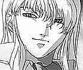Age : 27 (environ)Sexe : Homme
Race : Humain
Faction : Alliance
Formation : Mage
Description : Prologue
Au cours des événements de la première guerre qui opposa la l'Alliance à la Horde, on put retenir bons nombres de reçits de batailles épiques opposant les courageux soldats à la terrible marée verte. Rares sont ceux qui évoquent une situation différente...
Pourtant, au sein des archives du Sanctuaire des Mages de Stormwind, se trouve un écrit étrange, celui d'une nuit ou hommes et orcs furent unis dans la même peur et la même haine envers une puissance furieuse qui détruisit toute vie autour d'elle le temps d'un cri...
Cette nuit là, l'Alliance perdit un village entier et un bataillon de la garde de Stormwind. La Horde perdit de très nombreux braves. Les rares survivants de ce cataclysme, lorsqu'on leur demanda ce qu'il était arrivé, répondirent que cette nuit-là, un démon s'était éveillé...
Ca commence...
Bien des années plus tard, l'aube se levait à nouveau sur l'Abbaye de Northshire, a travers une fenêtre, un rayon de lumière vint éclairer le visage endormit de Valnar, celui ci frémit au contact de la chaleur. Cela faisait des jours qu'il n'avait pu dormir, son professeur l'avait fait revenir de son "pèlerinage forcé" en Kalimdor et ce périlleux voyage n'avait prit fin il y n' a que quelques heures seulement. Le jeune homme etait supposé se lever et rejoindre son maître dans l'instant, il le savait...Il se retourna sur sa paillasse et se rendormit.
Khelden Bremen Montait les marches de l'Abbaye en marmonnant. Son disciple allait recevoir l'honneur d'être accepté au sein des magus de la Cité de Stormwind, et il préférait flemmarder! L'Alliance était dans une situation si désespérée, au point d'offrir ce titre au premier aspirant Mage venu? Il avait certes un potentiel, mais de là a être convié par l'Archimage Malin en personne...
Le maître Mage arriva frappa a la porte de son disciple.
-Valnar?
Pas de réponse, il dormait encore, Bremen sentait la douce chaleur qui émanait de la pièce, il rêvait encore, le feneant!
-Valnar! Tu veux peut etre que je vienne te chercher!?
La chaleur s'estompa, après quelques minutes,Un jeune homme au corps fin lui ouvrit, il avait a peine prit le temps de mettre un pantalon et ne semblait même pas gêné d'arborer cette tenue face à son supérieur. Ses traits fins s'éclairèrent et il repoussa quelques une des longues mèches rousses qui cachaient son visage. Il sourit, l'air doux et chaleureux.
-Ha, maître! Heureux de vous voir! Comment vous portez vous? Je ne...
-Ça va, ça va! Gronda le maître. Garde ton air angélique pour plus tard, tu en aura besoin pour expliquer aux grands Mages pourquoi tu est en retard si tu ne te hâte pas de partir tout de suite pour Stormwind!
Le jeune homme parut étonné. Il scruta le visage de Bremen avec les deux rubis qui lui servaient d'yeux, ne perdant rien de son expression, presque agaçante.
-Je repars... pour Stormwind?
-C'est pourquoi j'ai demandé ton retour, L'Archimage Malin veut te voir.
Le nom du maître magicien fit momentanément perdre son sourire au jeune homme.
-Ah! Assez papoter, finis de te préparer, je veux que tu passe par Goldshire auparavant. Presse toi!
Sans se faire attendre, le jeune homme ferma sa porte... Il s'adossa à cette dernière et prit une grande inspiration, l'espace d'une petite seconde, les longs tatouages longeant son corps frémirent d'énergie. L' Air toujours calme, il murmura:
-Ça commence...
Plus d'infos sur Valnar >>>
Lire les 19 récits de Valnar >>>
Valragh
 Age : 25
Age : 25
Sexe : Homme
Race : Orc
Faction : Horde
Formation : Guerrier
Description : Orphelin de la Horde, il suivi, dès son plus jeune age,une formation particulière avec un maître d'arme.
Plus d'infos sur Valragh >>>
Lire le récit de Valragh >>>
Valring
 Age : 27 (environ)
Age : 27 (environ)
Sexe : Homme
Race : Mort-vivant
Faction : Horde
Formation : Mage
Description : Il attendait encore...Il ne faisait que ça. Sa tâche n'était guère passionnante, mais il n'aurait jamais je courage de partir au combat...Alors c'était mieux ainsi...Ainsi Se passaient les sombres jours du fossoyeur Mordo depuis qu'il avait rejoint les reprouvés. A attendre ceux qui, dans le cimetière du Glas, reviendraient à la vie pour servir la dame noire, ou à brûler les corps qui sont trop abîmés pour revenir autrement que sous la forme de zombis ou de squelettes du fléau.
Il soupira, la crypte qu'il gardait était sûrement vide, plus aucun reprouvé n'en était sortit depuis des jours. Ce n'était plus la peine d'attendre. C’est a cet instant que de légers murmures, presque inaudibles, s'échappèrent de la sinistre construction. Un nouveau venu? Mordo s'approcha pour entendre, un souffle froid le frappa, et il poussa un gémissement alors qu'un de ses yeux fut littéralement gelé.
Le souffle cessa, mais pas les murmures, Le fossoyeur décida d'entrer. A mesure qu'il s'enfonçait dans les ténèbres, le froid l'enveloppait, de plus en plus mordant, les murmures se faisaient plus clairs, chantant des histoires de morts, de haine et de vengeance, Jamais dans toute sa vie (et sa non vie) il ne s'était senti si mal a l'aise. Il arriva enfin devant la porte de la dernière pièce de la crypte, dans cette salle furent placées les premières victimes du fléau, jusque là, il n'en était sorti que des zombis totalement asservis par le Roi Liche. Tout cela était également de son fait? Mordo hésita longuement avant de pousser lentement la lourde porte. Au même moment, un cri déchirant fit taire les murmures, et toute la crypte fut ébranlée par une terrible tempête glacée, les murs et les os se couvrirent de givres, de nombreuses salles s'effondrèrent. Quand le cri cessa, Mordo, affalé à terre dans les décombres, découvrit alors un spectacle unique, dantesque.
Au milieu de la pièce totalement glacée, se tenait un jeune homme, un mort vivant, son corps a l'allure frêle était encore dans un état plus que correct, ses traits jeunes et beaux trahissaient le jeune age qu'il pouvait avoir à sa mort, ses longs cheveux blancs a la teinte bleutée couvraient encore la totalité de son crâne. On aurait pu le croire encore en vie si ses os ne s'échappaient pas, à son ventre, ses bras ou ses jambes, au delà de la chair, si sa peau n'avait pas cette pâleur froide et si ses yeux ne dégageaient pas cette lueur glacée, saturée d'énergie magique. Des caractéristiques propres à beaucoup de reprouvés, mais qui marquaient encore plus le nouveau venu. Il se tenait là, légèrement cambré, un large sourire au visage. C'était à la fois magnifique et terrifiant, ce jeune homme, au milieu du chaos dont il était sûrement à l'origine, évoquait quelque chose de terrible, de mortel.
Il posa son regard sur le fossoyeur et ce dernier frissonna. Bien que le nouveau Reprouvé ne lui prêta aucune attention lorsqu'il passa silencieusement près de lui, à cet instant précis, Mordo eu aussi peur que ce jour où il rencontra la mort...
L'étrange jeune homme quitta le sépulcre, suivit par le froid mordant qui quitta peu a peu les lieux. Le vieux Mordo reprit sa place. Se demandant parfois ce qu'il est advenu de celui qu'il appelle parfois le "Démon".
1-La colère
Pendants des années, j'ai erré. Des saisons entières, rampé comme une larve, condamné à un destin misérable, n'existant plus que pour ma vengeance. Mon esprit sort peu à peu des limbes, alors que je revoit qu'est ce qui me pousse aujourd'hui a accepter cette renaissance. Les images les plus recentes d'abord, L'armée de goules et cette abomination sur moi, la bataille au Lordaeron. Puis ces années, terré dans ces caves et ces grottes, façonnant lentement l'arme de ma revanche. Et enfin lui, lui, ce démon, qui m'a volé mon existence, qui a balayé mon avenir en une nuit.
Mon corps s'anime alors que le froid de la mort fait frissonner la moindre parcelle de chair qui me reste encore. Je sens une affreuse pression contre ma poitrine alors que mes poumons tentent de se remettre en marche. C'est parfaitement vain, je sens les côtes qui les traversent à chaque geste. Mon corps est en lambeau, J'ai perdu jusqu'à la vitalité de ce corps jeune, qui avait déjà tant souffert. Peu importe. Du moment qu'il me permette de réaliser mon seul but désormais.
Je sens ma main, une main nouvelle, décharnée, griffue, qui se crispe et qui s'élève lentement en l'air, comme pour annoncer mon retour. Mais je ne suis pas de retour, Je suis mort et rien ne pourra être comme avant. Peu importe, plus rien ne pouvait être "comme avant" après ce qu'il a fait. Ma résurrection s'achève, mes yeux s'ouvrent, derrière un voile froid et terne, je vois les murs de ma tombe. Puis je ressens la douleur, ce mal, celui du dernier coup qu'on m'a porter, celui de ces années de décrépitude, celui de mon coeur glacé qui tente pourtant de battre. Je pousse un cri, pas un cri comme celui des nouveaux nés aux premiers instants de leur vie, mais un cri de colère, Cette fureur endormie pendant tout ce temps se libère a nouveau, je la laisse m'envahir. A la fin, la crypte est couverte de glace. Ma puissance, je ne l'ai pas perdue, au contraire, et finalement, je n'aurai jamais cru me sentir si bien. Puis les images défilent, un entraînement aux sciences d'arcanes avec un maître archimage... Le lien s'est reformé...Oui, qu'il sache, qu'il réalise que je suis de retour, et qu'il va payer.
Un large sourire s'affiche sur mon visage alors que je comprends que l'heure est enfin venue. Le temps de mon retour est arrivé, ma vengeance sera faite. Un vieux fou, un mort vivant lui aussi, fait irruption. Voilà donc mes nouveaux compagnons, de misérables créatures au corps brisé. Je ne sombrerai pas dans la pourriture, comme eux. Ils me dégoûtent, j’entends la voix de notre reine, Dame Sylvanas. J'entends l'appel aux armes des Réprouvés, La mort m'a apporté une nouvelle force, et une armée a rejoindre. Parfait Elle me sera utile pour parvenir a mes fins. Bientôt, petit frère, bientôt...tu subiras mon courroux.
Plus d'infos sur Valring >>>
Lire les 3 récits de Valring >>>
valsurfeur
Sexe : HommeRace : Elfe
Faction : Alliance
Formation : Guerrier
Plus d'infos sur valsurfeur >>>
Vârghas
Age : 196Sexe : Homme
Race : Elfe
Faction : Alliance
Formation : Chasseur
Plus d'infos sur Vârghas >>>
Vegore
Sexe : HommeRace : Mort-vivant
Faction : Horde
Formation : Voleur
Plus d'infos sur Vegore >>>
Velassia
Age : 210Sexe : Femme
Race : Elfe
Faction : Alliance
Formation : Chasseur
Description : Velassia est une jeune elfe pleine de vitalité et d'énergie. Elle a un côté qui peut sembler plein de candeur, et est en même temps capable de faire preuve d'un côté posé qui tranche fortement avec son attitude légère qu'elle a d'ordinaire.
Elle adore mener deux ou trois conversations en même temps, aussi déstabilisant que cela puisse être.
Plus d'infos sur Velassia >>>
Velcan
Age : 35Sexe : Homme
Race : Humain
Faction : Alliance
Formation : Voleur
Description : Cheveux noirs, queue de cheval , barbe en bouc.
Age : 35
Alignement : neutre mauvais
Plus d'infos sur Velcan >>>
Venessia
 Age : 21 ans
Age : 21 ans
Sexe : Femme
Race : Humain
Faction : Alliance
Formation : Démoniste
Description :

Qui je suis?
Je ne sais pas. Ceux qui m'ont donné la vie sont mort avant que je ne puisse le savoir, ou même savoir qui ils étaient.
Comment ai j'ai grandi?
Dans la solitude, sous l'egide d un père qui m'a confondue entre fille et servante, femme et maitresse, Complice ou esclave. Je n'ai sans doute pas a me plaindre, c est lui qui m'a façonné, lui qui m'a appris à parler, à penser, à marcher, lui qui m'a instruite, lui qui m'a transformé en poupée de verre dont l aspect prévalait sur tout. Il m'a appris le gout du luxe, le gout des artifices, ce Narcissisme qui m'habite souvent, comme un mauvais réflexe même si j'essaie de l'évincer.
Je n'ai pas à me plaindre, la nature fut a mon égard bien généreuse, et je veille a ce qu'elle le reste, la vie est plus simple pour une femme jolie.
Aujourd hui je suis libre, libre et seule, en haut d'une falaise, sur un nouveau départ. J'attend, j'espère, j'ai peur aussi de ce qui m'attend, mais je trouverais mon chemin, tôt ou tard.
Plus d'infos sur Venessia >>>
Lire le récit de Venessia >>>
Virtus
 Age : 31
Age : 31
Sexe : Homme
Race : Humain
Faction : Alliance
Formation : Paladin
Description : Tristan Amadis Virtus de Valfroid, dix-septième Vicomte de Turenne.
Sous l'égide bienveillante de l'aurore printanière naquit, au sein du bastion de Montfort, érigé à quelques lieues de Stormwind, le jeune Virtus, baptisé ainsi alors même que s'annonçaient seulement les prolégomènes attenants à l'éros, alors même que sous de cléments auspices muait, imperceptible, l'être fluet et insignifiant lové dans la conque maternelle.
Enfant puîné d'Alexandre Antoine Amadis de Valfroid, Duc de Choiseul, et de son épouse Anastasie. Enfant désiré, mâle prédestiné à l'accomplissement des plus grands triomphes, des plus grandes conquêtes, il obtint en apanage le Comté de Turenne, riche parcelle du domaine ducal ; Virtus fut dès son plus jeune âge investit de maintes prérogatives, certes, mais aussi astreint à de titanesques impératifs. Son frère Louis de trois ans son aîné étant destiné à régenter le domaine, la sentence était nette, son avenir arrêté ; il lui faudra arpenter le sentier des armes. Moins belliciste que survivancier, esprit sensible non dénué de lyrisme, aimant flâner dans les ruelles escarpées et sinueuses du quartier latin de Stormwind, d'une remarquable intelligence en affaire, en somme bien nanti par Dame Nature, il s'accommoda fort mal de ses fonctions, et des austérités inhérentes à celles-ci.
Tiraillé par de nombreux conflits intrinsèques, il trouva, dans la fleur de l'âge, réponses à nombre de ses questionnements dans les enseignements prodigués par l'abbé de Nortshire, où il se trouvait en garnison. Sa propension à l'hédonisme, son accoutumance à l'épicurisme dictée par l'impérieux désir de se dérober à la morne vie en faction, sa désinvolture, son cynisme bientôt gâtaient son être et son âme et le desservaient grandement. Science sans conscience n'est que ruine de l'âme ; le jeune Virtus, à l'aune de la déclamation de sa profession de foi, de son entrée dans les ordres, en avait la mesure. Et ce jour vint enfin ! Erigeant dès lors en règles de vie des préceptes glorifiant la noblesse de coeur et d'esprit, cultivant la compassion et la philanthropie, s'attelant à ne point renier sa nature et les siens, tout en progressant sur les voies de la Lumière, Virtus vit muer la haine farouche de sa propre condition, et du fatum qui l'étreignait, en un positivisme résolu et serein.
Tribun de la plèbe, Chevalier ganté de velours, maniant la plume sur le vélin pareillement aux armes, le voilà prompt à un certain éclectisme, insatiable de vie, libre penseur, homme soucieux des interrogations de son temps, homme d'avenir aussi, confiant quant à ses dénouements, et, rejetant tout fatalisme, convaincu du rôle de l'homme en son propre accomplissement, par la solidarité qui caractérise, en ses plus belles heures, l'espèce, et par l'émancipation de l'âme et de l'esprit sur la concupiscence et les appétences qui forment l'inextricable lien reliant l'homme à sa condition animale, sans pour autant renier la grâce satinée, l'ineffable charme féminin, encensant celles que la vénusté a pris pour modèles.
L'existence alors était douce. Rarement maître de se faire aimer, l'homme l'est de se faire estimer ; Virtus s'y attelait auprès de la jeune communauté de Northshire, insufflant quelques embruns de foi et de bonté, refusant de fixer tout à fait son esprit à l'aune d'une exhortation à la haine, et ne prenant pour mécréant non ceux qui ne logaient point à son Eglise, mais ceux qui s'en écartaient effectivement par leurs actes. L'appel des armes, cependant, et la nécessaire abdication de soi face aux serments d'airain prononcés, la paume pressée contre son coeur balbutiant, eurent raison de ses atermoiements. Partant, flamberge au vent, pouvait-il seulement apercevoir les bribes de déchéance, l'implacable déclin dans les tambours de guerre, le souffre et le sang. Ne pouvant s'y dérober, son père, Commandant en charge d'un important détachement de cavaliers, l'accompagna. Le trépas, le sang frémissant, le marasme fangueux, les arquebuses tonnant au rythme de l'impassible fauche des âmes...
Son père poignardé, par son aide de camp, un obscur hoberau ayant accédé aux plus hautes dignités au sortir de ce jour funeste, sa famille ruinée, son frère occit par quelque nébuleux bretteur de passage, sa ruine totale. Virtus renia fortune et distinctions militaires, et embrassa la monacale existence d'un pèlerin imbu de sérénité, placide face à la détresse, épris de la seule ataraxie, de la seule quiétude.
Et son âme encore, à l'aube de sa vingt-sixième année, vibra, empoignée par la prêche et confortée par le pragmatisme d'un esprit bien fait, en son essence dédié à penser l'Autre et à sublimer sa condition.
Plus d'infos sur Virtus >>>
Vorapsak
Sexe : HommeRace : Troll
Faction : Horde
Formation : Mage
Plus d'infos sur Vorapsak >>>
Lire le récit de Vorapsak >>>
Wilbur
 Age : 26
Age : 26
Sexe : Homme
Race : Gnome
Faction : Alliance
Formation : Voleur
Description : Wilbur est né, ce qui est déjà une bonne chose en soi.
Ses parents un ingénieur roublard un peu fou du nom de Pizzle le Twizzle et Guêtre l'ont eu tardivement mais s'en sont bien occupés jusqu'au décès du père, alors que Wilbur n'est qu'un enfant.
Dans le restaurant de sa mère à Gnomeregan, il suit les exploits de son grand-père maternel surnommé "Papi Tromblon".
Lorsque sa mère disparaît à Lordaeron, Wilbur est déjà un jeune adulte.
Son grand-père à l'hospice et le reste de sa famille fuyant la capitale gnome irradiée, Wilbur décide de partir explorer le monde pour découvrir le secret des meilleures tartes aux fruits du monde.
Plus d'infos sur Wilbur >>>
Woodkand
Age : 26Sexe : Homme
Race : Humain
Faction : Alliance
Formation : Voleur
Description : Je suis connus sous le pseudonyme de Woodkand.
Mes parents étaient des défias. Je suis né dans un de leur camp,
au Nord de Goldshire. Je n'ai qu'une motivation : l'argent.
Je vole, assassine et effectue divers travails pour quelques pièces.
Je travaille en solitaire, et ne parle que losque ça m'arrange.
J'aime écouter discrétement les autres parler, cela me permet de
trouver du travail.
J'évite les grandes villes. A cause de mes actes illégaux je dois faire
attention aux gardes, et aux gens qui, tapis dans l'ombre me
guettent...
Plus d'infos sur Woodkand >>>
Lire les 2 récits de Woodkand >>>
x
 Sexe : Homme
Sexe : Homme
Race : Humain
Faction : Alliance
Formation : Démoniste
Plus d'infos sur x >>>
Lire les 5 récits de x >>>
Xorys
Age : 21Sexe : Homme
Race : Humain
Faction : Alliance
Formation : Paladin
Plus d'infos sur Xorys >>>
Yaeb
Age : 27 ansSexe : Homme
Race : Humain
Faction : Alliance
Formation : Voleur
Plus d'infos sur Yaeb >>>
Yörick
 Age : 35
Age : 35
Sexe : Homme
Race : Humain
Faction : Alliance
Formation : Guerrier
Description : Troisième fils d'une famille de basse noblesse, Yörick fût celui qui n'aurait rien à la mort de ses parents. Son premier frère, Sigmund, héritera des titres et des terres et fût éduqué en conséquance, et le second, Anatol, obtint une place de faveur dans les ordres. C'est donc afin de plaire à sa famille que Yörick s'engagea dans la guerre contre le roi liche.
Au plus fort des combats, une nouvelle lui parvint, qui brisa ses illusions... Sigmund avait épouser la femme qu'aimait Yörick en vertu du droit d'ainesse, et nul ne pouvait rien faire.
Au comble du désespoir, ses rêves brisés, sa confiance trahie, Yörick se jeta dans les flammes de la bataille à corps perdu, livrant son âme à la seul rage, la seule colère et la seule haine qu'il ressentait envers son frère, envers les hommes et envers la création toute entière.
Lors de son avènement, Arthas avait remarqué Yörick et lui proposa de devenir un chevalier de la mort. La suite est faite de sang, de pleurs et de mort, jusqu'à ce jour où la félonie d'Arthas fût dévoilée. Trompé pour la seconde fois, ses deux frères et la femme qui l'aimait morts, Yörick décida de canaliser le feu qui lui brûlait les entrailles à l'accomplissement d'une tâche ultime, laver son nom, son honneur et son âme...
Pour cela, il fît le serment de ne jamais plus lever son épée contre un innocent, ne ne jamais plus la mettre au service de ceux qui cherchent le pouvoir et la domination et de ne tuer que si c'est là l'ultime recours...
Plus d'infos sur Yörick >>>
Lire le récit de Yörick >>>
Yüriko
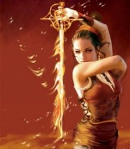Age : 19Sexe : Femme
Race : Humain
Faction : Alliance
Formation : Guerrier
Plus d'infos sur Yüriko >>>
Lire le récit de Yüriko >>>
Zacharie
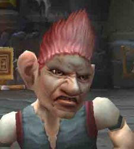Age : 25Sexe : Homme
Race : Gnome
Faction : Alliance
Formation : Voleur
Description : [A venir...]
Plus d'infos sur Zacharie >>>
Lire le récit de Zacharie >>>
Zalkan
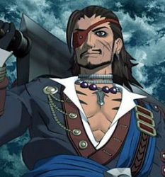Age : 32Sexe : Homme
Race : Humain
Faction : Alliance
Formation : Voleur
Description : Pirate alcoolique notoire, reconverti dans la chasse de primes élevées et le pillage de butins de nombreux donjons. Activement recherché par les autorités pour état d'hébriété sur la voie publique, violence, vols, contrebande, insultes répétées à magistrats et fonctionnaires de Stormwind, attentat à la pudeur et destruction de biens publiques.
Plus d'infos sur Zalkan >>>
Lire le récit de Zalkan >>>
zelel
Age : 19Sexe : Homme
Race : Humain
Faction : Alliance
Formation : Paladin
Plus d'infos sur zelel >>>
Zénia
 Age : 130
Age : 130
Sexe : Femme
Race : Elfe
Faction : Alliance
Formation : Guerrier
Plus d'infos sur Zénia >>>
Lire les 3 récits de Zénia >>>